Introduction
RideX is a white-label ride-hailing platform: a Laravel backend with an admin panel, a Flutter Rider app and a Flutter Driver app. Riders book and pay for trips; drivers go online, accept offers and earn; you run the platform from the admin panel.
This documentation is also online, always in its latest version, at shamimcse1.github.io/ridex-docs.
What's in the package
| Folder | What it is |
|---|---|
ridex_backend/ |
REST API, admin panel and web installer (Laravel 12, PHP 8.4.1+) |
ridex_rider/ |
Rider app (Flutter, Android and iOS) |
ridex_driver/ |
Driver app (Flutter, Android and iOS) |
vendor/ridex_core/ in each app |
Code shared by both apps: an identical copy inside each app (Shared app code) |
Documentation/ |
This documentation, its screenshots (assets/) and the Postman collection of the API (api/) |
Setup order
- Backend. Upload
ridex_backend/, point the web server at itspublic/folder and open/install, or use the terminal steps. See Backend and Deployment. - Admin panel. Sign in, then set your branding, zones, vehicle types and fares (First-time setup).
- Keys. Add your Google Maps, Firebase, Twilio and payment gateway keys (Third-party services).
- Apps. Set the backend URL, Maps keys and Firebase files, then build both apps (Mobile app setup).
- Go live. Work through the going live checklist. Once your apps are in the stores, enforce Firebase App Check so only your genuine apps can use the live-tracking database and Firebase sign-in (Firebase App Check).
Requirements
- Server: PHP 8.4.1+, MySQL 8+ or MariaDB 10.4+, a cron job and a queue worker. Node.js 20.19+ or 22.12+ only if you change the admin panel's styles: the package includes the built files.
- Apps: Flutter 3.44+ (Dart 3.12+), with Android Studio for Android and Xcode for iOS. They run on Android 7.0 (API 24) or newer, built for API 36, and on iOS 15.0 or newer (details).
- Accounts: Google Cloud (Maps), Twilio for sign-in codes (or Firebase Phone Auth), and a payment gateway for card or online payments (cash and wallet payments need no gateway). Firebase is optional: it adds push notifications and instant ride updates. To publish the apps: Google Play Console and a paid Apple Developer account, which Firebase App Check also uses for Play Integrity and App Attest.
Backend & admin panel
Laravel 12 REST API for the RideX Rider and RideX Driver Flutter apps, plus the Blade admin panel.
RideX/
├── ridex_backend/ ← this project (API + admin panel)
├── ridex_rider/ ← Flutter rider app (shared app code in vendor/ridex_core)
└── ridex_driver/ ← Flutter driver app (an identical copy of vendor/ridex_core)
Documentation: docs/index.html is the complete guide (backend, deployment, both apps and the API reference) as one page with its screenshots in docs/assets/, so it can be opened offline or uploaded to any static host. It's built from this README, DEPLOYMENT.md, the app READMEs and the pages in docs/src/ (the version number comes from CHANGELOG.md), so rebuild it after editing any of them:
php artisan ridex:docs
The CodeCanyon package carries the same page in its top-level Documentation/ folder, with the screenshots (assets/) and the Postman collection (api/). The command refreshes that folder whenever it sits next to this project. Keep screenshots in docs/assets/screenshots/ and show them with , which works both in this README and in the page.
Requirements
- PHP 8.4.1+ (extensions: ctype, curl, dom, fileinfo, json, mbstring, openssl, pdo_mysql, tokenizer, xml, xmlreader, zip)
- Composer 2
- MySQL 8+ or MariaDB 10.4+ (XAMPP works for the database; its bundled PHP 8.2 is too old to run RideX)
Installation
For a live server (Apache/Nginx, shared hosting, Supervisor, Google Maps, Firebase, Twilio and payment gateway keys, troubleshooting), follow DEPLOYMENT.md.
Web installer: on a host without a terminal, upload the files (including vendor/), don't create .env, and open {APP_URL}/install. It checks the server, asks for the database and the super admin, then migrates, seeds and writes .env. It switches itself off afterwards: the app counts as installed once .env has an APP_KEY.
Locally, with a terminal:
composer install
cp .env.example .env
php artisan key:generate
# create an empty database named "ridex" (utf8mb4), then set DB_* in .env
php artisan migrate --seed
php artisan storage:link
php artisan serve
Background processes (both are required for dispatch):
php artisan queue:work --queue=dispatch,notifications,default # offer timeouts, search retries, push notifications, card charges
php artisan schedule:work # local; in production add the cron below
Production cron: * * * * * cd /path/to/ridex_backend && php artisan schedule:run >> /dev/null 2>&1.
- Every minute it runs
ridex:dispatch-tick, which releases scheduled rides that are due and expires overdue offers if a timeout job was lost. - Once a day (
documents.reminder_time) it runsridex:remind-expiring-documents: drivers are told once before a document expires and once after. - Every minute it runs
ridex:send-push-campaigns, which queues the push campaigns whose scheduled time has come.
Local testing and demo mode
.env.example ships production-safe defaults: APP_ENV=production, APP_DEBUG=false, RIDEX_DEMO_MODE=false and OTP_PROVIDER=twilio. To try every flow on your machine without SMS or payment keys, change these in .env before php artisan migrate --seed:
APP_ENV=local
APP_DEBUG=true
RIDEX_DEMO_MODE=true # demo accounts, demo OTP and the Demo payment gateway
OTP_PROVIDER=log # codes go to storage/logs/laravel.log and come back as debug_code
Going live checklist
APP_ENV=production,APP_DEBUG=false, andAPP_URLset to yourhttps://domain.SESSION_SECURE_COOKIE=trueonce the site runs on https, andTRUSTED_PROXIESif it sits behind a load balancer or CDN such as Cloudflare (see DEPLOYMENT.md).RIDEX_DEMO_MODE=false. Otherwise the demo numbers log in with the demo OTP and the Demo payment gateway adds wallet money for free.OTP_PROVIDER=twiliowithTWILIO_SID,TWILIO_AUTH_TOKENandTWILIO_FROMset. Without them, sending a code fails withsms_not_configured. Alternatively, send codes with Firebase Phone Auth (see DEPLOYMENT.md).MAIL_*set to your mail service, or users' emails are only written to the log.- Firebase rules deployed: press Deploy rules in Admin → Firebase Configuration, and check that Realtime Database → Rules doesn't show
".read": trueor".write": true(Firebase). - Firebase App Check registered for both apps, and enforced for Realtime Database and Authentication once the store builds show up as verified (Firebase App Check).
- Set
ADMIN_EMAIL/ADMIN_PASSWORDbefore seeding, or change the password in Admin → Profile right after the first login. - Run
php artisan optimizeafter every.envchange, and keep the queue worker and cron running.
Admin panel
URL: {APP_URL}/admin. It is built with Blade, Tailwind CSS v4 and Alpine.js.
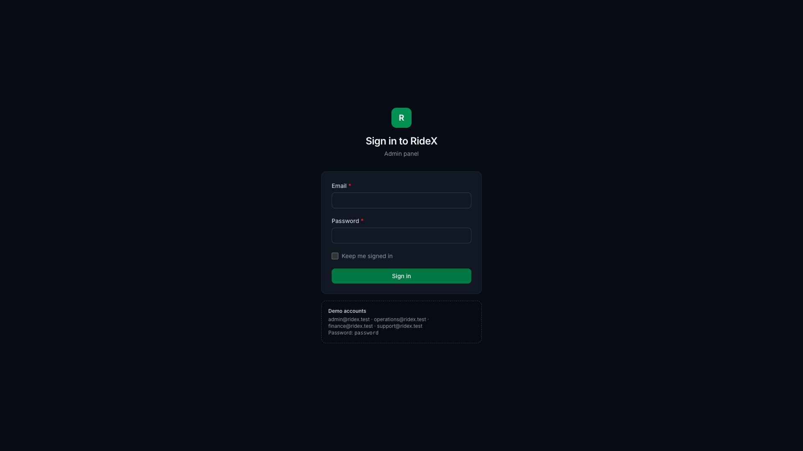
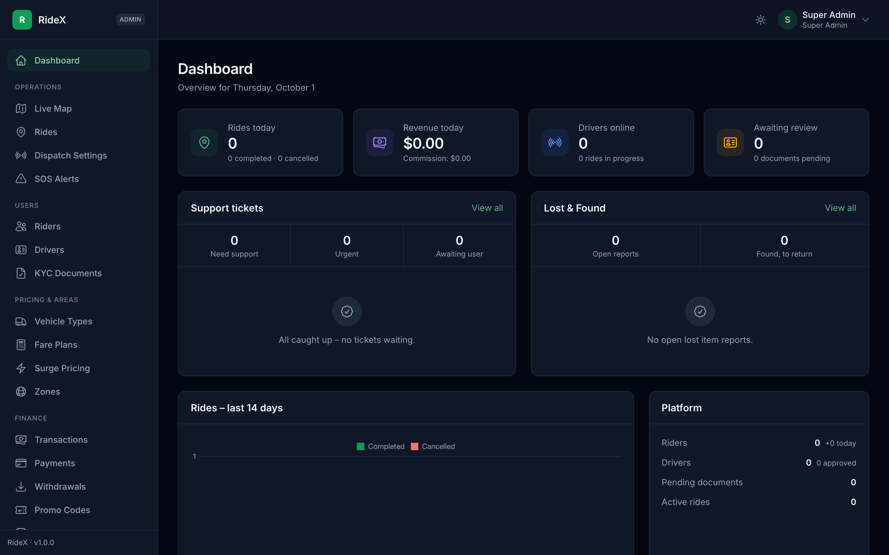
- Prebuilt assets: compiled CSS/JS ships in
public/build, so buyers don't need Node.js. To customize the styles, runnpm install && npm run build. - White-label: the brand color comes from the
branding.primary_colorsetting. It is applied as a CSS variable, and everybrand-*shade is derived from it withcolor-mix(), so rebranding needs no rebuild. - Dark mode: follows the system setting and can be toggled from the top bar. The choice is saved in the browser.
- Roles and permissions: every route is guarded by a permission slug (
->can('drivers.approve')). The sidebar (app/Support/AdminMenu.php) only shows modules whose route exists and that the admin is allowed to open. - Admins & Roles: add admin accounts, and build roles from a permission grid (each module's view, create, edit and other actions).
- Admins only hand out access they hold themselves: roles within their own permissions, and accounts that use such roles. No one can change their own role, status or account, so the signed-in Super Admin always remains. The Super Admin role holds every permission and can't be edited.
- The built-in Operations, Finance and Support roles can be edited but not deleted. Re-running
AdminRolePermissionSeederkeeps those edits and only grants permissions it adds. A role without the dashboard opens its first allowed page after sign-in.
- Super Admin → Firebase Configuration: upload the Firebase service-account key (Firebase console → Project settings → Service accounts → Generate new private key). Only Super Admins can open it; it cannot be granted to other roles.
- The file must be a
service_accountkey with a valid project ID, service-account email and RSA private key. Anything else is rejected with the reason. - It is stored encrypted with
APP_KEYinstorage/app/private/firebase/, never in the database or cache, and the private key is never shown again. After changingAPP_KEY, upload it again. - An uploaded key takes precedence over the
FIREBASE_CREDENTIALSfile. Uploading never changes other settings. The page warns when the key's project differs fromFIREBASE_PROJECT_IDor no Realtime Database URL is set. - Connected apps shows, for each app, how many signed-in phones registered for push. Deploy rules uploads
firebase/database.rules.jsonto the Realtime Database with the same key, so no Firebase CLI is needed.
- The file must be a
- KYC review:
- Drivers → Review shows the approval checklist, every document with a preview, and approve/reject actions. A rejection reason is required and is shown to the driver.
- KYC Documents is a first-come-first-served queue, with tabs for expiring, expired and rejected documents.
- A driver can only be approved once every required document and the default vehicle are approved. The panel lists exactly what is still missing.
- Every decision is written to the activity log and sent to the driver's in-app inbox.
- Driver performance: each driver's page has a Performance card for today, this week or this month, in the driver's local time: trips, earnings (fares and commission), tips and bonuses, cash collected, online time and the acceptance rate. These are the figures the driver app shows. The acceptance rate counts the offers a driver accepted, declined or let expire. Withdrawn offers don't count against the driver: another driver accepted first (broadcast mode), or the rider cancelled or the search ended. The page lists all four. The drivers list and the driver app show the lifetime rate on the same terms.
- Account status: suspending or banning a user needs a reason. It revokes their app tokens immediately and takes drivers offline.
- Super Admin → Payment Configuration: everything the apps offer at checkout is decided here, so no payment method is hard-coded in the apps.
- Switch the rider payment methods on or off: cash, wallet, card (needs Stripe) and pay online (needs any gateway).
- Connect Stripe, Razorpay, PayPal and Flutterwave. Each card is built from the gateway's own field list, so adding a gateway class adds its settings form.
- Keys are encrypted with
APP_KEYand never shown again (only the last 4 characters). Leave a key blank to keep it; tick "Remove" to delete it. - Wallet limits (minimum top-up, maximum balance, minimum withdrawal, driver dues limit), tips and the maximum tip.
- Each gateway shows its webhook URL. Webhooks are optional: the app also confirms a payment when the rider returns from the hosted page.
- With
RIDEX_DEMO_MODE=truea Demo payment gateway appears, so every flow can be tried without keys. Turn demo mode off before going live.
- Finance:
- Wallet transactions: the full ledger with filters, and manual credit/debit adjustments (with a reason, audit-logged).
- Withdrawals: approve, mark as paid with the transfer reference, or reject with a reason. A rejection returns the held amount to the driver's wallet.
- Payments: every gateway payment, with full or partial refunds. A refunded top-up is first taken back out of the wallet.
- Incentives: daily, weekly or monthly targets (trips, earnings or online hours), optionally limited to a vehicle type or zone.
- Zones: draw each service zone on a map (click to add a point, drag to move it, click a point to remove it), with a priority and an airport fee. Cities (map centre, time zone) and countries (dialling code, currency) are managed next to them. Anything still in use, such as a zone with fare plans or a city with drivers, can't be deleted.
- Promo Codes: a percentage (with an optional cap) or fixed discount, minimum fare, total and per-rider limits, first ride only, vehicle type and zone targeting, and start/end dates. Each code lists its redemptions. A deleted code stays reserved, so it can't be reused.
- Content (CMS): pages such as About, Terms and Privacy (rich-text editor), FAQs, home-screen banners (image, tap action, zone, schedule), chat quick messages and cancellation reasons, each for the rider app, the driver app or both. The apps list the pages under Settings → About & legal and the FAQs in Help & support. Each page is also public at
https://your-domain/pages/{slug}(View in the pages list;?lang=arfor a translation): use/pages/privacy-policyas the privacy policy link in the App Store and Google Play listings.- Pages, FAQs, quick messages and cancellation reasons can be translated into each active language; the apps receive the version for their
X-Localeheader. A banner's text is part of its image. - Banners show on both apps' home screens as swipeable 3:1 images (1200 × 400 pixels works well). A tap opens a link, applies a promo code to the rider's next booking (rider banners only), or opens an app screen picked from a list (
Banner::SCREENS; each app maps the keys to its own screens). A banner with a zone shows only where the rider's pickup or the driver's GPS position is in that zone. - Page HTML is cleaned when saved (
app/Support/SafeHtml.php): only basic formatting and http, https, mailto and tel links are kept.
- Pages, FAQs, quick messages and cancellation reasons can be translated into each active language; the apps receive the version for their
- Settings: General (platform and app names, logo, favicon, colours, support contact), Localization & currency, Rides & pricing (ride types, ride PIN, stops, scheduling window, service-zone requirement, surge limits), Safety & support, and App versions. Changes apply at once and reach the apps through
GET /config. Each save is audit-logged with the old and new values (never keys or files).- The fields come from
app/Support/SettingsCatalog.php(label, type, validation), so adding a setting there, plus its row inSettingSeeder, adds it to the page. Long lists, such as the currency and the default phone country, use'input' => 'searchable-select': a dropdown with a search box (<x-admin.searchable-select>, also used for time zones and a city's country). The currency symbol's options follow the chosen currency ('options_from'and'option_sets'), and'creatable' => truealso accepts a typed value. - App versions (force update): each app's minimum version and its Google Play and App Store links. An older app stops at launch with an Update now button, so keep
1.0.0until a release really needs everyone on it.
- The fields come from
- Languages (Super Admin): the languages the apps offer, with the native name, text direction (right-to-left for Arabic, Hebrew, Persian, Urdu) and an on/off switch. The apps start in the phone's language when it is offered, and in the default language otherwise; the default can't be switched off. English, Arabic, Spanish, French and Bengali ship fully translated. To add another, see Adding a language below.
- Dispatch Settings (Operations): sequential or broadcast mode, time to accept, drivers per broadcast, starting and maximum radius and growth per round, rounds, the give-up time, when scheduled rides start searching, how often drivers report their location, and destination mode (on/off, destinations per driver per day).
- Referrals (Finance): who invited whom, rewards paid, and the reward amounts and on/off switch. New amounts apply to new sign-ups.
- Push Notifications: send an announcement or offer to all users, riders or drivers, optionally in one zone (drivers based there and riders who have ridden there), now or at a scheduled time.
- Every message lands in the in-app inbox; the push respects each user's "promotions" preference. An optional image is shown on Android.
- Delivery runs on the queue in batches of 500, so large audiences never block the panel. A scheduled campaign can be cancelled until it starts.
- Super Admin → Maps, SMS & Sign-in: the Google Maps server key, a note on where the apps' Maps keys go (Google reads them only from the app builds), the map tiles and attribution for the admin and trip-share maps, the Sign in with Google / Apple switches, how sign-in codes are sent (Twilio SMS, Firebase Phone Auth or, outside production, the server log) and the Twilio credentials. Server keys are encrypted and write-only; a blank key falls back to
.env. Switch a sign-in method on only after its set-up (Sign in with Google and Apple in DEPLOYMENT.md) is done: the apps show the button as soon as it is on. - Safety & support:
- SOS Alerts: open alerts first, active ones in red, with a dashboard banner and a menu badge. Each shows the user, the ride, a map link and the emergency contacts. Acknowledge while helping, then close it as resolved or a false alarm, with notes.
- Support Tickets: the queue is sorted by priority (safety reports are urgent), with category/priority filters, search and "assigned to me". Reply in the thread (the user gets a push), set the priority and agent, and resolve or close the ticket.
- Lost & Found: follow up open reports and record the outcome; the rider is notified.
- The dashboard shows the support queue and open lost items. A ride's page shows both ratings, the chat transcript and any related SOS alerts, tickets and lost items.
- Reports: rides per day and how they ended, revenue (rider payments, driver earnings, platform share, commission, tax, promo discounts, cancellation fees) and per-driver totals, for any range up to a year, with charts.
- Download as CSV, Excel or PDF, or print, with the
reports.exportpermission (Finance; Operations can only view). Every download and print is audit-logged. - Text that a spreadsheet would run as a formula (such as a driver named
=…) is exported as plain text. PDFs list the first 1,000 rows; CSV and Excel include every row. - PDFs can't join Arabic letters or show Bengali script (a dompdf limitation). For those, use Print: it opens the report as a print-ready page, and the browser's "Save as PDF" keeps every script intact. The reports page points this out when a report needs it.
- Download as CSV, Excel or PDF, or print, with the
- Activity Log: every admin action and important app event, with who, when, the IP address and the details, filtered by person, action, record type and date. A deleted admin's entries keep their name.
First-time setup
A new install comes with sample cities and zones (New York, London and Dhaka), five vehicle types (Moto, Economy, Comfort, XL and Premium) and their fare plans. Before going live:
-
Settings → General: your platform and app names, logo, colours and support contact.
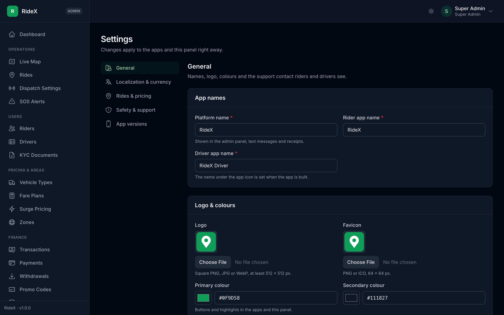
Figure 3: Settings → General on a new install -
Zones: add the cities you serve and draw their zones (Cities and Countries are tabs on the same page). Switch off or delete the sample zones you don't need. Then, in Settings → Localization & currency, choose your currency (its usual symbol is filled in; pick another or type your own) and your Default phone country: the apps' phone number fields start on it, and riders can still pick any other country.
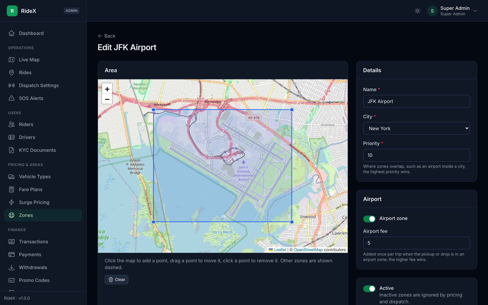
Figure 4: The zone editor: click the map to add a point, drag a point to move it -
Vehicle Types and Fare Plans: the categories riders choose from and what each costs. A default plan applies everywhere; a zone plan overrides it inside that zone.
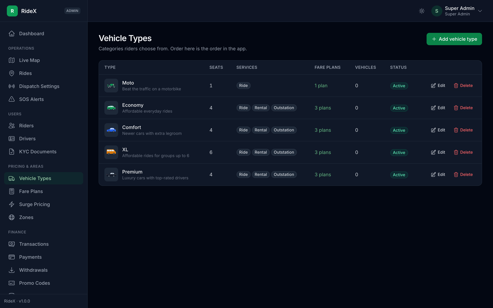
Figure 5: The five sample vehicle types 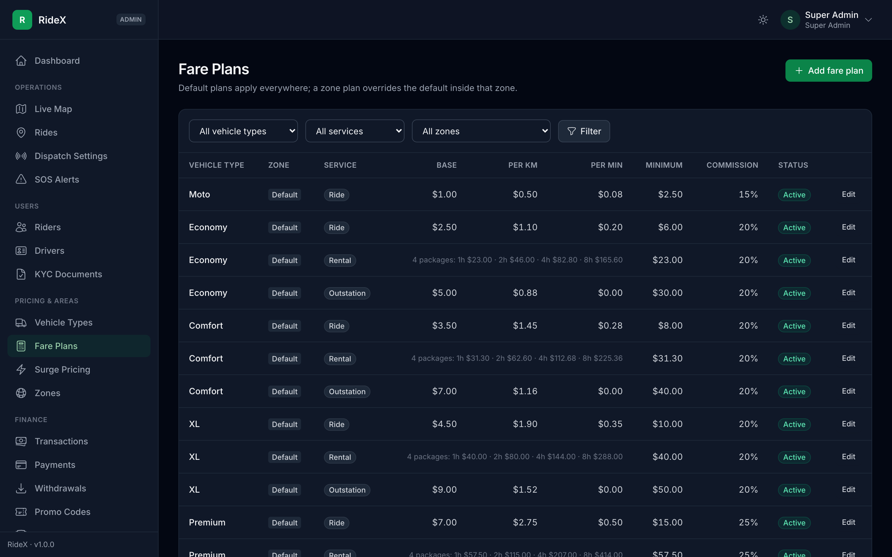
Figure 6: The sample fare plans: base fare, per km, per minute, minimum fare and commission -
Dispatch Settings: how ride requests reach drivers, how long a driver has to accept, and how far the search reaches.
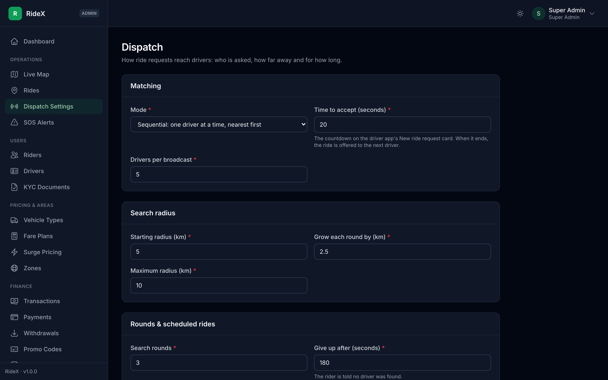
Figure 7: Dispatch Settings with the default values -
Settings → App versions: add your Google Play and App Store links once the apps are live. Keep the minimum version at 1.0.0 until a release needs everyone on it.
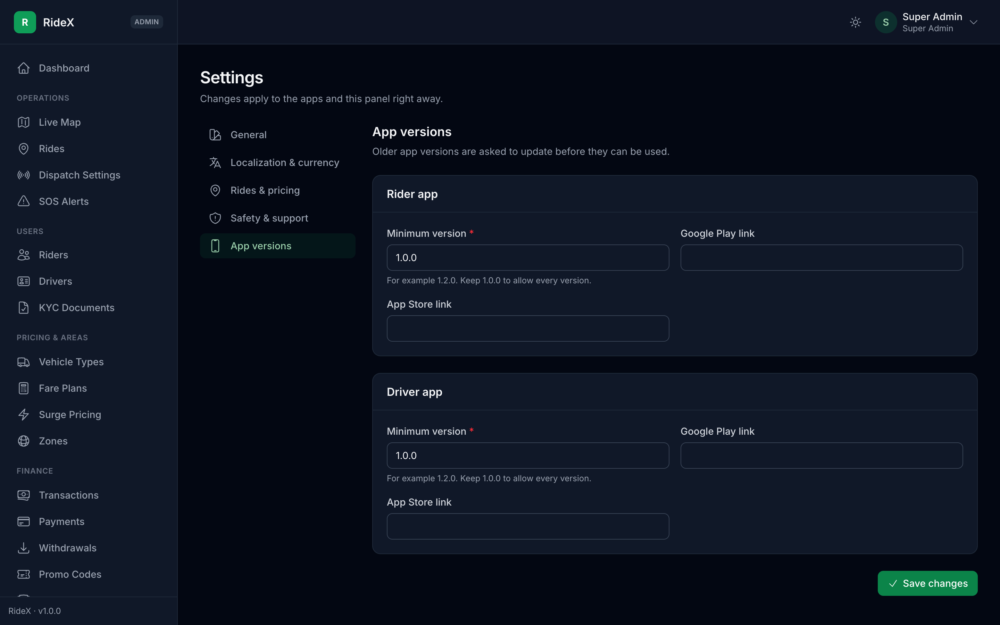
Figure 8: Settings → App versions
Then add your keys in Maps, SMS & Sign-in, Firebase Configuration and Payment Configuration (DEPLOYMENT.md, section 5).
Demo credentials
| Account | Login | Secret |
|---|---|---|
| Super Admin | admin@ridex.test | password (set ADMIN_EMAIL / ADMIN_PASSWORD in .env before seeding) |
| Operations / Finance / Support admins | operations@ridex.test, finance@ridex.test, support@ridex.test | password |
| Rider (app) | +1 5550000001 | OTP 123456 when RIDEX_DEMO_MODE=true |
| Driver (app) | +1 5550000002 | OTP 123456; approved, online in Manhattan, Economy vehicle |
| Driver (app) | +1 5550000003 | OTP 123456; application under review with sample documents, for trying the admin KYC flow |
Demo numbers are listed in RIDEX_DEMO_PHONES. They accept RIDEX_DEMO_OTP without sending an SMS; always call /auth/otp/send before /auth/otp/verify. The apps show one box per code digit (OTP_LENGTH), so keep RIDEX_DEMO_OTP that long. With Firebase Phone Auth, the apps verify every number through Firebase, so add the demo numbers and code under Phone numbers for testing in the Firebase console (Authentication → Sign-in method → Phone).
With APP_ENV=production (the default), the demo riders and drivers are seeded only when RIDEX_DEMO_MODE=true, and the Operations / Finance / Support admins are never seeded.
White-labeling
Configuration is resolved in this order: Admin → Settings (the settings table), then .env, then config/ridex.php.
- App name, colors, support contacts:
RIDEX_*in.env, or edit them in the admin panel. - Logo and favicon: replace
public/images/logo.png,favicon.pngandpublic/favicon.ico, or upload them in Admin → Settings → General. The vector original isresources/images/brand/logo.svg. - Vehicle icons: the seeder copies
resources/images/vehicle-types/{slug}.pngto the uploads disk (next to their.svgoriginals), and each type's map marker fromresources/images/vehicle-types/map/{slug}.png. Markers are seen from above with the front at the top, 72 × 144 px on a transparent background; the apps turn them with the driver. Replace either before installing, or upload new ones in Admin → Vehicle types. - Currency:
RIDEX_CURRENCY,RIDEX_CURRENCY_SYMBOL,RIDEX_CURRENCY_POSITION. - Both apps call
GET /api/v1/configon launch, so branding changes reach them without a new app build.
In code, read a value with setting('branding.app_name'), which is cached and falls back to config automatically.
Adding a language
English, Arabic (right-to-left), Spanish, French and Bengali are translated everywhere: both apps, API messages, notifications and emails. To add another, for example German:
- Admin → Languages → Add language: code
de(orpt_BRfor a regional variant), the English and native names, and the text direction. - Backend texts (API messages, pushes, emails): copy
lang/es.jsontolang/de.jsonandlang/es/tolang/de/, then translate the values. Keep every:placeholderunchanged.php artisan test --filter=LanguageFilesTestfails while a key or placeholder is missing. - App texts: add a
_demap with the same keys as_entovendor/ridex_core/lib/src/localization/core_translations.dart(in both apps: the two copies stay identical),ridex_rider/lib/localization/rider_translations.dartandridex_driver/lib/localization/driver_translations.dart, and register it next to the others ('de': _de). Keep every@placeholder.flutter testfails while one is missing. Country names in the phone number's country list stay in English until you add the language's code toPhoneCountry.languagesand its name to every country invendor/ridex_core/lib/src/localization/phone_countries.dart. Then release new app builds. - Translate your pages, FAQs, quick messages and cancellation reasons in Content (CMS).
Until new app builds are out, the apps show a new language with English app texts, while API messages and content already appear translated.
Architecture
| Path | Purpose |
|---|---|
app/Enums |
Backed enums for every status/type. DB columns are strings; models cast to enums. RideStatus owns the ride state machine. |
app/Models |
46 Eloquent models with relationships, scopes and domain helpers. |
app/Http/Controllers/Api/V1/{Auth,Common,Rider,Driver,Webhook} |
Mobile API controllers. |
app/Http/Middleware |
user.type:{rider|driver}, driver.approved, API locale. |
app/Http/Traits/ApiResponse.php |
Uniform JSON envelope {success, message, data, meta, errors, error_code}. |
app/Services |
Dispatch, Pricing, Wallet, Notification services (steps 4–9). |
config/ridex.php |
Platform defaults (branding, dispatch, surge, wallet, OTP). |
routes/api.php |
The complete v1 API map (116 routes). |
Key design decisions
- One
userstable for riders and drivers (user_type). A driver also has adriversprofile row. The same phone number can hold one rider and one driver account. - Admins are separate (
adminstable,adminsession guard) with role-based permissions. Permission slugs such aswithdrawals.approveare Gate abilities. - Zones are JSON polygons with indexed bounding-box columns: an SQL pre-filter, then an exact ray-casting test in PHP. This is portable across MySQL, MariaDB and SQLite. Airport zones win over city zones by
priority. - Dispatch lookups: the
Driver::available(),withinBoundingBox()andselectDistanceFrom()scopes combine an indexed box query with a Haversine sort. - Fare snapshots:
rides.fare_breakdown(JSON) freezes the full calculation, so later tariff changes never alter past rides. - Wallet ledger:
wallet_transactionsis append-only and storesbalance_before/balance_afterfor every entry. - Secrets: payment, SMS and map server keys in
settingsare encrypted at rest (is_encrypted).
API
Base URL: {APP_URL}/api/v1. Authenticate with Authorization: Bearer {sanctum-token}, and set the language with X-Locale: ar.
API reference: import docs/api/RideX.postman_collection.json into Postman. It lists every endpoint with its fields, rules and example bodies that work against the demo data. It's generated from the routes and their validation, so regenerate it after changing either:
php artisan ridex:api-collection
Authentication (both apps)
Every login method returns the same payload:
{ "success": true, "data": { "token": "1|…", "token_type": "Bearer", "is_new_user": true, "user": { "…": "…", "is_profile_complete": false } } }
| Method | Flow |
|---|---|
Server OTP (OTP_PROVIDER=twilio or log) |
POST /auth/otp/send {country_code, phone}, then POST /auth/otp/verify {country_code, phone, code, user_type} |
Firebase Phone Auth (OTP_PROVIDER=firebase) |
The app verifies the phone with Firebase, then calls POST /auth/firebase {id_token, country_code, phone, user_type} |
| Google / Apple | POST /auth/social {provider, id_token, user_type, name?} |
user_typeisriderordriver. The same phone number may hold one account of each type.- Every login accepts optional device fields:
fcm_token,device_type,device_name,app_version. It also acceptsreferral_code, which is only used on sign-up. - The apps read
settings.auth.otp_providerfromGET /configto choose the phone flow, andsettings.auth.otp_length(OTP_LENGTH, 6 by default) to show one box per digit of a texted code. Firebase codes always have 6 digits. - Phone number fields start on
localization.default_country(an ISO code such asBD, set in Admin → Settings → Localization & currency) with its calling code,localization.default_country_code. Users can pick any other country. - Google and Apple sign-ups have no phone number, so
is_profile_completestaysfalseuntil they callPOST /profile/phonewith an OTP (purpose=change_phone) or a Firebase token. The apps ask for the number right after such a sign-up. - Google and Apple sign-in only work while switched on in Admin → Maps, SMS & Sign-in (
social_disabledotherwise).GET /configreturns the switches assettings.auth.social_google_enabledandsocial_apple_enabled, and the apps show only those buttons. - With
OTP_PROVIDER=log,APP_DEBUG=trueand anAPP_ENVother thanproduction,/auth/otp/sendreturnsdebug_code, and the SMS text is written tostorage/logs/laravel.log. - Drivers are limited to one device (
DRIVER_SINGLE_DEVICE=true): a new login revokes older tokens. PUT /profile/language {language}saves the app language, used for that user's pushes, emails and API messages.DELETE /auth/accountdeletes the account (required by the App Store), in the app under Settings → Delete account. It is refused during a ride (active_ride). The name, phone, email, photo, saved places, emergency contacts and saved cards are removed; trips and payments stay, without personal data, for the accounts.
OTP security:
- Codes are stored hashed and expire after
OTP_EXPIRY_MINUTES. - Each code allows
OTP_MAX_ATTEMPTSwrong tries. - Requesting a new code invalidates the old one.
- Rate limits: 3 sends per minute per phone and 20 per hour per IP; 10 verifies per minute per phone.
Social tokens are verified server-side against the issuer's public keys (signature, expiry, issuer, audience).
- Configure
FIREBASE_PROJECT_ID,GOOGLE_CLIENT_IDSandAPPLE_CLIENT_IDS. - The Google and Apple values can list several client IDs (Android, iOS, web).
Driver onboarding (KYC)
GET /driver/onboardingreturns the live checklist: profile, documents and vehicle, each with a status.POST /driver/onboarding/profilesaves the name, date of birth (18+) and city.POST /driver/documentsuploads a file (multipart).GET /driver/documents/requirementsdescribes every document type.POST /driver/vehicles, then upload its documents withvehicle_id.POST /driver/onboarding/submitmoves the application tounder_review.
Rejected or expiring documents are replaced with POST /driver/documents/{id}/reupload. The old file is soft-deleted, so admins keep the history.
KYC files are stored on the private disk. The API only returns signed URLs that expire after RIDEX_PRIVATE_URL_TTL minutes and are served under /private-files/….
Booking & dispatch
- The rider calls
POST /rider/fare-estimate, thenPOST /rider/rideswith the chosenquote_id,payment_methodand addresses. The quote fixes the price (upfront pricing). DispatchServiceoffers the ride to drivers. Search rounds widen the radius (dispatch.*settings).- Sequential mode offers the ride to one driver at a time; broadcast mode offers a batch, and the first to accept wins.
- Candidate order: nearest first; among drivers about equally close, the longest idle goes first.
- Excluded: offline or busy drivers, stale GPS, an unapproved vehicle or wrong vehicle type, and drivers whose cash debt is below
wallet.driver_min_balance. - Destination mode: a driver who set a destination (
PUT /driver/destination, e.g. home) only gets rides that end closer to it than they are now; rentals, which have no drop-off, are skipped. It ends when they clear it, go offline or finish a trip within 1 km of it, and counts againstdispatch.destination_daily_limit.
- The driver app reads
GET /driver/ride-requests/current(it includes a countdown), then calls…/acceptor…/reject. Accepting is race-safe: only one driver can win. - Trip flow:
trips/{uuid}/arrived(the driver must be withinride.arrival_radius_meters) →startwith the rider's PIN (ride.otp_lengthdigits, 4 by default; the driver app reads it assettings.ride.otp_lengthfromGET /configand shows one box per digit) →stops/{id}/arrived→completewithdistance_kmand optionaltolls→collect-cash. - Final fare:
- The upfront trip price is kept while the actual distance stays within
pricing.upfront_tolerance_percentof the estimate. Waiting time and tolls are always added. - Outside that tolerance, the fare is recalculated from actual distance and time, using the surge multiplier locked at booking.
- Reported distance is capped at the estimate ×
pricing.max_reported_distance_factor.
- The upfront trip price is kept while the actual distance stays within
- Cancellation:
- Rider: free before a driver is assigned and during
free_cancellation_minutes. After that, or once the driver has arrived, the plan's cancellation fee applies. - Driver dropping out: the ride is dispatched again. Drivers who were already offered it are never offered it again.
- Rider no-show: the driver can report it only after the plan's free waiting minutes. The rider is then charged the fee.
- Rider: free before a driver is assigned and during
- Rides that find no driver end as
no_driver_found. Every status change is recorded inride_status_logsand firesRideStatusChanged.
Ride types (ride_type on the estimate); each one can be switched off in Admin → Settings → Rides & pricing:
instant: a ride now.scheduled:scheduled_atat leastride.scheduled_min_minutes_aheadminutes and at mostride.scheduled_max_days_aheaddays ahead. The ride waits asscheduledand is released to dispatchdispatch.scheduled_lead_minutesbefore pickup. Until a driver accepts, the rider can cancel it for free.rental:rental_hoursfromGET /rider/rental-packages?lat&lng(the packages on the pickup zone's fare plans); the drop-off is optional. Kilometres and minutes beyond the package are billed at its extra rates.outstation: an intercity trip, one way oris_round_tripwithoutstation_days. Round trips bill both ways with a daily minimum distance, plus the plan's driver allowance per day and night charge.
Booking also accepts pickup_note (a gate or landmark, shown to the driver) and, while features.book_for_others is on, passenger_name and passenger_phone for someone else's ride: the driver sees the passenger and calls them. Airport pickups and drop-offs (zone.is_airport / drop_zone.is_airport in the estimate) include the zone's airport fee, and the rider app says so before booking.
Admin → Rides shows every ride's timeline and full dispatch log (each offer, the driver, the distance and the response time). Operations admins can also cancel rides there.
Real-time tracking
- Driver status:
POST /driver/status {online}. Going online re-checks every document for expiry, the vehicle's approval and the cash-debt limit, and each online session is recorded. - Driver location:
POST /driver/location, sent everytracking.location_interval_seconds.- Accepts one
{lat, lng, heading}or an offline-bufferedpoints[]. - Mock locations (
is_mock) are rejected and counted on the driver (gps_spoof_flags). Simulators and emulators always report mocked GPS, so setTRACKING_BLOCK_MOCK_LOCATIONS=falseonly while testing on them. - Jumps faster than
tracking.max_speed_kmhare dropped.
- Accepts one
- Trip distance: during a trip the points form a GPS trail. At completion, the server-measured trail distance is billed. The driver-reported distance is used only when the trail has fewer than
tracking.min_trail_pointspoints. - Live updates (Firebase Realtime Database): the server is the only writer.
- Configure
FIREBASE_DATABASE_URL, and upload the service-account key in Admin → Firebase Configuration (or place the JSON atFIREBASE_CREDENTIALS). - Deploy
firebase/database.rules.json(the apps can only read their own nodes) with Deploy rules in Admin → Firebase Configuration, or the Firebase CLI. Until then Firebase refuses the apps' listeners and they poll. - The apps call
POST /realtime/token, sign in with the custom token, and listen torides/{uuid}and, for drivers,drivers/{uid}/offers. - Booking and accepting write
rides/{uuid}before they respond, so the new participant's app can listen straight away. Every other change is published by the queue worker. - If Firebase is not configured, nothing is published, and the apps keep polling
GET /rider/rides/activeandGET /driver/ride-requests/current.
- Configure
- Live trip sharing:
POST /rider/rides/{uuid}/sharereturns a public/trip/{token}page, a live OpenStreetMap view. It stops working when the ride ends. - Admin → Live Map shows available, on-trip and no-GPS drivers, plus active rides and those waiting for a driver. It refreshes every 10 seconds, with a countdown to the next update. If an update fails (for example, the admin session expired), the page says so and keeps retrying.
Wallet & payments
- Wallet:
GET /wallet(balance, dues) andGET /wallet/transactions. The ledger is append-only; a negative balance is money owed.- Riders: a negative balance (unpaid cancellation fees) blocks new bookings with
outstanding_dues, and so does a completed card/online ride that was never paid (unpaid_ride, withdata.ride_uuid). - Drivers: cash rides charge the platform's share to the wallet. Below
wallet.driver_min_balance, dispatch skips the driver and going online is refused.GET /driver/homereturnswallet.balanceandwallet.min_balanceso the app can warn early.
- Riders: a negative balance (unpaid cancellation fees) blocks new bookings with
- Payment methods:
GET /payments/methodsreturns only what is switched on in Admin → Payment Configuration, with the wallet balance, saved cards, online gateways, top-up gateways, top-up limits and tip settings. Booking validates the method against the same rules. - Hosted checkout (every gateway works the same way):
- Start a payment:
POST /payments/wallet/top-up {amount, gateway},POST /rider/payments/rides/{uuid}/pay {gateway}orPOST /rider/rides/{uuid}/tip {amount, method, gateway}. - The app opens
checkout_urlin a web view and closes it when the page reachesreturn_url. POST /payments/{uuid}/confirmasks the gateway for the outcome. The gateway's answer is the only source of truth; webhooks trigger the same check.- Money moves exactly once (row lock + idempotent ledger entries). A second payment for an already paid ride becomes wallet credit.
- Start a payment:
- Settlement: cash rides charge commission to the driver; wallet rides are paid from the rider's wallet at completion; card rides are charged to the default saved card right after the trip (the rider pays on the hosted page if it is declined); online rides are paid by the rider after the trip.
- Top-ups: riders can top up while the wallet method is on. Drivers (settling commission) and anyone who owes money can always top up.
- Saved cards (Stripe):
GET/POST/DELETE /rider/saved-cards,POST /rider/saved-cards/{id}/default. Adding a card opens Stripe's page; only the brand, last digits and expiry are stored here. - Receipts:
GET /rider/rides/{uuid}/receipt.PUT /rider/rides/{uuid}/payment-methodchanges the method before the trip, or settles an unpaid card/online ride from the wallet after it.
Earnings, payouts & incentives (driver)
GET /driver/earnings?period=today|week|month: gross, commission, net, tips, bonuses, cash collected, online time and a per-day breakdown, all in the driver's local time zone.GET /driver/earnings/tripslists completed trips.GET /driver/withdrawals: balance, minimum withdrawal, masked payout details, the open request and recent history.PUT /driver/payout-details(bank transfer, mobile money or PayPal; stored encrypted).POST /driver/withdrawals {amount}holds the amount until an admin pays or rejects it.GET /driver/incentives: running targets with this period's progress. Progress is recomputed from the source data, and a reached target is paid once to the wallet.
Referrals & promotions
GET /referrals(riders and drivers): the code to share, both rewards, the total earned and who joined. Both sides are paid when the referred user completes their first ride or trip.GET /rider/promo-codes?lat&lnglists the offers this rider can use at a pickup point;POST /rider/promo-codes/validate {code}checks one before booking.
Notifications
- Every notification is stored in the in-app inbox:
GET /notifications(metaunread_count),GET /notifications/unread-count,POST /notifications/{id}/read,POST /notifications/read-all. - Push (FCM HTTP v1) uses the service-account key from Admin → Firebase Configuration. The apps register their token with
POST /auth/fcm-token. Pushes are queued, and a token that Firebase reports as unregistered is removed. PUT /profile/notification-preferences {preferences: {ride_updates, chat, payments, promotions, news}}mutes push categories. Safety and account alerts are always sent, and muted notifications still reach the inbox.- iOS pushes also need an APNs key uploaded in the Firebase console (Project settings → Cloud Messaging).
- Email: users with an email address also get a short email for a completed trip (with the fare), payments, withdrawals, account status changes, driver application decisions and support replies. They can turn this off with Emails in the app's settings (the
emailpreference). Emails are queued, sent in the user's language with the platform name from Admin → Settings, and use theMAIL_*settings in.env(see DEPLOYMENT.md). WithMAIL_MAILER=log, they are only written to the log. - Force update:
GET /configreturns each app's minimum version and store links (settings.app.rider_min_version,rider_store_url_android,rider_store_url_ios, and the same fordriver_). An older build stops at launch and offers Update now.
Safety, chat & ratings
- SOS:
POST /sos {ride_uuid?, lat?, lng?}(riders and drivers) opens an alert in Admin → SOS Alerts and texts the user's emergency contacts a live trip link (or a map link). Pressing again withinSAFETY_SOS_REPEAT_MINUTESupdates the open alert instead of texting everyone again. - Emergency contacts:
GET/POST/PUT/DELETE /rider/emergency-contacts, up toSAFETY_MAX_EMERGENCY_CONTACTS. Contacts withauto_share_tripsget the live trip link by SMS whenever a trip starts. - SMS goes out from the queue through Twilio when
TWILIO_*is set; otherwise the text is written to the log. - In-ride chat:
GET /rides/{uuid}/chat?after_id=,POST /rides/{uuid}/chat {message, type},POST /rides/{uuid}/chat/read. It is open while the driver is on the way or driving. The receiver gets a push, and the ride's Firebase node is touched so the other app re-reads the ride (unread_messages). Quick replies come fromGET /content/quick-messages?app=. - Ratings:
POST /rider/rides/{uuid}/rateandPOST /driver/trips/{uuid}/rate {rating, review?, tags[]}, once per ride after completion. The rated user's average is recomputed from all their ratings. Compliment tags come fromGET /content/rating-tags?app=rider|driver(config/ridex.php→ratings.tags). Rides includemy_rating.
Support & Lost and Found
- Tickets:
GET/POST /support-tickets,GET /support-tickets/{id},POST /support-tickets/{id}/reply. Fare disputes needride_uuid(optionaldisputed_amount); safety reports are urgent. A support reply notifies the user; a user reply puts the ticket back in the queue; closed tickets take no replies. - Lost items:
POST /rider/rides/{uuid}/lost-items {item_name, description?, contact_phone?}withinLOST_ITEMS_REPORT_DAYSof a completed trip, andGET /rider/lost-items. The driver sees them atGET /driver/lost-itemsand answers withPUT /driver/lost-items/{id} {status: found|returned|not_found, response?}. The rider is notified of every change.
Tests
php artisan test
The suite runs on in-memory SQLite. It covers OTP login and its abuse cases, Firebase and social login, ID-token cryptography (forged, expired, wrong-audience and rotated keys), profile management, account deletion, the full driver KYC journey, pricing, dispatch, the trip flow, real-time tracking, the wallet ledger and ride settlement, every gateway's checkout/status/webhook handling, the demo payment flow end to end, withdrawals, incentives, referrals, the admin finance and payment configuration pages, push notifications, SOS and emergency contacts, trip sharing by SMS, chat, ratings, support tickets, lost items, the support admin pages, admins and roles (including privilege-escalation attempts), the activity log, reports and their CSV/Excel/PDF downloads, zones, promo codes, the CMS with its HTML cleaning, the settings pages, driver performance, push campaigns, emails, the Languages page and every translation file (no missing keys or placeholders).
Credits
- Laravel, Laravel Sanctum and Laravel Tinker (MIT); firebase/php-jwt (BSD-3-Clause); Heroicons via blade-heroicons (MIT)
- Tailwind CSS, Alpine.js, Chart.js and the Trix editor (MIT); Leaflet (BSD-2-Clause)
- OpenSpout (MIT) for Excel exports; dompdf (LGPL-2.1, with php-font-lib LGPL-2.1 and php-svg-lib LGPL-3.0) via barryvdh/laravel-dompdf (MIT) for PDF exports
- Map data © OpenStreetMap contributors (ODbL)
- Inter font (SIL Open Font License 1.1, served by Bunny Fonts)
- Flutter packages: GetX, Dio, get_storage, geolocator and sign_in_with_apple (MIT); google_maps_flutter, FlutterFire, google_sign_in, package_info_plus, webview_flutter, url_launcher and intl (BSD-3-Clause); image_picker (Apache-2.0); Material Icons (Apache-2.0)
Every package with its version and license, plus notes on the LGPL and dual-licensed ones, is listed in Credits & licenses.
Deployment
This guide takes the backend from a fresh server to a live platform. Read README.md first for requirements, local installation and the Going live checklist.
A live RideX backend needs four things running:
- A web server whose document root is
ridex_backend/public. - PHP 8.4.1+ with the extensions listed in the README, plus MySQL 8+ or MariaDB 10.4+.
- A cron entry for the scheduler (every minute).
- A queue worker (Supervisor on a VPS, or the cron fallback on shared hosting).
1. Install on a VPS
cd /var/www
# upload or clone ridex_backend here, then:
cd ridex_backend
composer install --no-dev --optimize-autoloader # skip if the package already contains vendor/
cp .env.example .env # then edit APP_URL, DB_*, TWILIO_*, FIREBASE_* …
php artisan key:generate
php artisan migrate --seed --force
php artisan storage:link
php artisan optimize
Permissions: the web server user (usually www-data) must be able to write to storage/ and bootstrap/cache/.
sudo chown -R www-data:www-data storage bootstrap/cache
sudo chmod -R ug+rwX storage bootstrap/cache
Uploads: drivers send up to two photos per document (RIDEX_UPLOAD_MAX_KB, 5 MB each by default). Set PHP's upload_max_filesize to at least 8M and post_max_size to at least 12M.
2. Web server
Apache
public/.htaccess is included. Enable mod_rewrite, point the virtual host's DocumentRoot at ridex_backend/public and allow the override:
<VirtualHost *:80>
ServerName api.example.com
DocumentRoot /var/www/ridex_backend/public
<Directory /var/www/ridex_backend/public>
AllowOverride All
Require all granted
</Directory>
</VirtualHost>
Nginx
server {
listen 80;
server_name api.example.com;
root /var/www/ridex_backend/public;
index index.php;
charset utf-8;
client_max_body_size 12M;
location / {
try_files $uri $uri/ /index.php?$query_string;
}
error_page 404 /index.php;
location ~ ^/index\.php(/|$) {
fastcgi_pass unix:/var/run/php/php8.4-fpm.sock;
fastcgi_param SCRIPT_FILENAME $realpath_root$fastcgi_script_name;
include fastcgi_params;
fastcgi_hide_header X-Powered-By;
}
location ~ /\.(?!well-known).* {
deny all;
}
}
Then add HTTPS (for example with Certbot) and set APP_URL=https://api.example.com and SESSION_SECURE_COOKIE=true. The apps, payment pages and trip-share links are all built from APP_URL.
Behind a load balancer or CDN (Cloudflare, AWS ELB, a reverse proxy), set TRUSTED_PROXIES to * or to the proxy's IPs / CIDR ranges. Otherwise every visitor appears to come from the proxy's IP, so the per-IP limits (for example 20 sign-in codes per IP per hour) apply to all users together, and https links can fail their signature check.
App sign-in lifetime: the apps' tokens expire after API_TOKEN_EXPIRATION_DAYS (90 by default, 0 = never). Users then sign in again, and expired tokens are pruned daily by the scheduler.
3. Shared hosting (cPanel)
- In Select PHP Version (or MultiPHP Manager), choose PHP 8.4 and enable the required extensions.
- Upload
ridex_backend/next topublic_html, not inside it, so.envandstorage/are never reachable from the web. - Point the domain or subdomain's Document Root at
ridex_backend/public(Domains → Manage). Use a subdomain such asapi.example.comif the main domain's root can't be changed. - Create a MySQL database and user (MySQL Databases), and give the user all privileges on it.
- Open
https://your-domain/install. The web installer checks the server, then asks for the platform name and URL, the database and the super admin. It migrates, seeds, createspublic/storageand writes.env, then switches itself off.- If it reports that
public/storagecouldn't be created (some hosts disable symlinks), ask your host to linkpublic/storagetostorage/app/public. - With Terminal (or SSH) you can run the commands from section 1 instead. The Terminal PHP may differ from the web PHP. Use the 8.4 binary your host gives, for example
/opt/cpanel/ea-php84/root/usr/bin/php artisan migrate --seed --force.
- If it reports that
- Add the cron entries from section 4 under Cron Jobs, using the PHP 8.4 binary.
The installer's screens, in order. Its last page also lists the cron job and queue worker for your server (section 4).
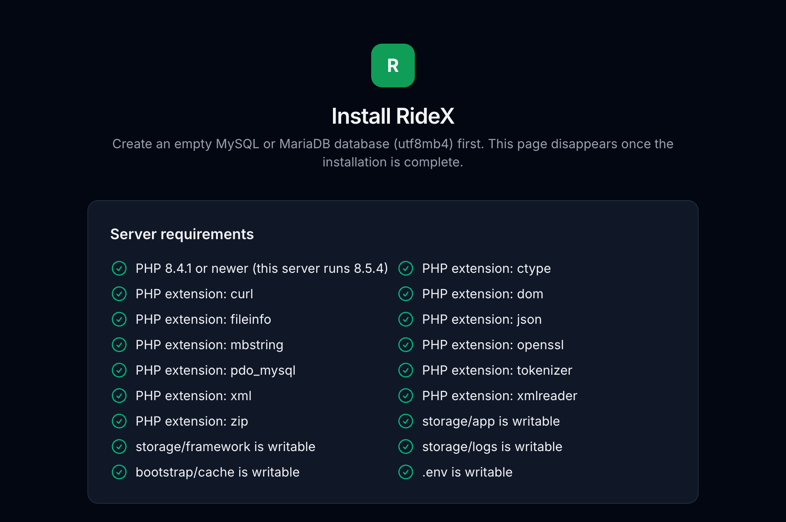
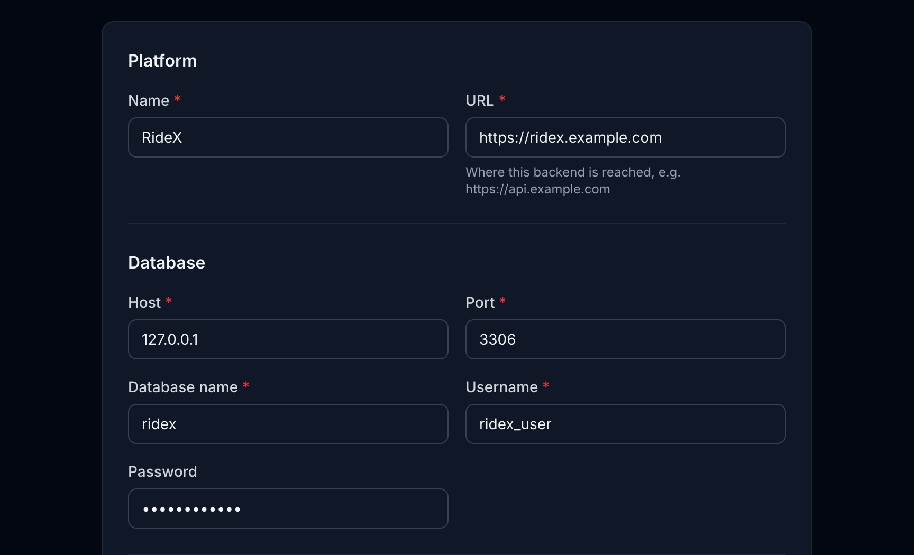
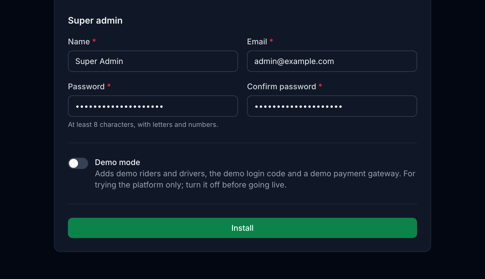
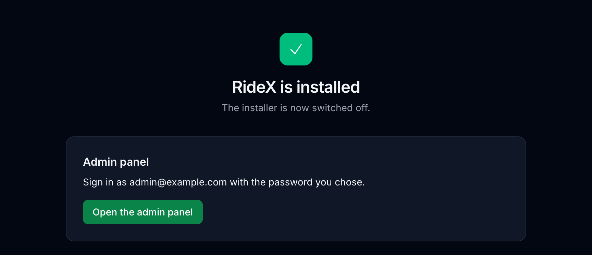
4. Scheduler and queue worker
Scheduler (every server):
* * * * * cd /var/www/ridex_backend && php artisan schedule:run >> /dev/null 2>&1
Queue worker. Dispatch offers, offer timeouts, search retries, push notifications, live ride updates, SMS and card charges all run on the queue. Without a worker, rides never reach drivers, and riders and drivers don't see each other's actions. Keep the queue order dispatch,notifications,default: ride pushes and live ride updates use the notifications queue, so driver locations and push campaigns on default never hold them up.
On a VPS, keep it running with Supervisor (/etc/supervisor/conf.d/ridex-worker.conf):
[program:ridex-worker]
command=php /var/www/ridex_backend/artisan queue:work --queue=dispatch,notifications,default --sleep=1 --max-time=3600
user=www-data
numprocs=1
autostart=true
autorestart=true
stopasgroup=true
killasgroup=true
stopwaitsecs=3600
redirect_stderr=true
stdout_logfile=/var/www/ridex_backend/storage/logs/worker.log
sudo supervisorctl reread && sudo supervisorctl update && sudo supervisorctl start ridex-worker:*
On shared hosting without Supervisor, add a second cron entry that drains the queue every minute:
* * * * * cd /home/USER/ridex_backend && php artisan queue:work --queue=dispatch,notifications,default --stop-when-empty --max-time=50 >> /dev/null 2>&1
This works, but queued work can wait up to a minute: offers expire late and dispatch feels slower. Use a VPS for a busy platform.
After every deployment, run php artisan queue:restart so the worker loads the new code.
5. Third-party services
Google Maps
RideX uses three keys. Create them in Google Cloud Console → APIs & Services → Credentials, and restrict each one.
| Key | Where it goes | Enable these APIs | Restrict it to |
|---|---|---|---|
| Server key | Admin → Maps, SMS & Sign-in, or GOOGLE_MAPS_SERVER_KEY in .env |
Routes API, Places API (New), Geocoding API | Your server's IP address, and those three APIs |
| Android key | android/secrets.properties in each app |
Maps SDK for Android | Android apps: package name + SHA-1 of your upload key and of Play's app signing key (Play Console → App integrity) |
| iOS key | ios/Flutter/Secrets.xcconfig in each app |
Maps SDK for iOS | iOS apps: the bundle IDs |
The app keys can't be set in the admin panel: Google reads them only from the app builds, so they go in secrets.properties and Secrets.xcconfig, and a new key needs new builds.
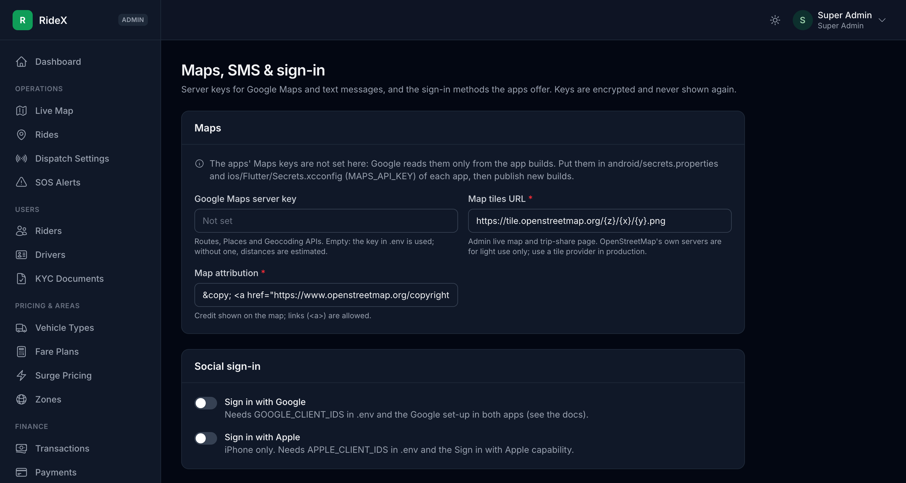
Enable Places API (New), not the one called just "Places API": that is Google's legacy version, which RideX doesn't use and new projects can't enable.
Without a server key, or when a Routes API call fails, routes and fares use the straight-line estimate (MAPS_FALLBACK_*) and place search is empty. Reverse geocoding (the "Current location" address) only needs the Geocoding API.
Map tiles (admin live map and trip-share page)
These pages use Leaflet with OpenStreetMap tiles by default. OpenStreetMap's own tile servers are for light use only, so a live platform should use a tile provider such as MapTiler, Stadia Maps or Thunderforest:
MAPS_TILE_URL=https://…/{z}/{x}/{y}.png?key=YOUR_KEY # the provider's raster XYZ URL
MAPS_TILE_ATTRIBUTION='© Provider © <a href="https://www.openstreetmap.org/copyright">OpenStreetMap</a> contributors'
Keep the attribution your provider requires. Run php artisan optimize after changing .env.
Firebase (push notifications and live tracking)
Firebase is optional: the apps also build and run without it. They then poll for ride updates, and notifications stay in the in-app inbox. Push notifications and instant updates start once each app has its Firebase configuration files (see the Mobile app setup guide) and the server key from step 5 is uploaded.
- Create a project in the Firebase console.
- Add an Android app and an iOS app for each RideX app, using your own package names and bundle IDs. Put the downloaded
google-services.jsoninandroid/app/andGoogleService-Info.plistinios/Runner/of that app. - Build → Realtime Database → Create database. Choose Start in locked mode. Copy its URL to
FIREBASE_DATABASE_URLand the project ID toFIREBASE_PROJECT_ID. - Build → Authentication → Get started. Live tracking signs the apps in with custom tokens from the backend, so it needs no sign-in provider. Phone codes and Google sign-in (below) each need theirs.
- Project settings → Service accounts → Generate new private key. Upload the JSON file in Admin → Firebase Configuration (Super Admin), then press Deploy rules. The rules (
firebase/database.rules.json) let a signed-in rider or driver read only their own rides and ride offers, and let no app write: only the backend writes, with the server key. If Realtime Database → Rules ever shows".read": trueor".write": true, press Deploy rules again, because open rules let anyone read every trip and change the data. - iOS push: Project settings → Cloud Messaging → Apple app configuration, upload an APNs authentication key (needs a paid Apple developer account), then add the Push Notifications capability in Xcode.
- Optional: App Check, so Firebase accepts database and sign-in requests only from your own apps (see Firebase App Check (optional) below).
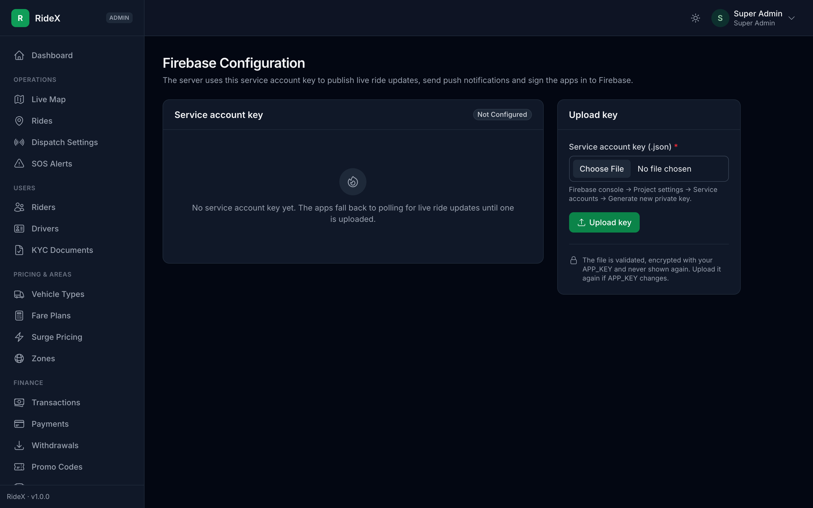
Admin → Firebase Configuration → Connected apps shows how many phones registered for push, which confirms the setup works end to end.
Firebase App Check (optional)
App Check lets Firebase accept Realtime Database and sign-in requests only from your genuine apps. Both apps turn it on at start-up: release builds attest with Play Integrity on Android and App Attest on iOS (DeviceCheck before iOS 14), and debug builds use a debug token. There's nothing to set on the server, and nothing is blocked until you enforce it.
- Android: in the Google Play Console, open each app, go to Release → App integrity → Play Integrity API and click Link Cloud project to link your Firebase project. In Firebase, add the SHA-256 fingerprint of Google Play's app signing key to each Android app (Project settings → Your apps), then register both apps under Security → App Check → Apps with Play Integrity.
- iOS (paid Apple Developer team): in Xcode, add the App Attest capability to each app and set App Attest Environment to
productioninRunner/Runner.entitlements. Create a DeviceCheck key in your Apple Developer account (Certificates, Identifiers & Profiles → Keys → +), enter your Team ID in each iOS app's Firebase settings, then register both iOS apps with App Attest and with DeviceCheck (the.p8key and its Key ID). - Debug builds: add a debug token (for example from
uuidgen) under Security → App Check → Apps → ⋮ → Manage debug tokens, and run the apps with--dart-define=APP_CHECK_DEBUG_TOKEN=YOUR_DEBUG_TOKEN. Never pass it to a release build. - Enforce: under Security → App Check → APIs, enforce Realtime Database and Authentication once the metrics show your store builds' requests as verified. It takes up to 15 minutes. Then book a test ride: the rider's trip screen must still update instantly, and a new offer must reach an online driver at once.
An app that App Check rejects still signs in to the backend and polls for updates. Only Firebase phone sign-in codes (see Sign-in codes with Firebase Phone Auth below) stop working once Authentication is enforced. The Xcode screens and more detail are in section 10.3 of the Mobile app setup guide.
SMS (Twilio)
Login codes (OTP_PROVIDER=twilio), SOS alerts and trip-sharing texts are sent through Twilio.
- In the Twilio Console, copy the Account SID and Auth Token.
- Buy a phone number with SMS capability (or use an approved sender ID) and set it as
TWILIO_FROMin E.164 format, for example+15551234567. - Set
TWILIO_SID,TWILIO_AUTH_TOKENandTWILIO_FROMin.env, then runphp artisan optimize.
Trial accounts only deliver to verified numbers. Some countries require sender registration (for example A2P 10DLC for US numbers) before texts are delivered.
Without Twilio, a live server (APP_ENV=production) sends no SOS or trip-sharing texts: the SOS screen then tells the user only the safety team was alerted, and nothing about the text is written to the log. Outside production, texts are written to storage/logs/laravel.log for testing.
Sign-in codes with Firebase Phone Auth (optional)
Instead of your Twilio account, Firebase can text the sign-in codes. The apps then send the backend a Firebase ID token that proves the number, so both apps need their Firebase files (see Firebase above). Firebase charges per text in most countries, so check its pricing first.
- Firebase console → Authentication → Sign-in method → Phone → Enable.
- Android: add the SHA-1 and SHA-256 fingerprints of your debug key, upload key and Play's app signing key (Play Console → App integrity) to each Android app (Project settings → Your apps), then download
google-services.jsonagain. - iOS: Firebase checks the app with a silent push, which needs the APNs key from the Firebase section. Without it, Firebase shows a reCAPTCHA page that returns to the app through a URL scheme. In
ios/Flutter/Secrets.xcconfigof each app, setFIREBASE_ENCODED_APP_IDto the iOS app's Encoded App ID (Project settings → Your apps). - In Admin → Maps, SMS & Sign-in, set Send sign-in codes with to Firebase Phone Auth, or set
OTP_PROVIDER=firebasebefore installing. - For testing and App Store review, add fictional numbers with fixed codes under Phone numbers for testing on the same Firebase page. The demo accounts need this too.
SOS alerts and trip-sharing texts still go through Twilio.
Sign in with Google and Apple
Both are optional and switched off by default. The apps show a button as soon as it is switched on in Admin → Maps, SMS & Sign-in, so finish the set-up first. After a Google or Apple sign-up, the app asks for a phone number and verifies it with a code.
Google (uses the Firebase project from above):
- Firebase console → Authentication → Sign-in method → Google → Enable. This creates the OAuth clients.
- Android: add the SHA-1 fingerprints of your debug key, upload key and Play's app signing key to each Android app (Project settings → Your apps), then download
google-services.jsonagain. The file must contain a web client ("client_type": 3); the app asks Google for an ID token for it. - iOS: download
GoogleService-Info.plistagain. Inios/Flutter/Secrets.xcconfigof each app, setGOOGLE_IOS_CLIENT_IDto itsCLIENT_IDandGOOGLE_REVERSED_CLIENT_IDto itsREVERSED_CLIENT_ID. - Backend: set
GOOGLE_CLIENT_IDSto the web client ID and each app's iOS client ID, comma-separated (Google Cloud Console → APIs & Services → Credentials). Android sign-ins carry the web client ID, iOS sign-ins the app's own. - Switch on Sign in with Google.
Apple (iPhone only). Apple's App Review guideline 4.8 asks for Sign in with Apple, or a similar privacy-focused option, when an iOS app offers Google sign-in.
- In your Apple developer account (a paid team), enable Sign in with Apple for each app ID. In Xcode, add the Sign in with Apple capability (Runner → Signing & Capabilities).
- Backend: set
APPLE_CLIENT_IDSto the apps' bundle IDs, comma-separated. - Switch on Sign in with Apple.
Run php artisan optimize after changing .env. The backend checks every Google and Apple token's signature, issuer, expiry and audience, so a token issued to another app is refused.
Payment gateways
Enter keys in Admin → Payment Configuration (Super Admin). Values in .env are only the install-time defaults. Every gateway uses a hosted checkout page, and each card on that page shows its webhook URL:
{APP_URL}/api/v1/webhooks/payments/{stripe|razorpay|paypal|flutterwave}
Webhooks are optional, because the app also confirms a payment when the rider returns from the checkout page. They do catch payments whose rider closed the page early. Test with sandbox keys first, and check that the gateway supports your RIDEX_CURRENCY.
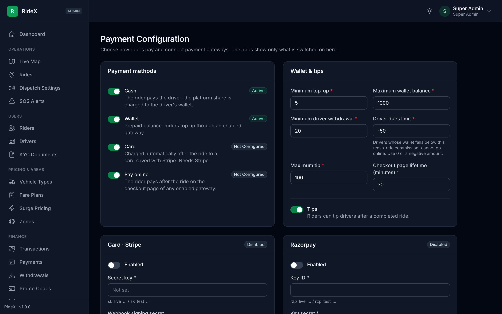
| Gateway | Keys (dashboard location) | Webhook events |
|---|---|---|
| Stripe | Publishable and secret key (Developers → API keys). Needed for card payments and saved cards. | checkout.session.completed, checkout.session.async_payment_succeeded, checkout.session.async_payment_failed, checkout.session.expired. Paste the endpoint's signing secret (whsec_…) as Webhook signing secret. |
| Razorpay | Key ID and key secret (Account & Settings → API Keys). Payments use Payment Links. | payment_link.paid, payment_link.cancelled, payment_link.expired. The secret you type when adding the webhook is the Webhook secret. |
| PayPal | Client ID and secret of a REST app (developer.paypal.com → Apps & Credentials). Sandbox and live apps have different credentials, so set Mode to match. | CHECKOUT.ORDER.APPROVED, PAYMENT.CAPTURE.COMPLETED, PAYMENT.CAPTURE.DENIED. Copy the webhook's Webhook ID; without it PayPal webhooks are ignored. |
| Flutterwave | Public and secret key (Settings → API Keys). | charge.completed (the webhook URL under Settings → Webhooks). The Secret hash you set there goes in Webhook secret hash. |
With RIDEX_DEMO_MODE=true, a Demo payment gateway appears so every flow can be tried without keys. Never leave it on in production.
Riders and drivers who have an email address get short emails for a completed trip (with the fare), payments, withdrawals, account status changes, driver application decisions and support replies. Each user can turn them off with Emails in the app's settings. Emails go out through the queue worker, in the user's language.
Set your SMTP server or mail service in .env, then run php artisan optimize:
MAIL_MAILER=smtp
MAIL_HOST=smtp.yourprovider.com
MAIL_PORT=587
MAIL_USERNAME=your-username
MAIL_PASSWORD=your-password
MAIL_FROM_ADDRESS="no-reply@yourdomain.com"
MAIL_FROM_NAME="Your platform name"
With the default MAIL_MAILER=log, emails are only written to storage/logs/laravel.log. Set up SPF and DKIM for the sending domain (your mail provider explains how), or the emails may land in spam.
Certificate pinning (optional)
The apps always require HTTPS in release builds and trust only the phone's built-in certificate authorities. Pinning adds one more check: the app only talks to a server whose certificate carries one of the public keys you list, so even a wrongly issued certificate can't be used to read the traffic. The check runs before any data, including the sign-in token, is sent.
-
Get the pin of the key your server uses now:
openssl s_client -connect api.yourdomain.com:443 -servername api.yourdomain.com </dev/null 2>/dev/null | openssl x509 -pubkey -noout | openssl pkey -pubin -outform der | openssl dgst -sha256 -binary | openssl enc -base64 -
Create a spare key for emergencies and get its pin too. Keep the key offline; you only need it if the current key is lost or leaked:
openssl ecparam -name prime256v1 -genkey -noout -out backup-key.pem openssl pkey -in backup-key.pem -pubout -outform der | openssl dgst -sha256 -binary | openssl enc -base64 -
Build both apps with the two pins:
--dart-define=API_CERT_PINS=<current pin>,<backup pin>.
Keep the key when certificates renew, or every installed app stops connecting until users update. With Let's Encrypt, renew with certbot renew --reuse-key. To change keys, first publish app versions that include the new pin, wait until most users have updated, and only then switch the server. When the pins don't match, the apps show the "no connection" message. Leave API_CERT_PINS out if you can't commit to this; HTTPS alone still protects the traffic.
Pinning covers the RideX API. Google Maps, Firebase and the payment pages opened in the app use the phone's normal HTTPS checks.
Device security checks (optional)
Both apps can check the phone with freeRASP for root or jailbreak, hooking tools such as Frida, a modified or cloned app, an attached debugger and emulators. The apps never block anyone themselves: they send the findings with each request, and Admin → Settings → Safety & support → Compromised phones decides what happens:
- Ignore – findings are not stored.
- Flag (default) – findings show under Device security on the rider or driver profile, and each new finding is written to the activity log.
- Restrict – also blocks drivers on a rooted, jailbroken, hooked, modified, cloned or emulated phone from going online, accepting rides and requesting payouts. Developer mode, USB debugging, an unlocked bootloader, sideloading and mock-location apps are only flagged, because many honest users with custom ROMs have them.
Without any set-up, release builds run a basic check with flutter_jailbreak_detection: root or jailbreak, plus developer options on Android and the iOS simulator. Its Android check (RootBeer) also counts ROMs signed with test keys as rooted, so some custom ROMs are reported as rooted too, and Restrict mode blocks those drivers. For the full checks and fewer false alarms, build the apps with the freeRASP values; the basic check then stays off:
flutter build appbundle --release --dart-define=API_BASE_URL=https://api.yourdomain.com \
--dart-define=RASP_WATCHER_EMAIL=security@yourdomain.com \
--dart-define=RASP_ANDROID_SIGNING_HASHES=<base64 SHA-256 of your signing certificate>
flutter build ipa --release --dart-define=API_BASE_URL=https://api.yourdomain.com \
--dart-define=RASP_WATCHER_EMAIL=security@yourdomain.com \
--dart-define=RASP_IOS_TEAM_ID=<your Apple Developer team ID>
- Android signing hash: with Play App Signing, use the app signing key certificate's SHA-256 from Play Console → App integrity, not your upload key. freeRASP accepts it in hex (
AB:CD:…) or base64; separate several with commas. - Watcher email: Talsec sends a weekly security report to this address.
- Debug builds skip the debugger, emulator and signature checks, and never run the basic check, so development is unaffected.
freeRASP is free under Talsec's fair-usage policy and sends anonymous check results to Talsec; mention this in your privacy policy. The findings are reported by the app, so a skilled attacker can hide them: treat them as a fraud signal, not proof.
6. Updating
php artisan down
# replace the code, keeping .env and storage/
composer install --no-dev --optimize-autoloader # skip if the package already contains vendor/
php artisan migrate --force
php artisan optimize
php artisan queue:restart
php artisan up
CHANGELOG.md in the backend folder lists what changed in each version.
7. Troubleshooting
Start with storage/logs/laravel.log: it records every error with its cause.
| Symptom | Fix |
|---|---|
| "Composer detected issues in your platform: … PHP version >= 8.4.1" | The web or CLI PHP is older than 8.4.1. Switch both to 8.4+. |
| HTTP 500 right after install, or "…/storage/logs/laravel.log could not be opened … Permission denied" | Run php artisan key:generate, check the DB_* values and make storage/ and bootstrap/cache/ writable. |
| "SQLSTATE[HY000] [2002] Connection refused" or "[1045] Access denied for user" | The DB_* values in .env don't match your database. Check DB_HOST (on shared hosting usually localhost), DB_PORT, DB_DATABASE, DB_USERNAME and DB_PASSWORD, then run php artisan optimize. |
"…/vendor/autoload.php: Failed to open stream" or Class "…" not found |
Some files didn't upload. Upload vendor/ again (the package includes it), or run composer install --no-dev --optimize-autoloader. |
| Admin panel has no styling, or "Vite manifest not found" | The document root isn't public/, or public/build is missing. Point the root at public/, upload the package's public/build folder, or run npm install && npm run build. |
| "419 Page Expired" when you sign in to the admin panel | The browser didn't keep the session cookie. With SESSION_SECURE_COOKIE=true the site must open over https://, and APP_URL and SESSION_DOMAIN (or null) must match the address you open. Run php artisan optimize, then reload the sign-in page. |
| Uploaded photos or documents return 404 | Run php artisan storage:link. |
.env changes have no effect |
Run php artisan optimize (it rebuilds the cached config). |
| Rides stay "Finding your driver" forever | The queue worker isn't running, or no online driver is within the search radius. Check php artisan queue:work, the cron entries and Admin → Live Map. |
| Chat and ride notifications arrive late or never, or one side doesn't see the other's action | The queue worker isn't running, or doesn't work the notifications queue. Run it with --queue=dispatch,notifications,default. |
OTP never arrives / sms_not_configured |
Set TWILIO_* (see SMS above). A Twilio trial only texts verified numbers. |
| "Too many requests" for many users at once (behind Cloudflare or a load balancer) | Set TRUSTED_PROXIES (see Web server), so each visitor is counted by their own IP. |
| A driver can't go online on an emulator | Emulators report mock GPS, which is blocked by default. For testing only, set TRACKING_BLOCK_MOCK_LOCATIONS=false. |
| The rider app's map shows the whole world and Where to? stays grey | The phone has no position yet: location is off, the signal is weak indoors, or a simulator has no location set (iOS Simulator: Features → Location; Android emulator: Extended controls → Location). After 20 seconds the app says the location isn't available; tap that line to try again. |
| A demo account's code doesn't fit the code boxes | The apps show one box per digit of OTP_LENGTH. Give RIDEX_DEMO_OTP that many digits. |
| Apps poll instead of updating live | Deploy the database rules (Admin → Firebase Configuration → Deploy rules) and check FIREBASE_DATABASE_URL. |
| No push notifications on iOS | Upload an APNs key in Firebase and add the Push Notifications capability in Xcode. |
| Live updates stop, or Firebase sign-in codes fail, after you enforce App Check | That build isn't verified. Debug builds need a registered debug token, release builds need Play Integrity or App Attest set up (Firebase App Check above). Security → App Check → APIs shows how many requests were refused. |
| App Check shows your release builds as unverified | Android: link the Play Integrity API, add the SHA-256 of Google Play's app signing key, and test with a build from Google Play (internal testing). iOS: add the App Attest capability with the production environment, and the DeviceCheck key and Team ID in Firebase. Enforce only once they show up as verified. |
| "Google sign-in failed" in the app | Android: the app's SHA-1 is missing in Firebase, or google-services.json has no web client. iOS: GOOGLE_IOS_CLIENT_ID / GOOGLE_REVERSED_CLIENT_ID aren't set. The device log (flutter logs) shows the exact cause after "RideX: social sign-in failed". A token refused with invalid_token_audience means GOOGLE_CLIENT_IDS or APPLE_CLIENT_IDS lacks that app's client ID. |
| Firebase sign-in codes never arrive | Check that the Phone provider is on, the Android SHA-1/SHA-256 fingerprints are added, and on iOS the APNs key or FIREBASE_ENCODED_APP_ID is set. |
| An app says it must be updated | Its version is below the minimum in Admin → Settings → App versions. Lower the minimum or publish the new build. |
| No emails arrive | Set MAIL_* (see Email above) and keep the queue worker running; users also need an email address and Emails on in the app. |
Payment gateways or push stopped working after changing APP_KEY |
Secrets saved in the admin panel are encrypted with APP_KEY. Enter the gateway keys again in Admin → Payment Configuration and upload the Firebase key again. |
| Place search shows no results, or fares look like straight-line estimates | Check GOOGLE_MAPS_SERVER_KEY and that Places API (New) and Routes API are enabled for it. The log names the failing call ("Google Places failed" / "Google Routes failed"). |
Mobile app setup
This guide takes you from a fresh computer to store-ready builds of both RideX apps: RideX Rider (ridex_rider/) and RideX Driver (ridex_driver/). Both apps are set up the same way. Where they differ, the guide says so. Do every step once for each app.
Set up the backend first (Backend & admin panel, Deployment). The apps load their branding, languages and settings from it, so they stop at the splash screen until they can reach it.
1. Introduction
1.1 What you will do
- Install Flutter, Android Studio and, on a Mac, Xcode (sections 2, 3, 5 and 7).
- Open the apps, install their packages and add your configuration files (sections 4, 6 and 8).
- Point the apps at your backend and connect them to Firebase (sections 9 and 10).
- Put your own name, package name, icon and colours on them (section 11).
- Run them on emulators, simulators and phones (section 12).
- Build signed releases for Google Play and the App Store (sections 13 and 14).
- Once the store builds are out, enforce Firebase App Check, set up in section 10.3, so only your genuine apps can use Firebase.
1.2 The two apps
| RideX Rider | RideX Driver | |
|---|---|---|
| Folder | ridex_rider/ |
ridex_driver/ |
| Android package name and iOS bundle ID | com.codercampapp.ridex.rider |
com.codercampapp.ridex.driver |
| Name under the icon | RideX | RideX Driver |
| Icon and splash colour | #0F9D58 (green) |
#111827 (dark grey) |
| Location | While the app is open | Also while the app is in the background, as long as the driver is online |
Each app contains an identical copy of the code they share, in vendor/ridex_core/ (Shared app code).
Choose your own package name and bundle ID before you register the apps in Firebase (11.2). Firebase's configuration files belong to one package name and bundle ID, so changing them later means downloading new files.
1.3 Conventions
- Run commands from the app's folder (
ridex_rider/orridex_driver/) unless a step says otherwise. - Commands are for macOS and Linux. Windows versions follow where they differ. Everything iOS needs a Mac.
- Replace the placeholders, such as
https://your-domain.com,YOUR_ANDROID_MAPS_KEYandcom.yourcompany.taxi, with your own values. - "Tested" means the version this guide was checked with.
- Steps that change a file show it in both apps: the Rider app first, then the Driver app.
2. Requirements
2.1 Software
| Tool | Version | Notes |
|---|---|---|
| Flutter SDK | 3.44 or newer, stable channel (tested: 3.44.4) | The apps need Dart 3.12.2 or newer (sdk: ^3.12.2 in pubspec.yaml), which comes with Flutter 3.44.4. |
| Dart | 3.12.2 or newer | Included with Flutter. |
| Android Studio | Current stable (tested: 2026.1) | With the Flutter and Dart plugins. |
| JDK | 17 or newer (tested: 17.0.18) | The JDK bundled with Android Studio works. The apps compile for Java 17. |
| Android SDK | Android 16 (API 36) platform, Platform-Tools, Command-line Tools, Emulator | The apps compile against and target API 36. Gradle downloads the build tools and NDK 28.2.13676358 by itself once the SDK licences are accepted. |
| Gradle, Android Gradle Plugin, Kotlin | Included (Gradle 9.1.0, AGP 9.0.1, Kotlin 2.3.20) | Nothing to install: the Gradle wrapper downloads them. |
| Xcode (Mac only) | Current release (tested: 27.0) | Apple only accepts App Store uploads built with a recent Xcode. |
| CocoaPods (Mac only) | 1.16 or newer (tested: 1.16.2) | Installs the iOS parts of the Flutter plugins. |
| VS Code (optional) | Any recent version | With the Flutter extension, if you prefer it to Android Studio. |
2.2 Supported phones
| Minimum | Built for | |
|---|---|---|
| Android | Android 7.0 (API 24) | Android 16 (API 36) |
| iOS | iOS 15.0 | iPhone only, portrait |
Once you enforce App Check (10.3), Android phones need Google Play for its Play Integrity check. Phones without it still work, but poll for ride updates and can't use Firebase phone sign-in codes. Every supported iPhone can use App Attest.
2.3 Accounts
| Account | What for |
|---|---|
| Firebase | Push notifications, instant ride updates and offers, Google sign-in and Firebase phone sign-in codes. Optional: without it, the apps still build and run, and ask the backend for updates every few seconds. |
| Google Cloud, with billing | The Maps SDK keys the apps show maps with (and the backend's server key). |
| Apple Developer Program (paid) | Push notifications, Sign in with Apple, App Attest for App Check, and App Store releases. A free Apple ID can run the app on your own iPhone. |
| Google Play Console | Publishing the Android apps, and Play Integrity for App Check. |
2.4 Computer and backend
- A Mac for iOS. Android works on macOS, Windows and Linux.
- 16 GB of RAM is recommended: the Android build may use up to 8 GB (
org.gradle.jvmargs=-Xmx8Ginandroid/gradle.properties). - A RideX backend the phone or emulator can reach (section 9). For testing on your computer, the backend's
php artisan serveon port 8000 is enough.
3. Flutter Installation
3.1 Install the Flutter SDK
-
Open the Flutter install page, https://docs.flutter.dev/install, choose your operating system, and follow its steps to download the SDK from the stable channel.
-
Unpack it to a folder whose path has no spaces and needs no administrator rights, for example
~/development/flutter(macOS, Linux) orC:\src\flutter(Windows). -
Add Flutter's
binfolder to yourPATH:-
macOS (zsh):
echo 'export PATH="$HOME/development/flutter/bin:$PATH"' >> ~/.zshrc source ~/.zshrc -
Linux (bash):
echo 'export PATH="$HOME/development/flutter/bin:$PATH"' >> ~/.bashrc source ~/.bashrc -
Windows: open Start, search for environment variables, choose Edit environment variables for your account, select Path, click Edit → New, enter
C:\src\flutter\binand click OK. Then open a new terminal.
-
-
Check that the terminal finds Flutter:
flutter --versionOn the tested computer this prints:
Flutter 3.44.4 • channel stable • https://github.com/flutter/flutter.git Framework • revision ad70ec4617 (3 months ago) • 2026-06-24 11:07:06 -0700 Engine • hash 700aebeca4c0e610f109a3979ee3e71b69d666bc (revision a10d8ac38d) (3 months ago) • 2026-06-23 23:09:55.000Z Tools • Dart 3.12.2 • DevTools 2.57.0
3.2 Use the tested Flutter version (optional)
A newer stable Flutter usually works, but 3.44.4 is the version the apps were built and tested with. The Flutter SDK is a Git repository, so you can switch to that release:
cd ~/development/flutter
git fetch --tags
git checkout 3.44.4
flutter --version
To go back to the newest stable release later, run git checkout stable and then flutter upgrade.
3.3 Check your setup with flutter doctor
flutter doctor
flutter doctor checks Flutter, the Android tools, Xcode and the connected devices. Real output from a Mac where the Android SDK licences haven't been accepted yet:
Doctor summary (to see all details, run flutter doctor -v):
[✓] Flutter (Channel stable, 3.44.4, on macOS 27.0.1 26A434 darwin-arm64, locale en-US)
[!] Android toolchain - develop for Android devices (Android SDK version 37.0.0)
✗ Android license status unknown.
Run `flutter doctor --android-licenses` to accept the SDK licenses.
See https://flutter.dev/to/macos-android-setup for more details.
[✓] Xcode - develop for iOS and macOS (Xcode 27.0)
[✓] Chrome - develop for the web
[✓] Connected device (7 available)
[✓] Network resources
! Doctor found issues in 1 category.
What each line needs:
| Line | When it's not ✓ |
|---|---|
| Flutter | Fix your PATH (3.1). |
| Android toolchain | Install the SDK packages and accept the licences (5.3). Android license status unknown means the Command-line Tools are missing or the licences haven't been accepted. |
| Xcode (Mac only) | Install Xcode and CocoaPods (7.1, 7.2). |
| Connected device | Start an emulator or simulator, or connect a phone (12.1, 12.2). |
| Chrome, Network resources | Chrome doesn't matter: the apps are for Android and iOS only. Network resources needs internet access. |
Run flutter doctor -v for the details of every line, such as where the Android SDK and the JDK are.
4. Project Setup
4.1 Unpack the package
Unpack the ZIP file you downloaded from CodeCanyon:
RideX/
├── ridex_backend/ REST API, admin panel and web installer (Laravel)
├── ridex_rider/ Rider app (Flutter)
├── ridex_driver/ Driver app (Flutter)
├── Documentation/ This documentation
└── README.txt
Each app folder is a complete Flutter project:
ridex_rider/
├── lib/ The app's own code: main.dart, config/, features/, localization/
├── vendor/ridex_core/ Code shared with the other app (an identical copy in both apps)
├── assets/branding/ App icon and splash screen images
├── android/ Android project (Gradle)
├── ios/ iOS project (Xcode and CocoaPods)
├── test/ Tests
├── pubspec.yaml Packages, version number, icon and splash screen settings
└── pubspec.lock The exact package versions the app was tested with
4.2 Open the project
- Android Studio: File → Open, select the
ridex_riderfolder itself (notRideX/and notandroid/) and click Open. When asked, click Trust Project. Openridex_driverthe same way, in a second window. - VS Code: File → Open Folder and select
ridex_rider.
4.3 Tell the IDE where Flutter is
In Android Studio, open Settings (on macOS: Android Studio → Settings), then Languages & Frameworks → Flutter, and set Flutter SDK path to your Flutter folder, for example ~/development/flutter. The Dart SDK is found from it.
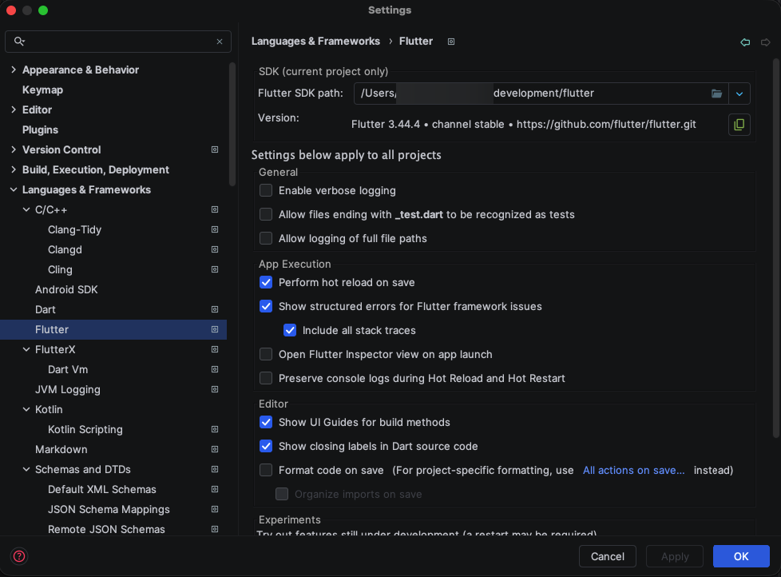
VS Code finds Flutter on your PATH. If it doesn't, open the Command Palette and run Flutter: Change SDK.
4.4 Install the packages
flutter pub get
Real output (shortened):
Resolving dependencies...
Downloading packages...
cli_util 0.4.2 (0.6.0 available)
clock 1.1.2 (1.1.3 available)
…
Got dependencies!
30 packages have newer versions incompatible with dependency constraints.
Try `flutter pub outdated` for more information.
The "newer versions" lines are normal: pubspec.lock keeps the versions the apps were tested with. Don't run flutter pub upgrade --major-versions; it replaces them with untested ones.
flutter pub get also writes two files that belong to your computer and aren't shipped: android/local.properties (where Flutter is) and ios/Flutter/Generated.xcconfig. Android Studio runs it for you when it shows a Pub get banner.
4.5 Add your configuration files
| File | Create it from | What goes in it | Section | Without it |
|---|---|---|---|---|
android/app/google-services.json |
The Firebase console | Android Firebase configuration | 10.1 | No push notifications, and ride updates come every few seconds instead of instantly |
ios/Runner/GoogleService-Info.plist |
The Firebase console | iOS Firebase configuration | 10.2 | No push notifications, and ride updates come every few seconds instead of instantly |
android/secrets.properties |
android/secrets.properties.example |
MAPS_API_KEY for Android |
6.2 | The map shows no streets |
ios/Flutter/Secrets.xcconfig |
ios/Flutter/Secrets.xcconfig.example |
MAPS_API_KEY for iOS, plus optional sign-in values |
8.2 | The map shows no streets |
android/key.properties |
android/key.properties.example |
Your upload keystore | 13.5 | Release builds use the debug key, which Google Play rejects |
Copy the two example files now:
cp android/secrets.properties.example android/secrets.properties
cp ios/Flutter/Secrets.xcconfig.example ios/Flutter/Secrets.xcconfig
Windows (PowerShell):
Copy-Item android\secrets.properties.example android\secrets.properties
Copy-Item ios\Flutter\Secrets.xcconfig.example ios\Flutter\Secrets.xcconfig
These files are listed in .gitignore, so your keys never end up in Git. The backend address isn't kept in a file: you pass it to every run and build (section 9).
The package doesn't include Firebase files, because they belong to your Firebase project. The apps build and run without them, so you can add Firebase later (section 10). Until then, the debug console prints
RideX: Firebase not configured (…); push and live updates are off., and the apps ask the backend for ride updates every few seconds.
4.6 Run the app
Once the backend is running and the Firebase files are in place, go to section 12.
5. Android Studio Setup
5.1 Install Android Studio
- Download Android Studio from https://developer.android.com/studio and install it.
- On the first launch, the setup wizard asks for the install type. Choose Standard, accept the licences and click Finish. The wizard installs the Android SDK, Platform-Tools, the Emulator and a system image.
5.2 Install the Flutter and Dart plugins
- Open Settings → Plugins → Marketplace.
- Search for Flutter and click Install. Android Studio installs the Dart plugin with it.
- Click Restart IDE.
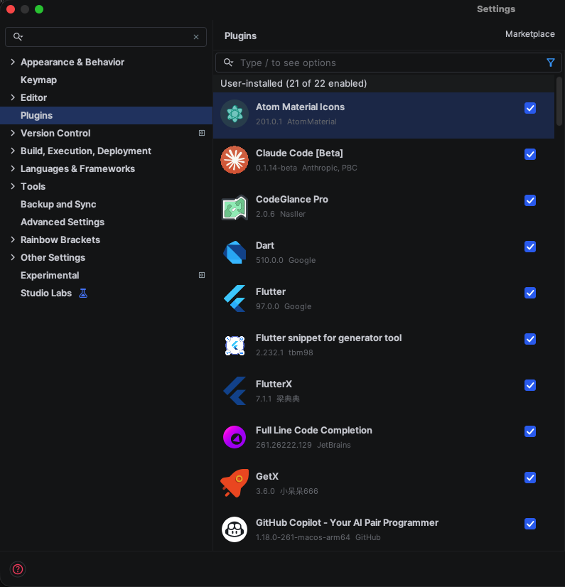
5.3 Install the Android SDK packages
Open Settings → Languages & Frameworks → Android SDK (or Tools → SDK Manager):
-
On the SDK Platforms tab, tick Android 16.0 ("Baklava"), which is API level 36, and click Apply.
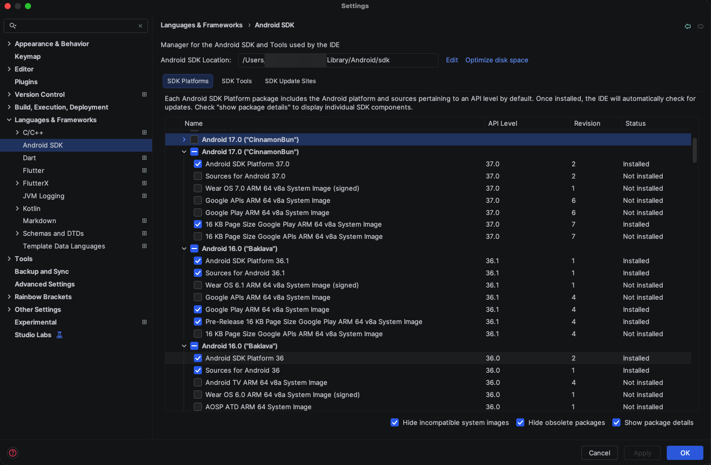
Figure 18: SDK Manager → SDK Platforms: Android 16.0 (API 36) installed -
On the SDK Tools tab, tick these and click Apply:
- Android SDK Build-Tools
- Android SDK Command-line Tools (latest), which
flutter doctor --android-licensesneeds - Android Emulator
- Android SDK Platform-Tools
- Optional: tick Show Package Details and choose NDK (Side by side) → 28.2.13676358. Otherwise Gradle downloads it during the first build.
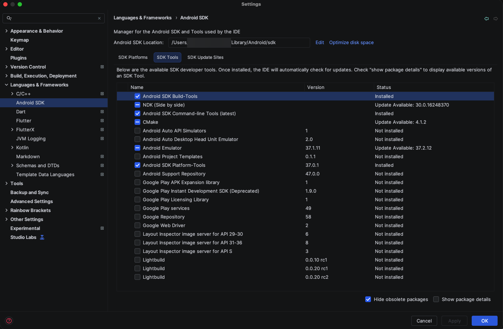
Figure 19: SDK Manager → SDK Tools: Build-Tools, Command-line Tools, Emulator and Platform-Tools -
Accept the SDK licences in a terminal, answering
yto each:flutter doctor --android-licenses
5.4 Check the Android SDK location
The SDK Manager shows the SDK's folder at the top (Android SDK Location). The defaults are ~/Library/Android/sdk on macOS, %LOCALAPPDATA%\Android\Sdk on Windows and ~/Android/Sdk on Linux. Flutter finds the default folder by itself. If yours is elsewhere, tell Flutter:
flutter config --android-sdk /path/to/Android/sdk
flutter doctor -v shows the folder, the JDK and the licence status. Real output (home folder shortened to ~):
[!] Android toolchain - develop for Android devices (Android SDK version 37.0.0)
• Android SDK at ~/Library/Android/sdk
• Emulator version 37.1.11.0 (build_id 15917651) (CL:N/A)
• Platform android-37.0, build-tools 37.0.0
• Java binary at: ~/Library/Java/JavaVirtualMachines/corretto-17.0.18/Contents/Home/bin/java
This JDK is specified in your Flutter configuration.
To change the current JDK, run: `flutter config --jdk-dir="path/to/jdk"`.
• Java version OpenJDK Runtime Environment Corretto-17.0.18.9.1 (build 17.0.18+9-LTS)
✗ Android license status unknown.
Run `flutter doctor --android-licenses` to accept the SDK licenses.
See https://flutter.dev/to/macos-android-setup for more details.
The Platform line names the newest platform installed; the apps need API 36 to be installed too. Flutter uses Android Studio's JDK unless you choose another with flutter config --jdk-dir.
5.5 Open the project
- File → Open, select
ridex_riderand click Open. - Wait until indexing finishes. If a banner asks to run Pub get, click it.
- The main.dart run configuration appears in the toolbar.
Open the app folder, not its android/ folder: Android Studio then treats it as a Flutter project.
5.6 Create an Android emulator
- Open View → Tool Windows → Device Manager and click + → Create Virtual Device.
- Choose a phone, for example Pixel 8 or Medium Phone, and click Next.
- Choose a system image for API 36 that includes Google Play or Google APIs (Google Maps and push notifications need Google Play services). Use
arm64-v8aon an Apple silicon Mac andx86_64on Intel or AMD computers. Download it, then click Next and Finish. - Click ▶ next to the new device to start it.
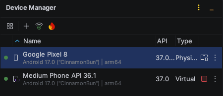
5.7 Connect an Android phone
- On the phone, open Settings → About phone and tap Build number seven times. Developer options appears (under Settings → System on many phones).
- In Developer options, turn on USB debugging.
- Connect the phone by USB, unlock it and accept Allow USB debugging?.
- Check that Flutter sees it:
flutter devices.
A phone can't reach your computer's localhost. Section 9.3 explains how it reaches a backend on your computer.
5.8 Run the app from Android Studio
- Choose the emulator or phone in the device menu of the toolbar.
- Make sure main.dart is the selected run configuration.
- Click Run ▶ (or Debug). The first build takes a few minutes.
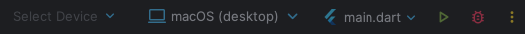
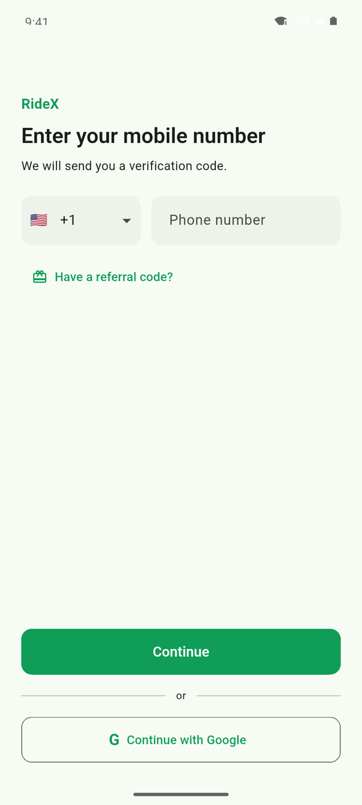
6. Android Configuration
6.1 Where things are
| Setting | File | Default |
|---|---|---|
| Package name | android/app/build.gradle.kts → namespace and applicationId |
com.codercampapp.ridex.rider, com.codercampapp.ridex.driver |
| Minimum, target and compile SDK | android/app/build.gradle.kts → flutter.minSdkVersion, flutter.targetSdkVersion, flutter.compileSdkVersion |
24, 36, 36 (Flutter's defaults) |
| NDK | android/app/build.gradle.kts → flutter.ndkVersion |
28.2.13676358 |
| Java | android/app/build.gradle.kts → JavaVersion.VERSION_17 |
Java 17 |
| Version name and code | pubspec.yaml → version |
1.0.0+1 (version name 1.0.0, version code 1) |
| Name under the icon | android/app/src/main/AndroidManifest.xml → android:label |
RideX, RideX Driver |
| Maps key | android/secrets.properties → MAPS_API_KEY |
Empty |
| Firebase | android/app/google-services.json |
Not included |
| Release signing | android/key.properties |
Not included (section 13) |
| Gradle memory | android/gradle.properties → org.gradle.jvmargs |
-Xmx8G … |
6.2 Google Maps key for Android
-
In the Google Cloud console, open your project (billing must be on), go to APIs & Services → Library, open Maps SDK for Android and click Enable.
-
Go to APIs & Services → Credentials → Create credentials → API key.
-
Restrict the key. Under Application restrictions, choose Android apps and add each app's package name with the SHA-1 fingerprints of your debug key, your upload key and Google Play's app signing key (section 13.8 shows how to get them). Under API restrictions, allow only Maps SDK for Android.
-
Paste the key into
android/secrets.propertiesof each app:MAPS_API_KEY=YOUR_ANDROID_MAPS_KEY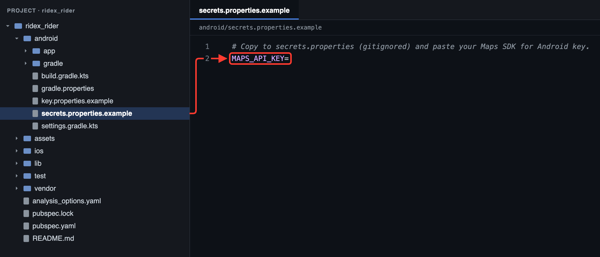
Figure 23: Rider app: your Maps key goes after MAPS_API_KEY= in android/secrets.properties, copied from the .example file in section 4.5 Figure 24: Driver app: your Maps key goes after MAPS_API_KEY= in android/secrets.properties, copied from the .example file in section 4.5
The build copies the key into the app's manifest (com.google.android.geo.API_KEY), so no code changes are needed. Without a key the app still works, but the map has no streets. Place search and routes don't use this key: they go through the backend's server key (Google Maps).
6.3 Permissions
The manifests ask for:
- Both apps:
INTERNET,ACCESS_FINE_LOCATION,ACCESS_COARSE_LOCATION. - Driver app, as well:
FOREGROUND_SERVICE,FOREGROUND_SERVICE_LOCATIONandPOST_NOTIFICATIONS. While a driver is online, a location foreground service keeps sending their position, with a "you are online" notification, so the app doesn't need the background location permission.
Flutter plugins add a few more when the app is built, such as notifications and network state. For the Google Play declaration the driver app needs, see section 13.10.
6.4 HTTP and HTTPS
android/app/src/main/res/xml/network_security_config.xmlapplies to release builds: HTTPS only, trusting the phone's built-in certificate authorities only.android/app/src/debug/res/xml/network_security_config.xmllets debug builds usehttp://, for a backend on your computer.
So http://10.0.2.2:8000 works while you develop, and release builds need https://.
7. Xcode Setup
Everything in this section needs a Mac.
7.1 Install Xcode
-
Install Xcode from the Mac App Store and open it once. Agree to the licence and, when asked, install the iOS platform. You can also add it later in Xcode → Settings → Components.
-
In a terminal, point the command-line tools at it and let it finish its setup:
sudo xcode-select --switch /Applications/Xcode.app/Contents/Developer sudo xcodebuild -runFirstLaunch -
flutter doctorshould now show[✓] Xcode - develop for iOS and macOS (Xcode 27.0)(with your version).
7.2 Install CocoaPods
brew install cocoapods
If you don't use Homebrew, run sudo gem install cocoapods instead. Then check it:
pod --version
The tested computer prints 1.16.2. If CocoaPods warns that your terminal must use UTF-8, add export LANG=en_US.UTF-8 to ~/.zshrc and open a new terminal.
7.3 Prepare the iOS project
flutter run and flutter build install the iOS plugins by themselves. Before you open the project in Xcode for the first time, install them yourself:
flutter pub get
cd ios
pod install
cd ..
Real output (end):
Integrating client project
Pod installation complete! There are 18 dependencies from the Podfile and 45 total pods installed.
pod install also prints two warnings, about the Profile build configuration and about Firebase moving away from CocoaPods. Neither affects building or running the apps (section 15.4).
7.4 Open the workspace
open ios/Runner.xcworkspace
Always open Runner.xcworkspace, not Runner.xcodeproj: only the workspace includes the plugins.
In the project navigator, select Runner (the blue icon), then TARGETS → Runner. The General tab shows the display name, bundle identifier, version and minimum iOS version.
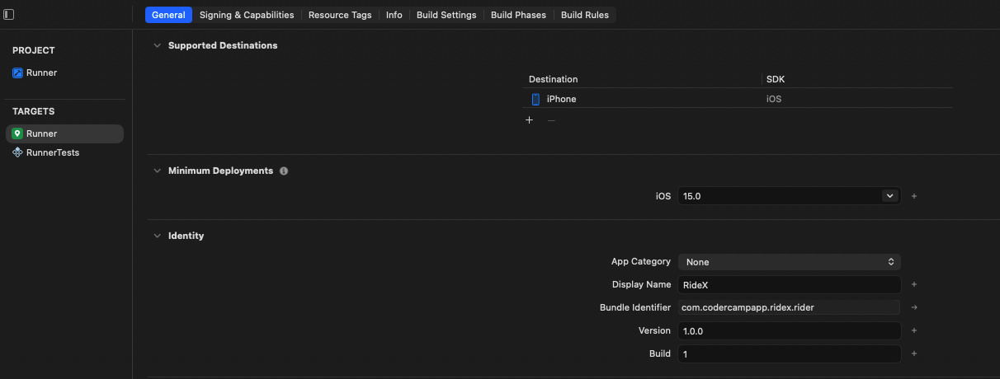
7.5 Add your Apple account
Open Xcode → Settings → Accounts, click + and sign in with your Apple ID. A free account can run the app on your own iPhone. Push notifications, Sign in with Apple and App Store releases need a paid Apple Developer Program membership.
7.6 Set the team and bundle identifier
- Select TARGETS → Runner and open Signing & Capabilities.
- Tick Automatically manage signing.
- Choose your Team. The project comes with its author's team, which your account can't use, so this step is required.
- Set Bundle Identifier to your own ID, for example
com.yourcompany.taxifor the rider app andcom.yourcompany.taxi.driverfor the driver app. - Select TARGETS → RunnerTests and do the same, with your ID followed by
.RunnerTests.
Xcode creates the signing certificate and the provisioning profile for you.
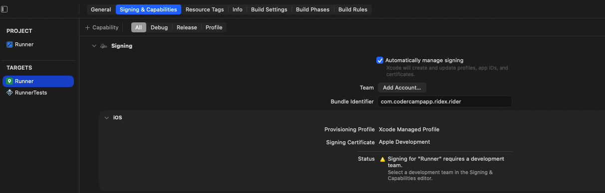
7.7 Add the capabilities
With a paid team, click + Capability on the Signing & Capabilities tab and add:
- Push Notifications, for notifications sent through Firebase. Xcode creates
Runner/Runner.entitlementsfor it. - Sign in with Apple, only if you switch it on in the admin panel (Sign in with Google and Apple).
- App Attest, for App Check (10.3). Then open
Runner/Runner.entitlementsand set App Attest Environment (com.apple.developer.devicecheck.appattest-environment) toproduction, because App Check doesn't accept tokens from Apple's development environment.
The background modes are already set in Info.plist: Remote notifications in both apps, plus Location updates in the driver app.
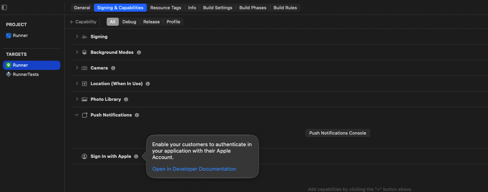
7.8 Deployment target
General → Minimum Deployments is iOS 15.0. The Podfile uses the same version (platform :ios, '15.0') and raises the plugins to it after pod install. Don't lower it.
7.9 Run from Xcode
Choose a simulator in the run destination menu of the toolbar, then click Run (⌘R). Xcode builds with the settings of your last flutter run or flutter build, including the backend address. For everyday work, use flutter run (section 12.2) and keep Xcode for signing and archiving.
8. iOS Configuration
8.1 Where things are
| Setting | Where | Default |
|---|---|---|
| Bundle ID | Xcode → Runner → Signing & Capabilities (and RunnerTests) | com.codercampapp.ridex.rider, com.codercampapp.ridex.driver |
| Team | Same tab | The author's team: replace it |
| Name under the icon | ios/Runner/Info.plist → CFBundleDisplayName and CFBundleName |
RideX, RideX Driver |
| Version and build number | pubspec.yaml → version (Info.plist reads $(FLUTTER_BUILD_NAME) and $(FLUTTER_BUILD_NUMBER)) |
1.0.0 (1) |
| Minimum iOS version | Xcode → General, and ios/Podfile |
15.0 |
| Maps key | ios/Flutter/Secrets.xcconfig → MAPS_API_KEY |
Empty |
| Firebase | ios/Runner/GoogleService-Info.plist |
Not included |
| Google Sign-In, Firebase phone sign-in | ios/Flutter/Secrets.xcconfig |
Placeholders |
| Permission texts | ios/Runner/Info.plist → NS…UsageDescription |
See 8.4 |
| Devices and orientation | Xcode → General | iPhone only, portrait |
8.2 Google Maps key for iOS
-
In the Google Cloud console, enable Maps SDK for iOS (APIs & Services → Library).
-
Create an API key (APIs & Services → Credentials). Under Application restrictions, choose iOS apps and add both bundle IDs. Under API restrictions, allow only Maps SDK for iOS.
-
Paste it into
ios/Flutter/Secrets.xcconfigof each app:MAPS_API_KEY=YOUR_IOS_MAPS_KEY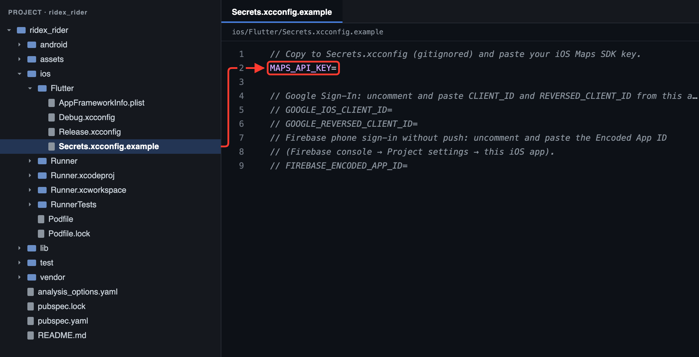
Figure 28: Rider app: your Maps key goes after MAPS_API_KEY= in ios/Flutter/Secrets.xcconfig, copied from the .example file in section 4.5 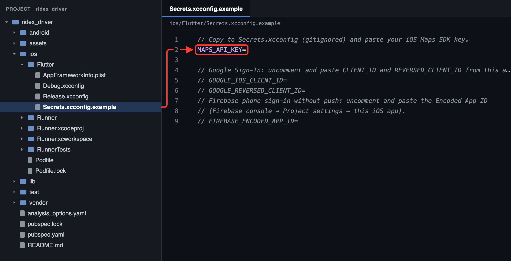
Figure 29: Driver app: your Maps key goes after MAPS_API_KEY= in ios/Flutter/Secrets.xcconfig, copied from the .example file in section 4.5 -
Stop the app and run it again. The key is built into
Info.plist(asGMSApiKey), so a hot reload doesn't pick it up.
Without a key, the map has no streets and Xcode's console shows RideX: MAPS_API_KEY missing - set it in ios/Flutter/Secrets.xcconfig; maps will not load.
8.3 Sign-in values (optional)
Google Sign-In and Firebase phone sign-in need a few values in ios/Flutter/Secrets.xcconfig. Remove the // in front of the lines you use:
GOOGLE_IOS_CLIENT_ID=YOUR_CLIENT_ID
GOOGLE_REVERSED_CLIENT_ID=YOUR_REVERSED_CLIENT_ID
FIREBASE_ENCODED_APP_ID=YOUR_ENCODED_APP_ID
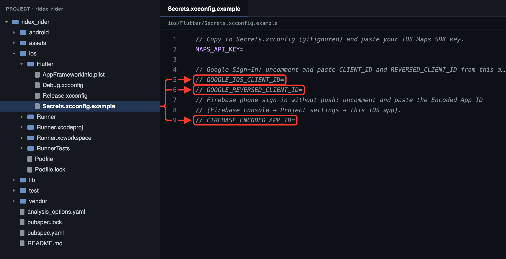
| Value | Where to find it |
|---|---|
GOOGLE_IOS_CLIENT_ID |
CLIENT_ID in this app's GoogleService-Info.plist, after Google sign-in is enabled in Firebase |
GOOGLE_REVERSED_CLIENT_ID |
REVERSED_CLIENT_ID in the same file |
FIREBASE_ENCODED_APP_ID |
Firebase console → Project settings → your iOS app → Encoded App ID. Needed for Firebase phone sign-in without push notifications. |
Info.plist turns these values into URL schemes and GIDClientID by itself. Until you set them, Debug.xcconfig and Release.xcconfig supply harmless placeholders. The backend and Firebase steps for both sign-in methods are in Sign-in codes with Firebase Phone Auth and Sign in with Google and Apple.
8.4 Permissions and background modes
iOS shows these texts when the app asks for a permission. Rewrite them in ios/Runner/Info.plist to fit your service: App Review rejects texts that don't say why the app needs the permission.
| Key | RideX Rider | RideX Driver |
|---|---|---|
NSLocationWhenInUseUsageDescription |
Your location is used to set your pickup point and show nearby drivers. | Your location is shared with riders and dispatch while you are online. |
NSLocationAlwaysAndWhenInUseUsageDescription |
Not used | Keep sharing your location during trips even when the app is in the background. |
NSCameraUsageDescription |
Take a profile photo. | Take your profile photo and photos of your documents and vehicle. |
NSPhotoLibraryUsageDescription |
Choose a profile photo. | Choose your profile photo and photos of your documents and vehicle. |
UIBackgroundModes |
remote-notification |
location, remote-notification |
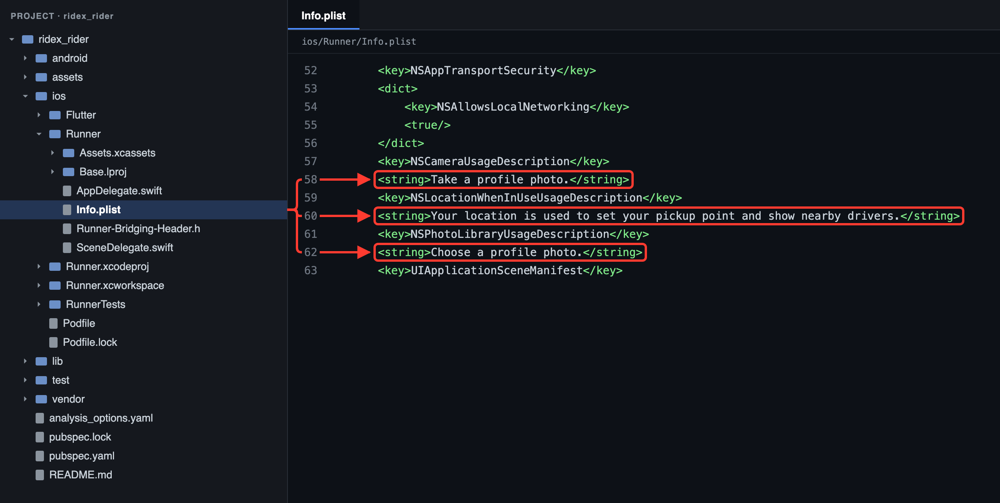
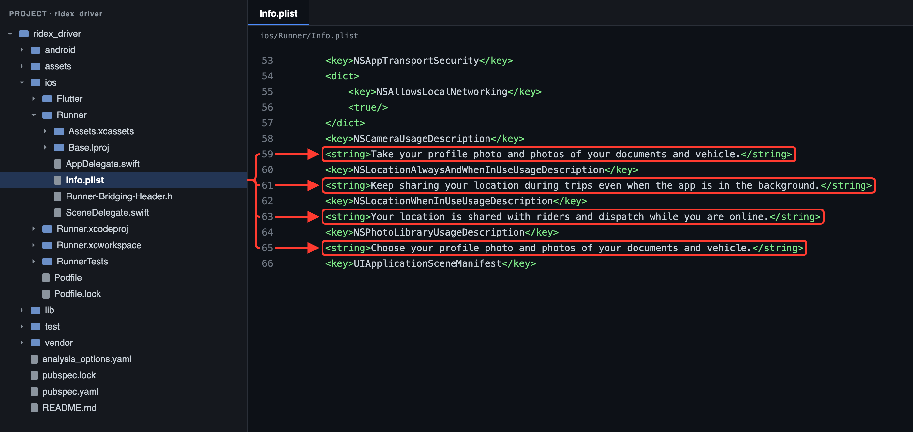
8.5 HTTP and HTTPS
Info.plist sets NSAppTransportSecurity → NSAllowsLocalNetworking to YES, so debug builds on the simulator can reach a backend on your Mac over http://. Release builds only accept an https:// address (section 9.5).
9. API Configuration
9.1 How the apps find the backend
The backend address is a build setting called API_BASE_URL, passed with --dart-define to every flutter run and flutter build. It isn't kept in a file. Both apps read it in vendor/ridex_core/lib/src/config/core_config.dart:
static const String _definedBaseUrl = String.fromEnvironment('API_BASE_URL');
/// Local dev defaults: the iOS simulator shares the host network, the Android emulator reaches it via 10.0.2.2.
static String get apiBaseUrl {
if (kReleaseMode && !Uri.parse(_definedBaseUrl).isScheme('https')) {
throw StateError('API_BASE_URL must be an https:// address in release builds, e.g. --dart-define=API_BASE_URL=https://your-domain.com');
}
if (_definedBaseUrl.isNotEmpty) return _definedBaseUrl;
return Platform.isAndroid ? 'http://10.0.2.2:8000' : 'http://127.0.0.1:8000';
}
Use your backend's address without /api at the end: the apps add /api/v1 themselves.
flutter run --dart-define=API_BASE_URL=https://your-domain.com
9.2 Development defaults
When you don't pass API_BASE_URL, debug builds use a backend on the same computer:
| Where the app runs | Address used | The backend must run as |
|---|---|---|
| iOS simulator | http://127.0.0.1:8000 |
php artisan serve --host=127.0.0.1 --port=8000 |
| Android emulator | http://10.0.2.2:8000 (the emulator's name for your computer) |
The same |
9.3 Phones
-
Android phone over USB: forward the phone's port 8000 to your computer, then run with the address set to the phone's own
localhost. Repeatadb reverseevery time you reconnect the phone:adb reverse tcp:8000 tcp:8000 flutter run --dart-define=API_BASE_URL=http://127.0.0.1:8000 -
iPhone: point the app at a backend it can reach over the internet, such as your staging or production server:
--dart-define=API_BASE_URL=https://your-domain.com.
9.4 Add the address to your IDE
-
Android Studio: Run → Edit Configurations…, select main.dart, and enter
--dart-define=API_BASE_URL=https://your-domain.comin Additional run args.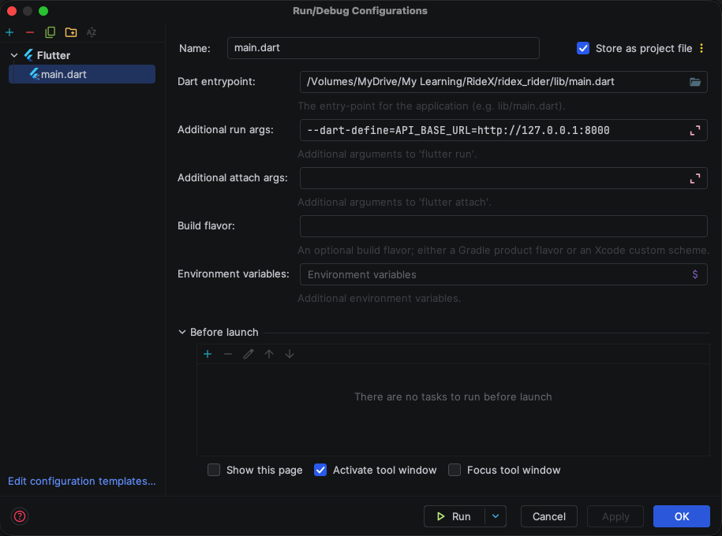
Figure 34: Android Studio → Run → Edit Configurations → main.dart: the backend address in Additional run args (here the local address a phone on USB uses, 9.3) -
VS Code: add the argument to
.vscode/launch.json:{ "version": "0.2.0", "configurations": [ { "name": "ridex_rider", "request": "launch", "type": "dart", "args": ["--dart-define=API_BASE_URL=https://your-domain.com"] } ] }
9.5 Release builds
Release builds must get an https:// address. Without one, the app stops at launch with:
API_BASE_URL must be an https:// address in release builds, e.g. --dart-define=API_BASE_URL=https://your-domain.com
Sections 13 and 14 include the address in every build command.
9.6 Check that the backend answers
Open https://your-domain.com/api/v1/config in a browser, on your computer or on the phone. The apps load this page on every launch. A working backend answers with JSON that starts like this (shortened):
{
"success": true,
"data": {
"branding": {
"app_name": "RideX",
"primary_color": "#0F9D58",
"rider_app_name": "RideX",
"driver_app_name": "RideX Driver"
},
"currency": { "code": "USD", "symbol": "$", "position": "left", "decimals": 2 },
"localization": { … },
"vehicle_types": [ … ],
"settings": { … }
}
}
When the app gets past the splash screen and shows the sign-in screen, like the Android screenshot in 5.8, it is talking to the backend.
9.7 Keys and sign-in
- No API keys in the app besides the Maps SDK keys (sections 6.2 and 8.2). Place search, routes, payments and texts go through the backend, which keeps its keys on the server.
- Sign-in: users sign in with their phone number and a code (or Google and Apple, if you switch them on). The backend then gives the app a token, so there's nothing to configure in the app.
- For local testing, switch on the backend's demo mode (Local testing and demo mode) and use the demo accounts: rider
+1 5550000001and driver+1 5550000002, both with code123456. - Optional build settings:
API_CERT_PINS(Certificate pinning),APP_CHECK_DEBUG_TOKENfor debug runs (10.3 App Check) andRASP_WATCHER_EMAIL,RASP_ANDROID_SIGNING_HASHES,RASP_IOS_TEAM_ID(Device security checks) are passed with--dart-definetoo.
10. Firebase Configuration
The apps use these Firebase services:
| Service | What for |
|---|---|
| Cloud Messaging (FCM) | Push notifications |
| Realtime Database | Live ride updates, driver positions and instant ride offers. Without it, the apps ask the backend for updates every few seconds instead. |
| Authentication | Signs the apps in to the Realtime Database with tokens from the backend. Optionally sends sign-in codes (Firebase Phone Auth) and runs Google sign-in. |
| App Check (optional) | Lets the Realtime Database and Authentication accept requests only from your genuine apps, once you enforce it (10.3). |
One Firebase project serves everything: four app registrations (Rider and Driver, each on Android and iOS) and the backend.
Firebase is optional. Without its files, the apps still build and run: they ask the backend for ride updates every few seconds, notifications appear only in the in-app inbox, and Google sign-in and Firebase phone sign-in codes are unavailable. Adding the files later needs no code changes.
Create the Firebase project
-
Open the Firebase console, click Create a project and give it a name. Google Analytics isn't used by RideX, so you can leave it off.
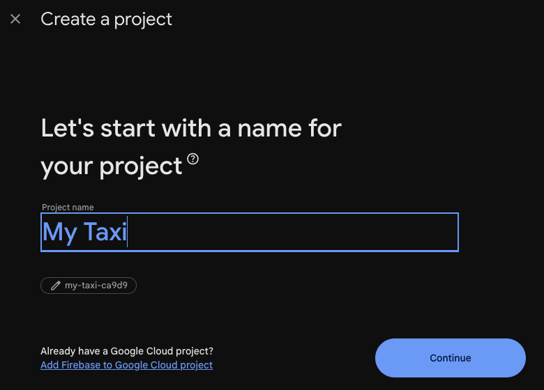
Figure 35: Firebase console: creating the project -
Set up the parts the backend needs: the Realtime Database, Authentication, and the service account key you upload in the admin panel, after which you press Deploy rules. Follow Firebase (push notifications and live tracking) in the deployment guide.
10.1 Android Firebase Setup
Do this once for the Rider app and once for the Driver app.
-
In the project overview, click Add app and choose Android.
-
Enter the Android package name exactly as
applicationIdinandroid/app/build.gradle.kts:com.codercampapp.ridex.rider,com.codercampapp.ridex.driver, or your own (section 11.2). -
Enter an App nickname, such as Rider Android. The Debug signing certificate SHA-1 is only needed for Google sign-in and Firebase phone sign-in, and you can add it later (section 13.8).
-
Click Register app.
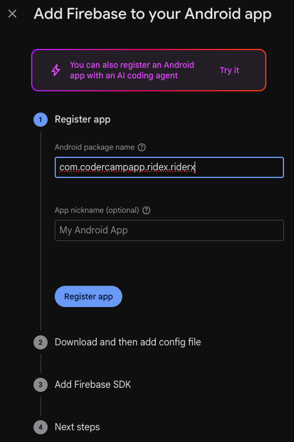
Figure 36: Firebase console → Add app → Android: type your package name exactly as applicationId; the one in this picture is only an example -
Click Download google-services.json.
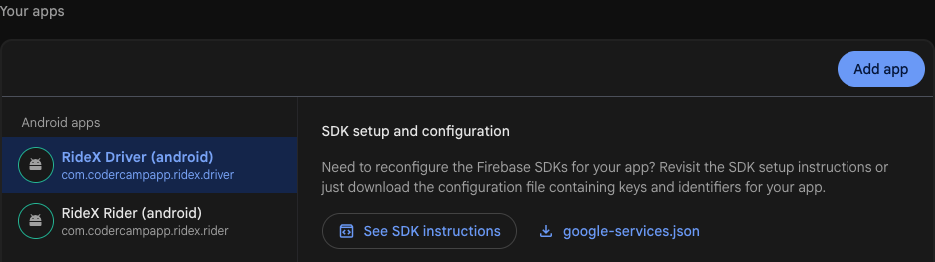
Figure 37: Firebase console → Project settings → Your apps: google-services.json, which you can download here again at any time -
Put the file in the app's
android/app/folder:ridex_rider/android/app/google-services.jsonfor the rider app, and the driver's file inridex_driver/android/app/.Figure 38: Rider app: google-services.json goes in android/app/ 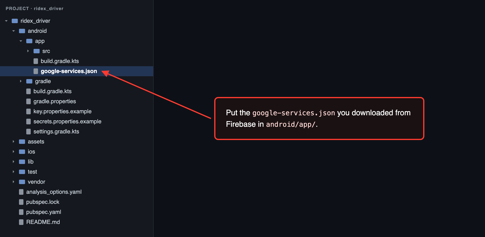
Figure 39: Driver app: google-services.json goes in android/app/ -
Skip the console's remaining steps, which add the Firebase SDK and plugin: the project already has them.
android/settings.gradle.ktsdeclares the Google services plugin (com.google.gms.google-services4.4.4) andandroid/app/build.gradle.ktsapplies it. ThegoogleServicesblock at the end of that file turns a missing file into a warning, which is how the app builds without Firebase. -
Build and run the app (section 12.1). If the package name in the file doesn't match, the build stops with:
No matching client found for package name 'com.codercampapp.ridex.rider' in …/android/app/google-services.json
10.2 iOS Firebase Setup
Do this once for the Rider app and once for the Driver app.
-
In the project overview, click Add app and choose iOS+ (Apple).
-
Enter the Apple bundle ID exactly as in Xcode:
com.codercampapp.ridex.rider,com.codercampapp.ridex.driver, or your own. The App nickname and App Store ID are optional. -
Click Register app, then Download GoogleService-Info.plist.
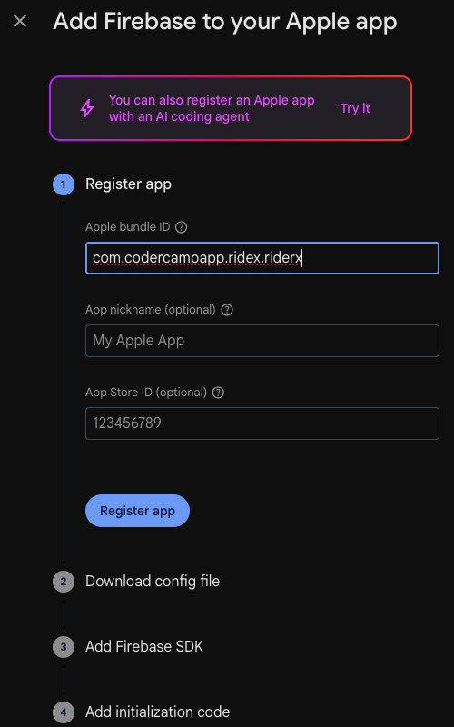
Figure 40: Firebase console → Add app → Apple: type your bundle ID exactly as in Xcode; the one in this picture is only an example -
Copy the file to
ios/Runner/GoogleService-Info.plistof the app, in Finder or withcp. You don't add it in Xcode: the Copy Firebase Config build phase (Runner target → Build Phases) copies it into the app when it's there, and the app builds without Firebase when it isn't.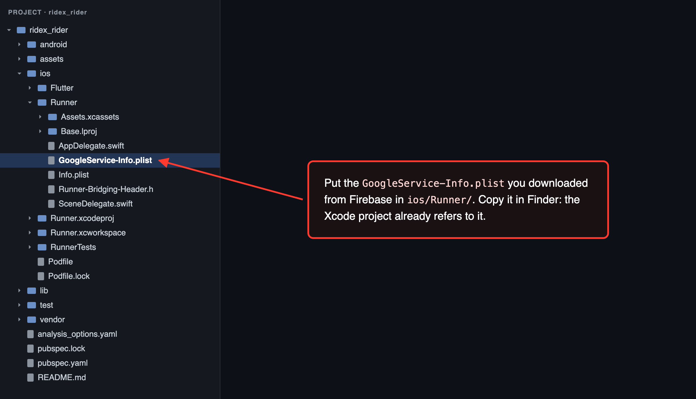
Figure 41: Rider app: GoogleService-Info.plist goes in ios/Runner/ Figure 42: Driver app: GoogleService-Info.plist goes in ios/Runner/ -
Skip the console's remaining steps, which add the SDK and initialization code: the project already has them. CocoaPods installs the Firebase SDK, and the app starts Firebase itself.
-
For push notifications (a paid Apple team):
- In your Apple Developer account, open Certificates, Identifiers & Profiles → Keys, click +, tick Apple Push Notifications service (APNs), then Continue and Register. Download the
.p8file (Apple lets you download it only once) and note the Key ID. - In the Firebase console, open Project settings → Cloud Messaging → Apple app configuration, and under APNs Authentication Key click Upload. Choose the
.p8file and enter the Key ID and your Team ID. One key covers both apps. - In Xcode, add the Push Notifications capability (section 7.7).
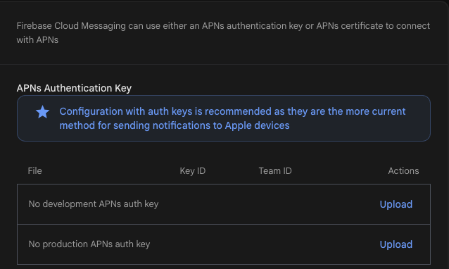
Figure 43: Firebase console → Project settings → Cloud Messaging: the APNs authentication key - In your Apple Developer account, open Certificates, Identifiers & Profiles → Keys, click +, tick Apple Push Notifications service (APNs), then Continue and Register. Download the
-
Build and run the app (section 12.2).
10.3 App Check
App Check lets Firebase accept requests only from your own apps, so the database address in the app files is no use to anyone else. Both apps turn it on at start-up:
| Build | Android | iOS |
|---|---|---|
| Release | Play Integrity | App Attest (DeviceCheck before iOS 14) |
| Debug and profile | A debug token | A debug token |
Until you enforce it, App Check only counts requests and blocks nothing. Set it up before your release, and enforce it once your store builds show up as verified.
-
Android: in the Google Play Console, open your app, go to Release → App integrity → Play Integrity API, click Link Cloud project and choose your Firebase project (you must be an Owner of it). In the Firebase console, add the SHA-256 fingerprint of Google Play's app signing key to each Android app (Project settings → Your apps; section 13.8 shows where to find it). Then open Security → App Check → Apps and register each Android app with Play Integrity.
-
iOS: add the App Attest capability in Xcode (7.7). In your Apple Developer account, open Certificates, Identifiers & Profiles → Keys, click +, tick DeviceCheck and download the
.p8file. In the Firebase console, enter your Team ID in each iOS app's settings (Project settings → Your apps), then register each iOS app under Security → App Check → Apps with App Attest and with DeviceCheck, using the.p8key and its Key ID. -
Debug builds prove themselves with a debug token. Make one with
uuidgen(macOS and Linux) or[guid]::NewGuid()(PowerShell). Add it to each app under Security → App Check → Apps → ⋮ → Manage debug tokens, then pass it to your debug runs, next to the backend address (9.4):flutter run --dart-define=API_BASE_URL=http://10.0.2.2:8000 --dart-define=APP_CHECK_DEBUG_TOKEN=YOUR_DEBUG_TOKENWithout it, the Firebase SDK makes a token for each device and prints it: Android in Logcat as
Firebase App Check debug token: …, iOS in Xcode's console when the scheme passes the-FIRDebugEnabledlaunch argument. You can also register a token with the Firebase CLI:firebase appcheck:debugtokens:create YOUR_DEBUG_TOKEN --project YOUR_PROJECT_ID --app YOUR_APP_ID. Keep debug tokens private, delete the ones you no longer use, and never passAPP_CHECK_DEBUG_TOKENto a release build. -
Enforce: open Security → App Check → APIs. When the metrics for Realtime Database and Authentication show your release builds' requests as verified, click Enforce for each. It takes up to 15 minutes to apply. Then book a test ride and check that the trip screen still updates instantly. Enforcing Authentication also covers Firebase phone sign-in codes, so if you use them, sign in on a phone as well.
An app that App Check doesn't verify still signs in to your backend and polls for ride updates instead of streaming them. Only Firebase phone sign-in codes need App Check once Authentication is enforced.
Check that Firebase works
- Debug console: if a Firebase file is missing or wrong at run time, the app prints
RideX: Firebase not configured (…); push and live updates are off. - Admin → Firebase Configuration → Connected apps counts the phones that registered for push notifications. Sign in on a real phone and check that the number goes up.
- Admin → Push Notifications: send a test notification to yourself. Tapping it opens the screen it is about.
11. App Configuration
Everything you may want to change, in one table:
| Setting | File or place | What to change | Example |
|---|---|---|---|
| App name, Android | android/app/src/main/AndroidManifest.xml |
android:label |
android:label="MyTaxi" |
| App name, iOS | ios/Runner/Info.plist |
CFBundleDisplayName and CFBundleName |
MyTaxi |
| Names inside the app | Admin → Settings → General | Platform and app names | Shown after the next app launch, no new build |
| Package name, Android | android/app/build.gradle.kts, MainActivity.kt |
namespace, applicationId, and the Kotlin package (11.2) |
com.yourcompany.taxi |
| Bundle ID, iOS | Xcode → Runner and RunnerTests → Signing & Capabilities | Bundle Identifier | com.yourcompany.taxi |
| Version | pubspec.yaml |
version: <name>+<build number> |
version: 1.2.0+5 |
| Backend address | Every run and build command | --dart-define=API_BASE_URL=… |
https://your-domain.com |
| Maps keys | android/secrets.properties, ios/Flutter/Secrets.xcconfig |
MAPS_API_KEY |
MAPS_API_KEY=YOUR_ANDROID_MAPS_KEY |
| Firebase | android/app/google-services.json, ios/Runner/GoogleService-Info.plist |
Add your project's files (optional) | Section 10 |
| Google Sign-In, Firebase phone sign-in (iOS) | ios/Flutter/Secrets.xcconfig |
GOOGLE_IOS_CLIENT_ID, GOOGLE_REVERSED_CLIENT_ID, FIREBASE_ENCODED_APP_ID |
Section 8.3 |
| App icon | assets/branding/icon.png, icon_foreground.png; pubspec.yaml → flutter_launcher_icons |
The images and adaptive_icon_background |
adaptive_icon_background: "#1E40AF" |
| Splash screen | assets/branding/splash.png; pubspec.yaml → flutter_native_splash |
The image and color |
color: "#1E40AF" |
| Brand colours and logo inside the app | Admin → Settings → General | Primary and secondary colour, logo | No new build |
| Notifications | Firebase (section 10) and the Push Notifications capability (iOS) | Your Firebase project, your APNs key | Section 10 |
| Languages | Admin → Languages; the apps' strings in lib/localization/ and vendor/ridex_core/lib/src/localization/ |
Default language, enabled languages, texts | Adding a language |
| Permission texts (iOS) | ios/Runner/Info.plist |
NS…UsageDescription |
Section 8.4 |
| Release signing (Android) | android/key.properties |
Your upload keystore | Section 13.5 |
| Certificate pinning, device checks | Build command | --dart-define=API_CERT_PINS=…, RASP_… |
Section 9.7 |
11.1 App name
Android: change android:label in android/app/src/main/AndroidManifest.xml.
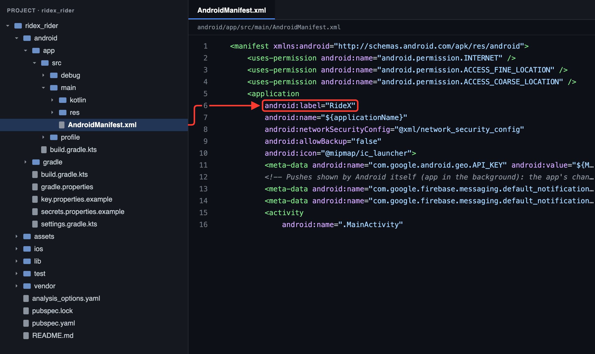
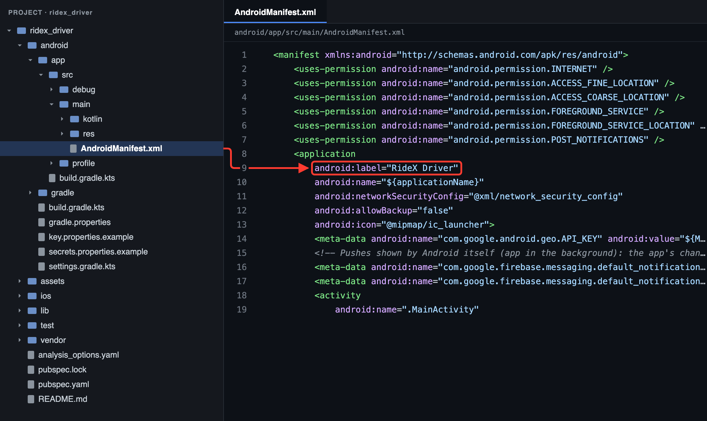
iOS: change CFBundleDisplayName (the name under the icon) and CFBundleName in ios/Runner/Info.plist.
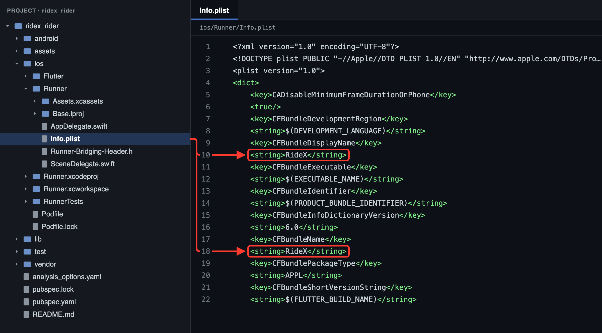
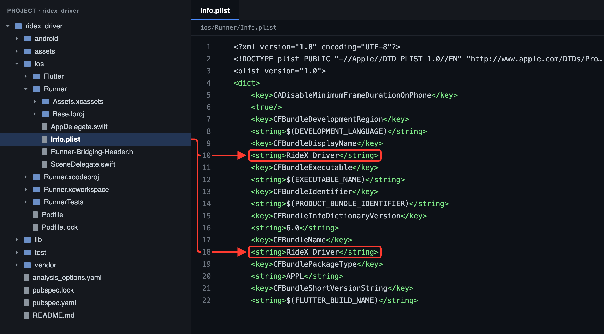
The names shown inside the app, its colours and its logo come from the backend (Admin → Settings → General), so they change without a new build.
11.2 Package name and bundle ID
Every store app needs its own ID, and Google Play and the App Store don't let you change it after the first release. Use a reverse domain you own, such as com.yourcompany.taxi for the rider app and com.yourcompany.taxi.driver for the driver app.
Android (rider app shown; for the driver, replace rider with driver):
-
In
android/app/build.gradle.kts, change bothnamespaceandapplicationId:namespace = "com.yourcompany.taxi" // … applicationId = "com.yourcompany.taxi"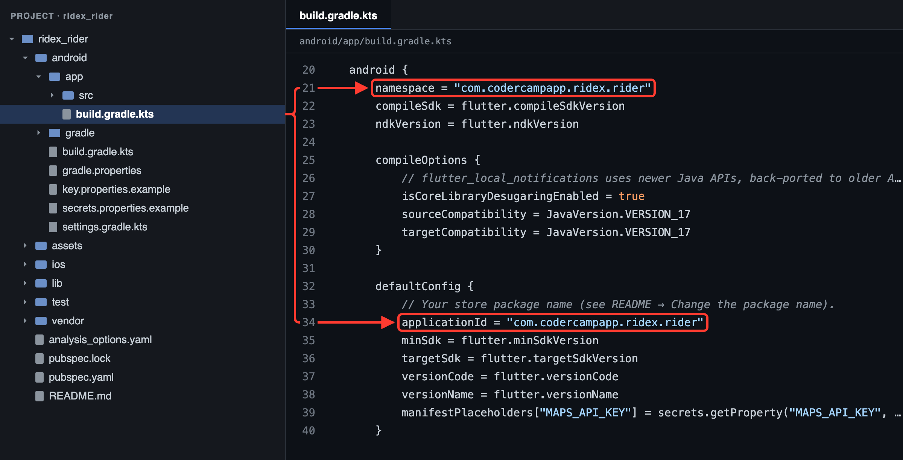
Figure 48: Rider app: the package name is namespace and applicationId in android/app/build.gradle.kts Figure 49: Driver app: the package name is namespace and applicationId in android/app/build.gradle.kts -
Move
android/app/src/main/kotlin/com/codercampapp/ridex/rider/MainActivity.ktto a folder that matches the new name, for exampleandroid/app/src/main/kotlin/com/yourcompany/taxi/MainActivity.kt, and delete the old empty folders. -
Change the first line of
MainActivity.ktto the new package:package com.yourcompany.taxiFigure 50: Rider app: the folders of MainActivity.kt and its first line follow the package name 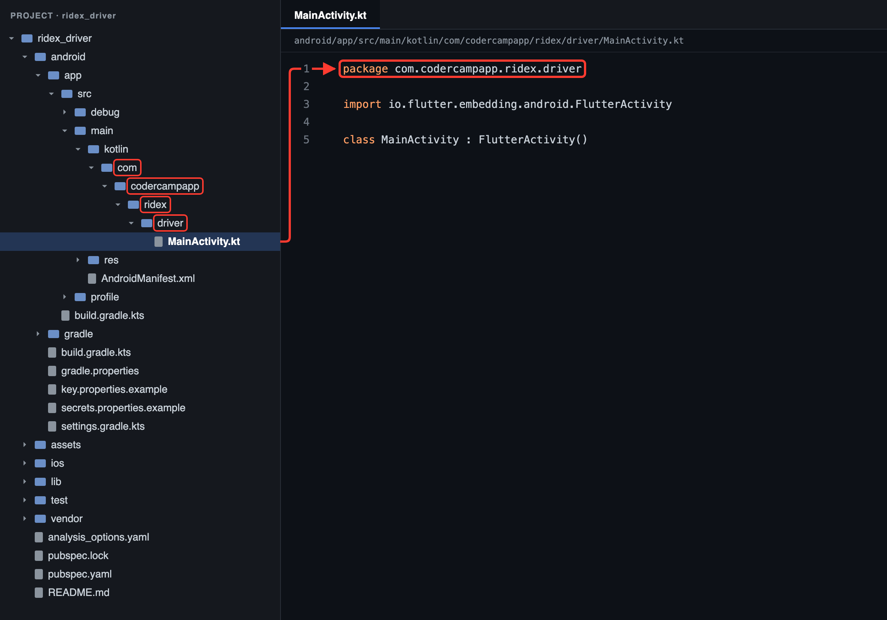
Figure 51: Driver app: the folders of MainActivity.kt and its first line follow the package name
iOS: in Xcode, set the Bundle Identifier of Runner and RunnerTests (section 7.6).
After renaming:
-
Register the new IDs in Firebase and replace both Firebase files (section 10).
-
Update the restrictions of your Maps keys: package names and SHA-1 fingerprints on Android, bundle IDs on iOS (sections 6.2 and 8.2).
-
If Google or Apple sign-in is on, add the new IDs to
GOOGLE_CLIENT_IDSandAPPLE_CLIENT_IDSin the backend's.env(Sign in with Google and Apple). -
Rebuild from scratch:
flutter clean flutter pub get flutter run
11.3 Version
version: 1.0.0+1 in pubspec.yaml sets both platforms: 1.0.0 is the version users see (Android versionName, iOS CFBundleShortVersionString), and 1 is the build number (Android versionCode, iOS CFBundleVersion). Raise the build number for every upload to the stores. You can also set them per build with --build-name=1.2.0 --build-number=5.
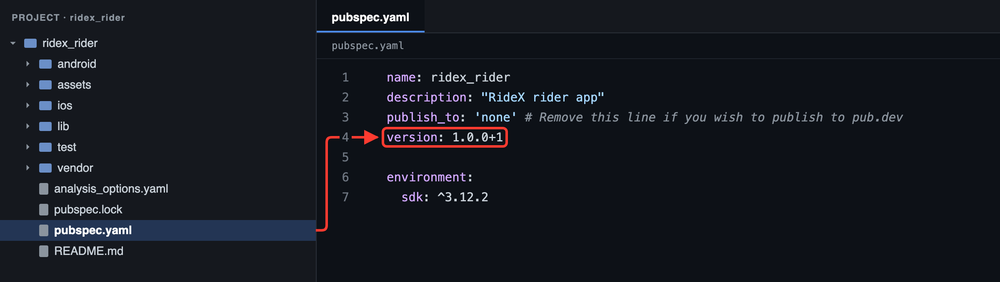
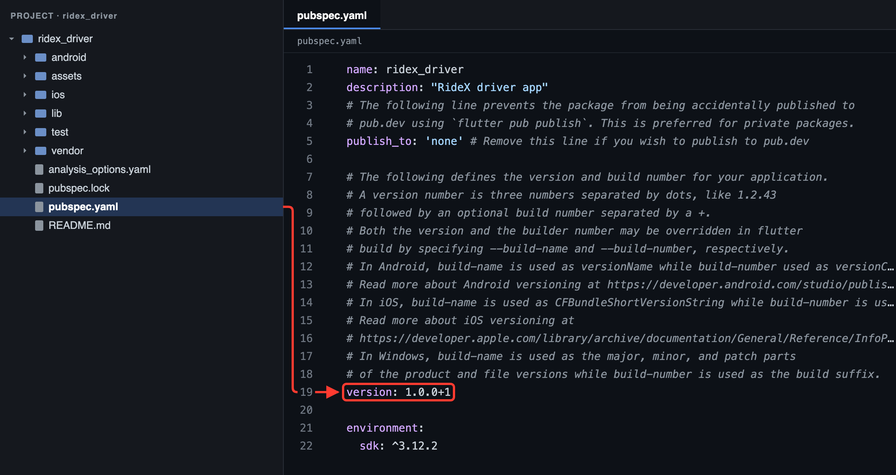
11.4 App icon and splash screen
Replace the images in assets/branding/ and keep their sizes:
| File | Size | Used for |
|---|---|---|
icon.png |
1024 × 1024, no transparency | The iOS icon and the older Android icon |
icon_foreground.png |
1024 × 1024, transparent, artwork in the middle two-thirds | The Android adaptive and themed icon |
splash.png |
1152 × 1152, transparent, artwork inside the central 768 px circle | The logo on the launch screen |
The .svg files next to them are the editable originals. Set the background colours in pubspec.yaml: adaptive_icon_background under flutter_launcher_icons, and color (twice, including under android_12) under flutter_native_splash.
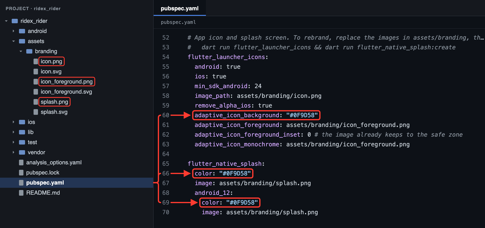
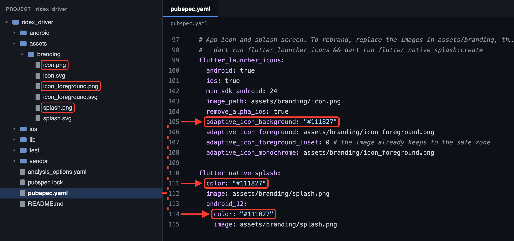
Then generate every Android and iOS size:
dart run flutter_launcher_icons
dart run flutter_native_splash:create
The tools end with ✓ Successfully generated launcher icons and ✅ Native splash complete. Stop the app and run it again to see the new icon.
11.5 Theme and branding
The brand colours, logo, app names, currency and languages inside the apps come from Admin → Settings and are cached on the phone, so they change without a new app release (White-labeling). Only what the phone shows before the app starts is built in: the app name under the icon, the icon and the splash screen.
12. Running the Application
Before the first run, check that:
- the backend is running and reachable (section 9.6);
google-services.jsonandGoogleService-Info.plistare in place, if you use Firebase (section 10);- the Maps keys are set (sections 6.2 and 8.2).
For local testing, turn on the backend's demo mode and sign in with a demo account. The demo driver is online in Manhattan, so give the emulator or simulator a location there (for example 40.7590, -73.9845). Simulators report their location as mocked, which the backend refuses unless you set TRACKING_BLOCK_MOCK_LOCATIONS=false in its .env (on your test server only).
12.1 Android
-
Start an emulator (5.6) or connect a phone (5.7).
-
List the devices Flutter can use:
flutter devicesReal output (shortened):
Found 6 connected devices: sdk gphone64 arm64 (mobile) • emulator-5560 • android-arm64 • Android 16 (API 36) (emulator) iPhone 17 Pro (mobile) • A384609F-FF3E-4390-85E5-2AD38A563691 • ios • com.apple.CoreSimulator.SimRuntime.iOS-26-5 (simulator) … -
Install the packages and run the app on the device:
flutter pub get flutter run -d emulator-5560Use your own device ID from
flutter devices. With a single device connected,flutter runis enough. On a phone over USB, add the backend address as described in 9.3. -
Give the emulator a location: click ⋯ (Extended controls) on the emulator's side bar, open Location, pick a point and click Set location. Without a location, the home map shows the whole world, and after 20 seconds the pickup line says the location isn't available.
While flutter run is running, press r to hot reload, R to hot restart and q to quit. In Android Studio, choose the device in the toolbar and click Run (5.8).
12.2 iOS
-
Open the simulator and choose an iPhone model (File → Open Simulator):
open -a Simulator -
Run the app on it.
flutter runinstalls the iOS plugins by itself, so you don't needpod installhere:flutter pub get flutter run -d "iPhone 17 Pro" -
Give the simulator a location: Features → Location → Custom Location…, enter a latitude and longitude, and click OK.
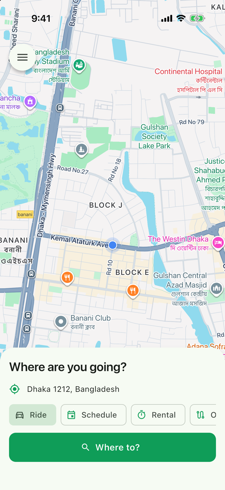
On an iPhone:
- Connect it with a cable, unlock it and tap Trust on the phone.
- On iOS 16 and newer, turn on Settings → Privacy & Security → Developer Mode (the option appears once the iPhone has been connected to Xcode) and restart the phone when asked.
- Set your team in Xcode (7.6), then run
flutter run -d <your iPhone's ID>with an address the phone can reach (9.3). - If iOS says the developer isn't trusted, open Settings → General → VPN & Device Management and trust your developer account.
With Xcode 27,
flutter build ios --simulatorfails, because Xcode 27'slipoaccepts only one architecture. Useflutter run -d <simulator>to run on a simulator; device builds aren't affected.
13. Android Release Build
13.1 Check the application ID
Make sure applicationId is your own (11.2). Google Play never lets you change it after the first upload.
13.2 Set the version
Raise version in pubspec.yaml (11.3). Every upload needs a higher build number (versionCode) than the last one.
13.3 Check the launcher icon
Generate your icon and splash screen (11.4) before building.
13.4 Create an upload keystore
Create it once and keep it safe: you sign every update with it. keytool comes with the JDK.
keytool -genkey -v -keystore ~/upload-keystore.jks -keyalg RSA -keysize 2048 -validity 10000 -alias upload
keytool asks for a password twice (nothing appears while you type it), then for your name, organisation and country, and saves the keystore. Both apps can use the same upload keystore. Store the keystore and its password somewhere safe, outside the project. With Google Play App Signing, Google keeps the key that signs the app on users' phones, and this upload key only proves that an upload comes from you.
13.5 Create key.properties
Do this in each app's folder:
cp android/key.properties.example android/key.properties
Fill it in:
storeFile=/absolute/path/to/upload-keystore.jks
storePassword=YOUR_KEYSTORE_PASSWORD
keyAlias=upload
keyPassword=YOUR_KEYSTORE_PASSWORD
keytool gives the keystore and its key one password, so keyPassword is the same as storePassword. On Windows, write the path with forward slashes, for example storeFile=C:/Users/you/upload-keystore.jks. key.properties, *.jks and *.keystore are listed in android/.gitignore. Never commit or share them.
Check that Gradle reads it. In the app's android folder, run:
./gradlew signingReport
On Windows, run gradlew signingReport. If android/gradlew is missing, run flutter build apk --config-only once in the app's folder: it creates it. Under > Task :app:signingReport, the release variant must show Config: release, your keystore and the upload alias:
Config: debugmeans Gradle didn't findkey.properties.- An
Error:line, such askeystore password was incorrect, means a wrong password or path. The report still ends withBUILD SUCCESSFUL, so read thereleaseblock.
13.6 Gradle signing
Nothing to edit: android/app/build.gradle.kts already reads key.properties and signs release builds with it.
val keystore = rootProperties("key.properties")
// …
buildTypes {
release {
// Without android/key.properties this falls back to the debug key: fine for testing, but Play rejects it.
signingConfig = signingConfigs.findByName("release") ?: signingConfigs.getByName("debug")
}
}
13.7 Build the App Bundle and the APK
flutter clean
flutter pub get
flutter build appbundle --release --dart-define=API_BASE_URL=https://your-domain.com
flutter build apk --release --dart-define=API_BASE_URL=https://your-domain.com
Real output (the rider app, shortened):
Running Gradle task 'bundleRelease'...
✓ Built build/app/outputs/bundle/release/app-release.aab (100.8MB)
Running Gradle task 'assembleRelease'... 101.9s
✓ Built build/app/outputs/flutter-apk/app-release.apk (126.1MB)
The driver app's files come out about the same size: 100.2MB and 125.4MB.
| File | Where | What for |
|---|---|---|
app-release.aab |
build/app/outputs/bundle/release/ |
Upload to Google Play. Play sends each phone only the parts it needs. |
app-release.apk |
build/app/outputs/flutter-apk/ |
Installing directly, for testing or other stores. |
The APK contains every processor type. For smaller files, build one APK per type with flutter build apk --release --split-per-abi --dart-define=API_BASE_URL=https://your-domain.com.
Optional extras for release builds:
--obfuscate --split-debug-info=build/symbolsmakes the code harder to read. Keepbuild/symbolsfor every version you publish, because you need it to read crash reports (flutter symbolize), and never ship it. Obfuscation doesn't hide text such as your API address, so never put secrets in the app.--dart-define=API_CERT_PINS=…and theRASP_…values (section 9.7).
Messages about "Built-in Kotlin" and the "Kotlin Gradle Plugin" during the build are notices for the plugins' authors. The build still succeeds.
13.8 Get the SHA-1 fingerprints
Firebase (Google sign-in, phone sign-in) and your Maps key restrictions need the SHA-1 fingerprints of the keys that sign the app:
cd android
./gradlew signingReport
On Windows, run gradlew signingReport. The report lists every build variant: debug shows your debug key, and release shows your upload key once key.properties exists (section 13.5). Copy the SHA1 lines. For the key Google Play signs the app with, open your app's App integrity page in the Play Console: its App signing tab shows that key's SHA-1. Add all of them to the Firebase Android apps and to the Maps key.
13.9 Test the release build
-
Run the project's checks. They should end with
No issues found!andAll tests passed!:flutter analyze flutter test -
Release builds only talk to an
https://backend, so use a server with a certificate. -
Install the APK on a phone:
adb install -r build/app/outputs/flutter-apk/app-release.apk -
Sign in, book or accept a ride, and check the map, notifications and payments.
-
For Google Play, upload the
.aabto an internal testing track first.
13.10 Google Play notes
- Driver app: under App content → Foreground service permissions, declare the Location foreground service and attach a short video of a driver going online.
- Fill in the data safety form for location, photos and phone numbers, and link your privacy policy.
14. iOS Release Build
14.1 Check the bundle ID and team
TARGETS → Runner → Signing & Capabilities shows your team and bundle ID (7.6). In App Store Connect, open Apps → + → New App and create the app with the same bundle ID.
14.2 Certificates and provisioning profiles
With Automatically manage signing, Xcode creates and renews the distribution certificate and the App Store provisioning profile when you archive.
If your company uses manual signing, untick Automatically manage signing, then in your Apple Developer account:
- Create an Apple Distribution certificate (Certificates → +) and install it in your Keychain.
- Register the bundle ID (Identifiers → +) with the capabilities you use: Push Notifications and Sign in with Apple.
- Create an App Store Connect provisioning profile for it (Profiles → +), download it and choose it in Xcode under Provisioning Profile (Release).
14.3 Capabilities
Push Notifications, plus Sign in with Apple if you use it and App Attest for App Check (section 7.7). With automatic signing, Xcode switches them on for the App ID too.
14.4 Version and build number
Raise version in pubspec.yaml (11.3). App Store Connect refuses a build number it has seen before for the same version.
14.5 Build the archive
flutter clean
flutter pub get
flutter build ipa --release --dart-define=API_BASE_URL=https://your-domain.com
flutter build ipa builds with the Release configuration and creates:
build/ios/archive/Runner.xcarchive, the archive Xcode's Organizer opens;build/ios/ipa/, the.ipafile for App Store Connect.
The optional --obfuscate --split-debug-info=build/symbols, API_CERT_PINS and RASP_… settings work the same way as on Android (13.7).
Archiving in Xcode instead: first save the build settings, including the backend address, into the Xcode project:
flutter build ios --release --config-only --dart-define=API_BASE_URL=https://your-domain.com
Then, in Xcode, choose Any iOS Device (arm64) as the run destination and click Product → Archive. Archives use the Release configuration (Product → Scheme → Edit Scheme → Archive).
14.6 Validate and upload
-
Open the archive in Xcode's Organizer:
open build/ios/archive/Runner.xcarchive -
Click Validate App and follow the steps. Validation catches signing and capability problems before Apple's review does.
-
Click Distribute App, choose App Store Connect and upload.
-
When the build has been processed in App Store Connect, test it with TestFlight, then add it to an App Store version and submit it for review.
App Store Connect asks about encryption for each build. RideX only uses standard HTTPS.
14.7 App Review notes
- Give the reviewer a test account that works with your sign-in method. With Firebase phone sign-in, add the number under Phone numbers for testing in Firebase (Demo credentials).
- If the app offers Google sign-in, Apple asks for Sign in with Apple too (Sign in with Google and Apple).
- Make sure the permission texts say why the app needs each permission (8.4).
15. Troubleshooting
15.1 flutter doctor
| Message | Fix |
|---|---|
Android license status unknown |
Install Android SDK Command-line Tools (latest) (5.3), then run flutter doctor --android-licenses and answer y. |
Unable to locate Android SDK |
Install the SDK with Android Studio (5.1), or run flutter config --android-sdk /path/to/sdk (5.4). |
| Xcode is missing or incomplete | Install Xcode, then run sudo xcode-select --switch /Applications/Xcode.app/Contents/Developer and sudo xcodebuild -runFirstLaunch (7.1). |
| CocoaPods is missing | brew install cocoapods (7.2). |
15.2 flutter pub get
- The Dart SDK is too old ("Because ridex_rider requires SDK version ^3.12.2, version solving failed"): install Flutter 3.44 or newer (3.1, 3.2).
- "N packages have newer versions incompatible with dependency constraints" isn't an error:
pubspec.lockkeeps the tested versions. vendor/ridex_coreis missing (could not find package ridex_core at "vendor/ridex_core"): keep that folder inside the app folder, wherepubspec.yamlpoints.- The editor can't find a package (
Target of URI doesn't exist: 'package:…'): runflutter pub getin the app's folder, the one withpubspec.yaml.
15.3 Android build
| Message | Cause and fix |
|---|---|
File google-services.json is missing. The Google Services Plugin cannot function without it. |
Only a warning: the build goes on without Firebase. Add the file to android/app/ (10.1) for push notifications and instant ride updates. |
No matching client found for package name '…' |
The file was made for another package name. Download the file of the Android app whose package name equals applicationId (10.1). |
flutter.sdk not set in local.properties |
Run flutter pub get in the app folder; it writes android/local.properties. |
Failed to install the following Android SDK packages as some licences have not been accepted |
Run flutter doctor --android-licenses, answer y to each licence, and build again (5.3). |
Could not resolve all files for configuration … or Could not GET 'https://…' |
Gradle couldn't download a dependency. Check the internet connection, VPN or proxy, then build again. |
| A Java version error from Gradle | Use JDK 17 or newer: flutter config --jdk-dir="/path/to/jdk", then flutter doctor -v to check. |
| The build runs out of memory | Close other programs, or lower -Xmx8G in android/gradle.properties, for example to -Xmx4G. |
| Any other Gradle failure | Start clean: flutter clean, flutter pub get, and build again. Run ./gradlew --stop in android/ to stop old Gradle processes. |
Warnings about "Built-in Kotlin" or "plugins that apply Kotlin Gradle Plugin (KGP)" are notices for the plugins' authors; the build still succeeds.
15.4 iOS build and CocoaPods
| Message | Cause and fix |
|---|---|
warning: ios/Runner/GoogleService-Info.plist not found, so Firebase (push and live updates) is off. |
Only a warning: the app builds without Firebase. Add the file to ios/Runner/ (10.2) for push notifications and instant ride updates. |
Build input file cannot be found: '…/GoogleService-Info.plist' |
The file was added to the Runner target in Xcode and then moved or deleted. Put it back in ios/Runner/, or remove it from Runner → Build Phases → Copy Bundle Resources: the Copy Firebase Config phase copies it without that entry (10.2). |
Generated.xcconfig must exist. If you're running pod install manually, make sure flutter pub get is executed first |
Run flutter pub get, then pod install again. |
The sandbox is not in sync with the Podfile.lock. Run 'pod install' or update your CocoaPods installation. |
Run flutter pub get, then pod install in ios/, and build again. |
No such module 'Flutter' or Module '…' not found in Xcode |
Xcode opened Runner.xcodeproj. Open ios/Runner.xcworkspace instead (7.4), after flutter pub get and pod install. |
| CocoaPods can't find a pod version | Update the pod index: cd ios, pod install --repo-update. |
CocoaPods requires your terminal to be using UTF-8 encoding |
Add export LANG=en_US.UTF-8 to ~/.zshrc and open a new terminal. |
CocoaPods did not set the base configuration of your project because your project already has a custom config set |
Expected in this project, for the Profile configuration. Debug and release builds aren't affected. |
FirebaseCore has been deprecated in favor of the Firebase Apple SDK via Swift Package Manager |
A notice from Firebase: the installed versions keep working. |
The following plugins do not support Swift Package Manager |
A notice from Flutter; the apps use CocoaPods. |
flutter build ios --simulator fails with Xcode 27 |
Xcode 27's lipo accepts only one architecture. Run on simulators with flutter run -d <simulator>. |
15.5 iOS signing
- "Signing for "Runner" requires a development team" or Xcode can't find the project's team: choose your own team in Signing & Capabilities, for Runner and RunnerTests (7.6).
- Xcode can't register the bundle identifier: another developer account uses that ID. Choose a unique one (11.2).
- Push Notifications or Sign in with Apple can't be added: they need a paid Apple Developer Program team.
- Manual signing: the profile must match the bundle ID, include your certificate, and allow the capabilities you added (14.2).
15.6 Firebase
- Check each file's IDs:
package_nameingoogle-services.jsonmust equalapplicationId, andBUNDLE_IDinGoogleService-Info.plistmust equal the Xcode bundle identifier. - The debug console prints
RideX: Firebase not configured (…); push and live updates are off.: the build has no Firebase files, or a file belongs to another app. After adding or replacing one, stop the app and run it again; a hot restart doesn't pick it up. - Sign-in shows "We could not verify your number" and the debug console prints
RideX: Firebase phone sign-in is selected in the admin panel, but this app has no Firebase configuration files.: add the Firebase files to both apps (10.1, 10.2), or set Send sign-in codes with back to Twilio (Sign-in codes with Firebase Phone Auth). - No push on iOS: the console shows
no valid "aps-environment" entitlement string found for applicationuntil you add the Push Notifications capability. Also check that the APNs key is uploaded to Firebase (10.2). Without a push token, notifications still appear in the app's inbox. - Live updates stop, or Firebase sign-in codes fail, after you enforce App Check: that build isn't verified. Debug builds need a registered debug token, and release builds need Play Integrity or App Attest set up (10.3). Security → App Check → APIs shows how many requests were refused.
- The debug console prints
RideX: App Check not started (…); Firebase requests go without its token.: the App Check plugin isn't in the running build. Stop the app and run it again, because a hot restart doesn't load new plugins (on iOS, runpod installfirst). Until App Check is enforced, the app works the same either way. - App Check shows your release builds as unverified: on Android, check that the Play Integrity API is linked to your Firebase project and that the SHA-256 of Google Play's app signing key is added, and test with a build installed from Google Play, such as an internal testing track. On iOS, check the App Attest capability, its
productionenvironment, and that the DeviceCheck key and your Team ID are in Firebase (10.3). Don't enforce App Check until your release builds show up as verified. - No push at all: check that the server's Firebase key is uploaded and the rules are deployed (Firebase), and that the backend's queue worker is running (Scheduler and queue worker).
15.7 Backend connection
The app shows a "no connection" or "Something went wrong" message:
- Open
<API_BASE_URL>/api/v1/configin the phone's browser (9.6). If it doesn't load, the problem is the network or the server, not the app. - Check the address: the site root without
/api, andhttps://for release builds. - Android emulator: the backend must run on the same computer, which the emulator calls
10.0.2.2. - Android phone over USB: run
adb reverse tcp:8000 tcp:8000again after reconnecting, and pass--dart-define=API_BASE_URL=http://127.0.0.1:8000(9.3). - With
API_CERT_PINS, a server certificate with another key is refused (Certificate pinning). - If the release app stops at launch with
API_BASE_URL must be an https:// address in release builds, add the address to the build command (9.5).
15.8 Maps and location
- The map has no streets: the Maps key is missing, its API isn't enabled, or its restrictions don't match the package name with SHA-1 (Android) or the bundle ID (iOS). On iOS, Xcode's console shows
RideX: MAPS_API_KEY missing - set it in ios/Flutter/Secrets.xcconfig; maps will not load.Fully stop and rerun the app after changing a key. - "Location isn't available" on an emulator or simulator: give it a location (12.1, 12.2).
- The demo driver can't go online on a simulator: set
TRACKING_BLOCK_MOCK_LOCATIONS=falsein the test backend's.env(section 12). - The address or route is missing: those come from the backend's server key (Google Maps).
16. Important Security Notes
Never share these, commit them to a public repository, or show them in screenshots:
| File or value | Where it belongs |
|---|---|
android/key.properties, your .jks keystore and their passwords |
Only on the computer that builds releases, with a backup kept safely |
Firebase service account key (.json with a private key) |
Only in Admin → Firebase Configuration. Never in the apps |
APNs and DeviceCheck keys (.p8) |
Only in the Firebase console |
| App Check debug tokens | The Firebase console and your own debug runs. Never in a release build or a repository |
android/secrets.properties, ios/Flutter/Secrets.xcconfig |
Your build computer. They hold your Maps keys |
google-services.json, GoogleService-Info.plist |
Your build computer. Not secret, but they connect the apps to your Firebase project |
| Payment, SMS and server Maps keys | Only on the backend |
build/symbols (obfuscation symbols) |
Private storage, to read crash reports |
Also:
- Anyone can read keys inside an app, so restrict the Maps keys to your package names, SHA-1 fingerprints and bundle IDs (6.2, 8.2).
- Use
https://for the backend. Release builds refuse anything else. - Enforce Firebase App Check once your store builds are verified, so only your genuine apps can use the database and Firebase sign-in (10.3).
- Switch off the backend's demo mode before going live (Going live checklist).
- Cover account names, team IDs and keys before you share screenshots of the Firebase console, Google Cloud, Xcode or Play Console.
17. Support Information
- Contact: WhatsApp, email and what to tell us are in Support & Contact. For the apps, also send the output of
flutter doctor -v. - Third-party licences: see Credits & licenses.
Rider app
The passenger-facing Flutter application for the RideX ride-hailing platform.
RideX Rider is built with Flutter 3.44+, GetX, Dio, and Google Maps. It shares its core functionality with the RideX Driver application through the reusable ridex_core package located at vendor/ridex_core.
✨ Overview
The Rider app provides the complete passenger experience, including:
- 🔐 Authentication and account management
- 📍 Location search and saved places
- 🚕 On-demand, scheduled, rental, and outstation rides
- 🗺️ Live ride tracking
- 💳 Payments, wallet, tips, and receipts
- 💬 Driver chat and calling
- 🆘 Emergency/SOS functionality
- 🎁 Promotions and referral features
- ⭐ Ratings and reviews
- 🌐 Multi-language support
- 🔔 Push notifications and live ride updates
- 🛡️ Device and transport security features
The app is designed to be backend-configurable, allowing branding, features, payment methods, languages, and other behavior to be controlled from the RideX administration system.
🚀 Setup
For the complete step-by-step setup, from installing Flutter to store releases, follow the Mobile app setup guide.
1. Install Dependencies
Install the Flutter packages before running the application:
flutter pub get
2. Configure Google Maps
Google Maps API key files are intentionally gitignored so credentials are never committed to version control.
iOS
Add your Maps SDK key to:
ios/Flutter/Secrets.xcconfig
MAPS_API_KEY=...
Android
Add your Maps SDK key to:
android/secrets.properties
MAPS_API_KEY=...
🔐 API Key Security
Use restricted Google Maps SDK keys:
- iOS: Restrict by Bundle ID.
- Android: Restrict by package name + SHA-1.
Important: Place search and routing requests go through the backend. The backend uses its own server-side Google Maps key (
GOOGLE_MAPS_SERVER_KEYinridex_backend/.env), so the Rider app does not ship a key capable of directly calling Google Maps web APIs.
3. Configure the Backend URL
The default local backend addresses are:
| Environment | Backend URL |
|---|---|
| iOS Simulator | http://127.0.0.1:8000 |
| Android Emulator | http://10.0.2.2:8000 |
Physical Android Device
When developing on a physical Android phone over USB:
adb reverse tcp:8000 tcp:8000
Run this again after reconnecting the device.
Then launch the app with:
flutter run --dart-define=API_BASE_URL=http://127.0.0.1:8000
In Android Studio, this can be added under:
Run → Edit Configurations → Additional run args
Without this configuration, the app attempts to connect to the emulator-only address and may display "Something went wrong".
Other Environments
Release and non-local environments must explicitly provide the backend URL.
flutter run --dart-define=API_BASE_URL=https://api.yourdomain.com
Release builds require an
https://API_BASE_URL. Without one, the application stops at launch withAPI_BASE_URL must be an https:// address in release builds.
4. Configure Firebase
Firebase is used for:
- Push notifications
- Live ride updates
Firebase is optional: without the two files below, the app still builds and runs, polls for ride updates, and shows notifications only in the in-app inbox. Add them for push notifications and instant updates.
Firebase Configuration Files
| Platform | File |
|---|---|
| iOS | ios/Runner/GoogleService-Info.plist |
| Android | android/app/google-services.json |
Download both files from your own Firebase project; the package doesn't include them.
Backend Configuration
The backend also requires:
- Firebase service-account credentials
- Realtime Database rules
The database rules are located at:
ridex_backend/firebase/database.rules.json
iOS Push Notifications
iOS push notifications additionally require a paid Apple Developer team.
In Xcode:
- Open the
Runnertarget. - Go to Signing & Capabilities.
- Add Push Notifications.
- Upload an APNs key in the Firebase Console under: Project settings → Cloud Messaging
The Remote Notifications background mode is already configured in Info.plist.
Without an APNs key, iOS devices do not receive a push token. Notifications will still appear in the in-app inbox, and the open trip screen continues to post ride updates and chat messages as notifications.
Verify Firebase
To verify the configuration:
- Sign in on a real phone.
- Open Admin → Firebase Configuration.
- Confirm that Connected apps includes the phone.
- Open Admin → Push Notifications.
- Send a test notification to yourself.
Tapping a notification, or an entry in the in-app inbox, opens what it is about: the ride or its chat, the receipt, the wallet, a support ticket or Lost & Found.
If notifications are blocked on the phone, the home screen says so, with a Turn on button that asks again or opens the app's notification settings.
If Firebase is missing or incorrectly configured, the debug console prints:
RideX: Firebase not configured (…)
App Check
App Check lets Firebase accept database and sign-in requests only from your genuine app. The app turns it on at start-up: release builds attest with Play Integrity on Android and App Attest on iOS (DeviceCheck before iOS 14), and debug and profile builds use a debug token. Nothing is blocked until you enforce it in the Firebase Console.
-
Android: in the Google Play Console, open the app, go to Release → App integrity → Play Integrity API and click Link Cloud project to link your Firebase project. In Firebase, add the SHA-256 fingerprint of Google Play's app signing key to the Android app (Project settings → Your apps), then register it under Security → App Check → Apps with Play Integrity.
-
iOS (paid Apple Developer team): in Xcode, add App Attest under Runner → Signing & Capabilities, then set App Attest Environment to
productioninRunner/Runner.entitlements. Create a DeviceCheck key in your Apple Developer account (Certificates, Identifiers & Profiles → Keys → +). In Firebase, enter your Team ID in the iOS app's settings, then register the app under Security → App Check → Apps with App Attest and with DeviceCheck (the.p8key and its Key ID). -
Debug builds: make a token with
uuidgen, add it under Security → App Check → Apps → ⋮ → Manage debug tokens, and pass it when you run:flutter run --dart-define=API_BASE_URL=http://10.0.2.2:8000 --dart-define=APP_CHECK_DEBUG_TOKEN=YOUR_DEBUG_TOKENWithout it, the SDK makes a token for each device and prints it (Android Logcat:
Firebase App Check debug token: …). Never passAPP_CHECK_DEBUG_TOKENto a release build. -
Enforce App Check for Realtime Database and Authentication under Security → App Check → APIs once the metrics show your store builds as verified. It takes up to 15 minutes; then check that a booked ride still updates live.
A build that App Check rejects still signs in to the backend and polls for ride updates; only Firebase phone sign-in codes stop working once Authentication is enforced. Full steps: Mobile app setup guide → 10.3 App Check.
5. Configure Google, Apple & Firebase Phone Authentication
These authentication methods are optional and are enabled from:
Admin → Maps, SMS & Sign-in
The backend setup is documented in DEPLOYMENT.md under:
- Sign in with Google and Apple
- Sign-in codes with Firebase Phone Auth
iOS Configuration
Add the following values to:
ios/Flutter/Secrets.xcconfig
See:
ios/Flutter/Secrets.xcconfig.example
Required values:
| Variable | Source |
|---|---|
GOOGLE_IOS_CLIENT_ID |
CLIENT_ID from GoogleService-Info.plist |
GOOGLE_REVERSED_CLIENT_ID |
REVERSED_CLIENT_ID from GoogleService-Info.plist |
FIREBASE_ENCODED_APP_ID |
Encoded App ID of the iOS Firebase app |
FIREBASE_ENCODED_APP_ID is required for Firebase phone authentication when push notifications are not configured.
Sign in with Apple
Also enable the Apple capability in:
Xcode → Runner → Signing & Capabilities
6. Run the Application
With RIDEX_DEMO_MODE=true enabled on the backend, you can use the demo account:
Phone: +1 5550000001
Code: 123456
Then start the application:
flutter run
On a simulator or emulator, set a location first (iOS Simulator: Features → Location → Custom Location…; Android emulator: Extended controls → Location). Without one the home map stays zoomed out to the whole world, and after 20 seconds the pickup line says the location isn't available; tap it to try again.
📦 Release Builds
Before creating a production build, complete the following steps.
1. Configure Android Signing
Copy:
android/key.properties.example
to:
android/key.properties
Then fill in your upload keystore configuration.
The file is gitignored.
Important: Without a production upload keystore, release builds are signed with the debug key, which Google Play rejects.
2. Build Android & iOS Releases
Always provide the production backend URL.
Android — App Bundle
flutter build appbundle \
--release \
--obfuscate \
--split-debug-info=build/symbols \
--dart-define=API_BASE_URL=https://api.yourdomain.com
iOS — IPA
flutter build ipa \
--release \
--obfuscate \
--split-debug-info=build/symbols \
--dart-define=API_BASE_URL=https://api.yourdomain.com
Obfuscation & Debug Symbols
--obfuscate renames Dart classes and functions in the compiled application.
The corresponding symbols are generated in:
build/symbols
These symbols are required to translate crash stack traces back into readable names using:
flutter symbolize
Keep the symbol files for every published version, but never ship them with the application.
Obfuscation does not hide strings such as your API address. Never embed secrets directly into the application.
3. Optional Certificate Pinning
You can pin your server's public key using:
--dart-define=API_CERT_PINS=<primary>,<backup>
For implementation details, see Certificate pinning in the backend's DEPLOYMENT.md.
4. Optional Device Security Checks
For full freeRASP device-security checks, configure:
RASP_WATCHER_EMAIL
RASP_ANDROID_SIGNING_HASHES
RASP_IOS_TEAM_ID
Without these values, only the basic root/jailbreak check is performed.
See Device security checks in the backend's DEPLOYMENT.md.
🎨 White-Labeling
RideX Rider is designed for white-label deployments.
The following values are retrieved from the backend through:
GET /api/v1/config
They include:
- Application name
- Brand color
- Currency
- Languages
- Feature flags
The configuration is cached locally, allowing the application to start with its branding even when offline.
A rebrand performed from the admin panel does not require a new application build for backend-controlled branding and features.
App Name
To change the name displayed below the application icon:
iOS
Update:
CFBundleDisplayName
CFBundleName
in:
ios/Runner/Info.plist
Android
Update:
android:label
in:
android/app/src/main/AndroidManifest.xml
App Icon & Splash Screen
Branding assets are located in:
assets/branding/
Replace the existing images while preserving their required dimensions.
| File | Size | Purpose |
|---|---|---|
icon.png |
1024 × 1024 | iOS icon and legacy Android icon |
icon_foreground.png |
1024 × 1024 | Android adaptive/themed icon |
splash.png |
1152 × 1152 | Launch screen logo |
Icon Guidelines
icon.png
- 1024 × 1024
- No transparency
icon_foreground.png
- 1024 × 1024
- Transparent background
- Keep artwork within the middle two-thirds
splash.png
- 1152 × 1152
- Transparent background
- Keep artwork inside the central 768 px circle
The background colors are configured in pubspec.yaml through:
flutter_launcher_iconsflutter_native_splash
The .svg files located alongside the PNG assets are the editable source files.
After replacing the assets, regenerate all Android and iOS sizes:
dart run flutter_launcher_icons && dart run flutter_native_splash:create
📱 Change the Package / Bundle ID
Every store application requires its own unique identifier.
The default Rider application ID is:
com.codercampapp.ridex.rider
Replace it with your own identifier, for example:
com.yourcompany.taxi
Important: Choose the production application ID carefully. Store application IDs cannot be changed after the application has been published.
1. Android
Open:
android/app/build.gradle.kts
Update both:
namespace
applicationId
Then move:
android/app/src/main/kotlin/com/codercampapp/ridex/rider/MainActivity.kt
to a directory matching your new package name.
For example:
android/app/src/main/kotlin/com/yourcompany/taxi/
Update the first line of MainActivity.kt:
package com.yourcompany.taxi
2. iOS
Open:
ios/Runner.xcworkspace
In Xcode:
- Select the Runner target.
- Open Signing & Capabilities.
- Select your Team.
- Set your Bundle Identifier.
Repeat the process for the RunnerTests target.
The test target should use your application ID followed by:
.RunnerTests
3. Firebase
Add the new Android and iOS applications to your Firebase project.
Then download the new configuration files and replace:
android/app/google-services.json
ios/Runner/GoogleService-Info.plist
If Google Sign-In is enabled, also copy the new:
CLIENT_ID
REVERSED_CLIENT_ID
values into:
ios/Flutter/Secrets.xcconfig
4. Google Cloud
Update your Google Maps API key restrictions with:
Android
- New package name
- SHA-1 of the signing key
iOS
- New Bundle ID
5. Backend
If Google or Apple Sign-In is enabled, update the backend .env file:
GOOGLE_CLIENT_IDS
APPLE_CLIENT_IDS
Add the new application IDs as required.
Verify the New Package Name
After completing the changes:
flutter clean && flutter run
Confirm that the renamed application launches correctly.
🏗️ Architecture
RideX Rider follows a feature-based architecture with a clear separation between domain, data, and presentation layers.
lib/
├── main.dart
│ └── Startup: RideXCore.bootstrap + rider repositories
│
├── config/
│ └── Build configuration, routes, pages and bindings
│
├── localization/
│ └── Rider-specific strings merged over ridex_core shared strings
│
└── features/
└── <feature>/
├── domain/
│ └── Entities + repository contracts
│ └── No Flutter or network imports
│
├── data/
│ └── Repository implementations over ApiClient
│
└── presentation/
└── GetX controllers + pages
Architectural Principles
- Domain contains business entities and repository contracts.
- Data contains repository implementations and API integration.
- Presentation contains GetX controllers and UI pages.
- Shared functionality lives inside
ridex_core. - Rider-specific features remain isolated under
lib/features/.
🧩 Features
The Rider application contains the following feature modules:
| Feature | Description |
|---|---|
auth |
Authentication and profile |
home |
Rider home screen |
places |
Place search and saved places |
booking |
Ride types, vehicle selection, stops, payments and promotions |
ride_tracking |
Live ride tracking |
payments |
Post-ride payment, tips, receipts and saved cards |
promotions |
Promotional features |
safety |
Emergency contacts |
lost_items |
Lost-item reporting |
The following shared functionality is provided by ridex_core:
- Login
- Ride history
- Ride details
- Driver chat
- SOS
- Ratings
- Help & Support
- Settings
- Wallet
- Refer & Earn
- Notifications
- Networking
- Theme
- Shared widgets
🛡️ Rider Experience
Safety & SOS
The SOS button on the trip map:
- Alerts the safety team.
- Sends emergency contacts a live trip link.
- Offers to call the local emergency number.
Emergency contacts can be managed from:
Safety
Contacts with Share my trips automatically enabled receive the live trip link by SMS whenever a trip starts.
During a Trip
Passengers can:
- Call the driver
- Chat with the driver
- View unread message badges
- Use quick replies
- See read receipts
- Share their trip
- Cancel the ride
The cancel sheet shows the cancellation fee, or how long cancelling stays free after the driver accepts (a live countdown).
After a Trip
Passengers can rate the driver using:
- Compliment tags
- Written reviews
From My rides, passengers can also:
- Track a ride in progress
- Pay for a card or online ride that is still unpaid
- View the receipt
- Report a lost item
- Get help with the trip
Fare disputes automatically attach the relevant trip and amount.
Profile
Tap your name in the side menu to change your profile photo (camera or gallery), name, email and address. Drivers see your photo on the ride request, during the trip and in chat, and you see theirs.
Saved Places
Passengers can create and manage:
- Home
- Work
- Other saved places
Saved places can be:
- Added
- Renamed
- Moved
- Removed
They are displayed as shortcuts on the home screen and during search.
Home Screen Banners
Administrators can configure banners displayed beneath the booking buttons.
A banner can:
- Open an external link
- Navigate to an application screen
- Open Wallet
- Open Promotions
- Open Safety
- Preserve a promo code for the next booking
🚕 Ride Types
Ride types are displayed as chips on the home screen and are only shown when enabled by the administrator.
Ride
Books a ride immediately.
Schedule
Allows passengers to select a pickup time within the configured administrative window.
Scheduled bookings appear under My rides and can be cancelled until driver searching begins shortly before pickup.
Rental
Books a vehicle by the hour.
Passengers select a rental package, with an optional drop-off location.
Outstation
Books an intercity trip:
- One-way
- Round-trip
- Multi-day
The trip leaves now, or at a departure time the passenger picks. A trip for later waits under My rides like a scheduled ride.
📋 Booking Extras
Passengers can provide additional booking information, including:
- A note for the driver, such as a gate or landmark
- Booking for someone else
- Passenger name and phone number for another rider
- Airport pickup/drop-off information
When a booking involves an airport, the app displays the applicable airport fee notice.
🔐 Sign-In Options
Depending on administrator configuration, users can sign in using:
- Phone number + verification code
- Firebase Phone Auth
- Apple
Apple Sign-In is available on iPhone only.
A Google or Apple registration also requires a verified phone number before the account can proceed.
👤 Account Management
From:
Settings → Delete account
Users can permanently remove their account after confirmation.
Account deletion is unavailable while the user is currently on a ride.
Users can also control account email preferences through:
Settings → Emails
This controls receipt and account-related emails.
🔄 Force Updates
Administrators can increase the minimum supported application version.
When an older build is no longer supported:
- The application stops at launch.
- The user sees an Update now button.
- The button opens the appropriate application store.
⚠️ Error Handling
API failures are converted into:
AppException
Each exception carries:
- The server-provided message
error_code
The UI displays errors through:
AppFeedback
or:
ErrorView
ErrorView provides a retry action when applicable.
📡 Live Ride Updates
Live ride updates are abstracted behind:
RideUpdates
The application supports two implementations:
FirebaseRideUpdates
When Firebase is available, the application listens to the ride's Firebase node.
- Ride status changes trigger a full ride refresh.
- Driver location changes are applied directly from the Firebase feed.
PollingRideUpdates
If Firebase is unavailable or listening fails—for example, when database rules have not been deployed—the application automatically falls back to polling.
The ride is refreshed according to:
tracking.location_interval_seconds
This provides a fallback mechanism without requiring Firebase for basic ride tracking.
💳 Payments
Payment methods are dynamically controlled by:
GET /payments/methods
The payment picker, wallet top-up flow, and tip sheet only display payment methods enabled through:
Admin → Payment Configuration
Payment methods are not hard-coded into the Rider application.
Card & Online Payments
Card and online payment methods open the provider's hosted checkout page inside:
PaymentCheckout
After the provider redirects back:
- The web view closes.
- The app requests the payment result from the backend.
Blocked Bookings
When a booking is blocked because of an outstanding balance or insufficient wallet funds, the application explains the reason and provides the appropriate resolution, such as:
- Adding money to the wallet
- Clearing outstanding dues
- Paying for the previous unpaid ride
Demo Payments
When the backend is running in demo mode, the Demo payment gateway allows payment flows to be tested without real payment credentials.
🌍 Localization
Rider-specific translations are maintained in:
lib/localization/rider_translations.dart
These translations are merged over the shared strings provided by ridex_core.
Supported Languages
The following languages are complete:
- 🇬🇧 English
- 🇸🇦 Arabic
- 🇪🇸 Spanish
- 🇫🇷 French
- 🇧🇩 Bengali
Arabic includes right-to-left support.
Translation Validation
Translation completeness is checked by:
test/translations_test.dart
The test fails when:
- A language is missing a string.
- A
@placeholderis lost.
The application selects its initial language using this order:
- The phone's language, when enabled by the administrator.
- Otherwise, the administrator's configured default language.
The selected language is persisted through Settings.
To add a new language, see Adding a language in the backend README.
🧪 Testing
Run static analysis:
flutter analyze
Run the complete test suite:
flutter test
You can run both before submitting changes:
flutter analyze && flutter test
📁 Important Project Locations
| Path | Purpose |
|---|---|
lib/ |
Rider application source |
lib/features/ |
Rider-specific feature modules |
lib/config/ |
Routes, pages, bindings and build configuration |
lib/localization/ |
Rider translations |
vendor/ridex_core/ |
Shared RideX application core |
assets/branding/ |
Application icons and splash assets |
ios/Flutter/Secrets.xcconfig |
iOS local secrets/configuration |
android/secrets.properties |
Android local secrets/configuration |
android/key.properties |
Android release signing configuration |
ios/Runner/Info.plist |
iOS application configuration |
android/app/src/main/AndroidManifest.xml |
Android application configuration |
🔒 Security Checklist
Before creating a production build, verify that:
- Google Maps SDK keys are restricted.
- Server-side Google Maps keys remain on the backend.
- API secrets are not committed to Git.
-
Secrets.xcconfigis not committed. -
secrets.propertiesis not committed. -
key.propertiesis not committed. - Production builds use HTTPS.
- A production upload keystore is configured.
- Release builds use
--obfuscate. - Debug symbols are securely archived.
- Debug symbols are not included in the released application.
- Firebase configuration belongs to the correct application IDs.
- App Check is registered for Android and iOS, and enforced once the store builds are verified.
- Google Maps restrictions match the production package/bundle IDs.
- Google/Apple client IDs are correctly configured in the backend.
- Certificate pinning is configured if required.
- Production RASP values are configured if full device-security checks are required.
🛠️ Development Quick Start
For a typical local development environment:
# Install dependencies
flutter pub get
# Run static analysis
flutter analyze
# Run tests
flutter test
# Start the application
flutter run
For Android emulator development, the backend normally runs at:
http://10.0.2.2:8000
For iOS Simulator development:
http://127.0.0.1:8000
For a physical Android device:
adb reverse tcp:8000 tcp:8000
flutter run \
--dart-define=API_BASE_URL=http://127.0.0.1:8000
For a production-style build:
flutter build appbundle \
--release \
--obfuscate \
--split-debug-info=build/symbols \
--dart-define=API_BASE_URL=https://api.yourdomain.com
📌 Notes
- Backend configuration controls many Rider features dynamically.
- Firebase is optional: without its files the app still builds, and ride updates fall back to polling.
- Payment methods are controlled by the backend.
- Branding can be updated through backend configuration without rebuilding for backend-controlled values.
- Application IDs must be configured before the first store release.
- Never embed server-side secrets into the mobile application.
🧪 Final Pre-Release Checklist
Before publishing a Rider build:
Configuration
- Production
API_BASE_URLconfigured - Firebase configured
- Google Maps configured
- Google/Apple Sign-In configured if enabled
- Production package/bundle IDs configured
Branding
- App name updated
- App icon replaced
- Splash screen replaced
- Branding assets regenerated
Android
- Production signing key configured
- SHA-1 registered with Google Cloud
- Firebase Android app updated
- Release App Bundle generated
iOS
- Apple Developer team configured
- Bundle ID configured
- Push Notifications capability configured
- APNs key configured in Firebase
- Firebase iOS configuration updated
- IPA generated
Security
- No secrets committed
- API keys restricted
- HTTPS backend configured
- Debug symbols archived securely
- RASP configured if required
- Certificate pinning configured if required
- App Check registered, and enforced once the store builds are verified
Quality
-
flutter analyzepasses -
flutter testpasses - Authentication tested
- Booking tested
- Live tracking tested
- Payment flows tested
- Push notifications tested
- SOS tested
- Production build tested on a physical device
RideX Rider — a configurable, white-label Flutter passenger application for the RideX platform.
Driver app
The driver-facing Flutter application for the RideX ride-hailing platform.
RideX Driver is built with Flutter 3.44+, GetX, Dio, and Google Maps. It shares its core functionality with the Rider application through the reusable ridex_core package located at vendor/ridex_core.
Shared functionality includes:
- Authentication
- Networking
- Configuration
- Theme
- Ride models
- Ride history
- Settings
The ridex_core package exists as an identical copy in both the Rider and Driver applications.
✨ Overview
RideX Driver provides the complete driver experience, including:
- 🔐 Driver registration and onboarding
- 📋 KYC and document verification
- 🚗 Vehicle management
- 🟢 Online/offline availability
- 📍 Background location tracking
- 🔥 Demand heatmaps and surge zones
- 🚕 Real-time ride offers
- 🗺️ Trip navigation and management
- 💬 Rider calling and chat
- 🆘 SOS and safety features
- 💰 Earnings and incentives
- 💳 Driver wallet and withdrawals
- 📦 Lost-item management
- 🎫 Support tickets
- 🔔 Push notifications
- 🌐 Multi-language support
🚀 Setup
For the complete step-by-step setup, from installing Flutter to store releases, follow the Mobile app setup guide.
1. Install Dependencies
Install the Flutter packages:
flutter pub get
2. Configure Google Maps
Google Maps API key files are gitignored so credentials never reach version control.
iOS
Add the Maps SDK key to:
ios/Flutter/Secrets.xcconfig
MAPS_API_KEY=...
Android
Add the Maps SDK key to:
android/secrets.properties
MAPS_API_KEY=...
🔐 API Key Restrictions
Use Maps SDK for iOS / Android keys restricted to the Driver application's identifiers.
Default application ID:
com.codercampapp.ridex.driver
Configure the restrictions using:
- iOS: Bundle ID
- Android: Package name + signing SHA-1
Without a Maps key, the application can still run, but the map will not display map tiles.
3. Configure the Backend URL
The default local backend addresses are:
| Environment | Backend URL |
|---|---|
| iOS Simulator | http://127.0.0.1:8000 |
| Android Emulator | http://10.0.2.2:8000 |
Physical Android Device
When developing with a physical Android phone over USB, forward the backend port:
adb reverse tcp:8000 tcp:8000
Run this again whenever the device is reconnected.
Then start the application with:
flutter run --dart-define=API_BASE_URL=http://127.0.0.1:8000
In Android Studio, the argument can be configured under:
Run → Edit Configurations → Additional run args
Without this configuration, the application waits for the emulator-only address and may display "Something went wrong".
Other Environments
For staging or production environments:
flutter run --dart-define=API_BASE_URL=https://api.yourdomain.com
Release builds require an
https://API_BASE_URL. Without one, the application stops at launch withAPI_BASE_URL must be an https:// address in release builds.
🔥 Firebase
Firebase provides:
- Push notifications
- Live ride updates
- Instant driver ride offers
Firebase is optional: the app still builds and runs without the two files below.
Without them:
- Ride updates fall back to polling.
- Notifications are available through the in-app inbox.
Firebase Configuration Files
| Platform | File |
|---|---|
| iOS | ios/Runner/GoogleService-Info.plist |
| Android | android/app/google-services.json |
Download both files from your own Firebase project; the package doesn't include them.
Backend Firebase Configuration
The backend requires:
- Firebase service-account credentials
- Realtime Database rules
The database rules are located at:
ridex_backend/firebase/database.rules.json
iOS Push Notifications
iOS push notifications require a paid Apple Developer team.
In Xcode:
- Open the
Runnertarget. - Go to Signing & Capabilities.
- Add Push Notifications.
- Upload an APNs key in Firebase: Project settings → Cloud Messaging
The Remote Notifications background mode is already configured in Info.plist.
Without an APNs key, iOS does not receive a push token. Notifications still appear in the in-app inbox.
Tapping a notification, or an entry in the in-app inbox, opens what it is about: the wallet (fares paid later, tips), payouts, documents, vehicles, incentives, a support ticket or Lost & Found. New ride requests and a trip in progress show by themselves, and nothing opens over a trip.
Verify Firebase
To verify Firebase and real-time ride offers:
- Sign in on a physical phone.
- Go online.
- Open: Admin → Firebase Configuration
- Check Connected apps.
- Confirm that the phone is listed.
- Create a ride offer and verify that it arrives immediately.
If Firebase is missing or incorrectly configured, the debug console prints:
RideX: Firebase not configured (…)
App Check
App Check lets Firebase accept database and sign-in requests only from your genuine app. The app turns it on at start-up: release builds attest with Play Integrity on Android and App Attest on iOS (DeviceCheck before iOS 14), and debug and profile builds use a debug token. Nothing is blocked until you enforce it in the Firebase Console.
-
Android: in the Google Play Console, open the app, go to Release → App integrity → Play Integrity API and click Link Cloud project to link your Firebase project. In Firebase, add the SHA-256 fingerprint of Google Play's app signing key to the Android app (Project settings → Your apps), then register it under Security → App Check → Apps with Play Integrity.
-
iOS (paid Apple Developer team): in Xcode, add App Attest under Runner → Signing & Capabilities, then set App Attest Environment to
productioninRunner/Runner.entitlements. Create a DeviceCheck key in your Apple Developer account (Certificates, Identifiers & Profiles → Keys → +). In Firebase, enter your Team ID in the iOS app's settings, then register the app under Security → App Check → Apps with App Attest and with DeviceCheck (the.p8key and its Key ID). -
Debug builds: make a token with
uuidgen, add it under Security → App Check → Apps → ⋮ → Manage debug tokens, and pass it when you run:flutter run --dart-define=API_BASE_URL=http://10.0.2.2:8000 --dart-define=APP_CHECK_DEBUG_TOKEN=YOUR_DEBUG_TOKENWithout it, the SDK makes a token for each device and prints it (Android Logcat:
Firebase App Check debug token: …). Never passAPP_CHECK_DEBUG_TOKENto a release build. -
Enforce App Check for Realtime Database and Authentication under Security → App Check → APIs once the metrics show your store builds as verified. It takes up to 15 minutes; then go online and check that a new ride offer still arrives at once.
A build that App Check rejects still signs in to the backend and polls for ride offers and trip updates; only Firebase phone sign-in codes stop working once Authentication is enforced. Full steps: Mobile app setup guide → 10.3 App Check.
🔐 Authentication
Google Sign-In, Apple Sign-In, and Firebase phone authentication are optional.
The setup is the same as the Rider application, but the Driver app must use its own GoogleService-Info.plist values in:
ios/Flutter/Secrets.xcconfig
Authentication methods can be enabled from the backend administration configuration.
🧪 Demo Mode
With:
RIDEX_DEMO_MODE=true
enabled on the backend, the following driver accounts are available.
| Phone | Code | Status |
|---|---|---|
+1 5550000002 |
123456 |
Approved driver |
+1 5550000003 |
123456 |
Application under review |
Any other phone number creates a new driver account.
When:
OTP_PROVIDER=log
is configured, the OTP is written to:
storage/logs/laravel.log
Run the application:
flutter run
On a simulator or emulator, set a location before going online (iOS Simulator: Features → Location → Custom Location…; Android emulator: Extended controls → Location). Without one, Go online reports after 20 seconds that the location isn't available.
🍎 Xcode 27 Simulator Note
When using Xcode 27, run a specific simulator with:
flutter run -d <simulator>
flutter build ios --simulatorfails with Xcode 27 because itslipocommand accepts only one architecture.
📦 Release Builds
1. Configure Android Signing
Copy:
android/key.properties.example
to:
android/key.properties
Then configure your upload keystore.
The file is gitignored.
Important: Without a production upload keystore, release builds are signed with the debug key, which Google Play rejects.
2. Build Production Applications
Always provide the production backend URL.
Android
flutter build appbundle \
--release \
--obfuscate \
--split-debug-info=build/symbols \
--dart-define=API_BASE_URL=https://api.yourdomain.com
iOS
flutter build ipa \
--release \
--obfuscate \
--split-debug-info=build/symbols \
--dart-define=API_BASE_URL=https://api.yourdomain.com
🔒 Obfuscation & Debug Symbols
The --obfuscate option renames Dart classes and functions in the compiled application.
Debug symbols are written to:
build/symbols
These symbols allow crash stack traces to be converted back into readable names with:
flutter symbolize
Keep debug symbols for every published version, but never ship them with the application.
Obfuscation does not hide values such as your API address. Never embed secrets into the mobile application.
3. Optional Certificate Pinning
Pin the server's public key using:
--dart-define=API_CERT_PINS=<primary>,<backup>
See Certificate pinning in the backend's DEPLOYMENT.md for details.
4. Optional Device Security Checks
For complete freeRASP checks, configure:
RASP_WATCHER_EMAIL
RASP_ANDROID_SIGNING_HASHES
RASP_IOS_TEAM_ID
Without these values, only the basic root/jailbreak detection runs.
See Device security checks in the backend's DEPLOYMENT.md.
🎨 App Icon & Splash Screen
The Driver application uses the dark version of the brand mark so riders and drivers can visually distinguish the two applications.
Branding assets are located in:
assets/branding/
Replace:
icon.png
icon_foreground.png
splash.png
Use the same dimensions and asset rules as the Rider application.
You can update the background colors in:
pubspec.yaml
Then regenerate the application assets:
dart run flutter_launcher_icons && dart run flutter_native_splash:create
📱 App Name & Package Name
App Name
The name shown underneath the application icon is configured using:
iOS
ios/Runner/Info.plist
Update:
CFBundleDisplayName
CFBundleName
The default name is:
RideX Driver
Android
Update:
android/app/src/main/AndroidManifest.xml
using:
android:label
📦 Change the Package / Bundle ID
The default Driver application ID is:
com.codercampapp.ridex.driver
Replace it before the first production release.
Use the same procedure documented in the Rider README under:
Change the package name
For the Driver application, the relevant paths are:
android/app/build.gradle.kts
and:
android/app/src/main/kotlin/com/codercampapp/ridex/driver/MainActivity.kt
Important: Rider and Driver applications must use different application IDs.
You also need separate Firebase applications for Rider and Driver.
🧪 Testing on Simulator & Emulator
Simulators report GPS coordinates as mocked locations.
By default, the backend rejects mocked locations as part of its anti-spoofing protection.
For local development only, set the following in the backend .env:
TRACKING_BLOCK_MOCK_LOCATIONS=false
Do not disable mock-location protection in production.
🚘 Simulate a Drive on iOS
To simulate movement on the iOS simulator:
xcrun simctl location booted start --speed=15 40.7590,-73.9845 40.7527,-73.9850 40.7484,-73.9857
This allows the Driver application to receive simulated GPS movement.
✨ Features
📋 Driver Onboarding & KYC
Driver onboarding is driven by:
GET /driver/onboarding
This means new required document types can be introduced without requiring an application update.
Personal Details
Drivers provide:
- Profile photo (camera or gallery; riders see it once the driver is approved)
- Name
- City
- Address (optional)
- Date of birth
After verification, the photo, name and date of birth are changed by support. The address can still be edited from the profile (tap the name in the side menu).
Drivers must be 18 years or older.
Documents
Documents support:
- Camera upload
- Gallery upload
- Front side
- Back side
- Expiry dates
Rejected or expired documents display the reason and can be uploaded again.
Vehicle
The onboarding flow requires the driver's first vehicle.
Application Review
Drivers submit their onboarding application for review.
While the application is under review, the checklist is locked.
Once approved, the driver proceeds directly to the home screen.
🏠 Driver Home
The Driver home screen provides:
- 🟢 Online/offline status
- 📊 Today's trips
- 💰 Today's earnings
- ⏱️ Online time
- ⭐ Driver rating
- ✅ Acceptance rate
- 🔥 Demand heatmap
- 📈 Current surge zones
- 📢 Administrative banners
Online / Offline
Drivers can switch between online and offline states with the switch at the top of the home panel (also in the side menu). While offline, a Go online button sits at the bottom of the panel.
If going online is refused, the application displays the reasons.
Going offline requires confirmation.
Demand Heatmap
The map displays:
- Current demand
- Surge zones
- Current surge pricing
- Highest active multiplier
Admin Banners
Administrators can display banners above the online button.
A banner can open:
- An external link
- Earnings
- Incentives
- Wallet
- Other configured screens
📍 Driver Location Tracking
When the driver is online, GPS coordinates are streamed and uploaded in batches according to:
tracking.location_interval_seconds
Location tracking continues in the background.
Stationary Drivers
When the driver is stationary, the last known location is re-sent so dispatch continues to see the driver.
Rejected Locations
Rejected GPS fixes—for example, mocked locations—are reported to the driver once.
Android Background Location
Android tracking uses a location foreground service.
The service displays the "you are online" notification.
The application therefore does not require a separate background-location permission.
Google Play Configuration
In the Play Console, declare the:
Location foreground service type
under:
App content → Foreground service permissions
You must also attach a short video demonstrating a driver going online.
🚕 Ride Offers
Ride offers provide the driver with the information required to accept or decline a trip.
An offer can include:
- Countdown
- Estimated earnings
- Pickup distance
- ETA
- Route
- Stops
- Payment method
- Pickup note
- Ride type
The following scheduled ride types display additional information:
- Scheduled
- Rental
- Outstation
For example:
- Pickup time
- Rental duration
- One-way / round-trip status
Offer Alerts
When a new offer arrives, the application brings the driver back to the home screen from another screen.
This helps ensure ride offers are not missed.
🗺️ Trip Management
The standard trip flow is:
Arrived
↓
Rider PIN
↓
Start
↓
Per-stop arrival
↓
Complete
↓
Collect cash
↓
Rate rider
The final fare is calculated from the GPS trail.
Getting Paid
The trip summary shows whether the fare is in:
- Cash trips ask the driver to confirm the cash was collected.
- Wallet trips are paid when the trip ends.
- Card and online trips are paid in the rider's app after the trip. The summary shows Waiting for the rider to pay and switches to Paid by itself. The driver does not need to wait: a Fare received notification arrives when the earning is added to the wallet.
During a Trip
Drivers can:
- Hand off navigation to Google Maps
- Call the rider
- Chat with the rider
- View unread chat messages
- Use quick replies
- Handle multiple stops
- Cancel when applicable
- Trigger SOS
Booking for Someone Else
When a ride was booked for another person:
- The passenger's name is displayed.
- Call passenger rings the passenger.
- The original pickup note remains visible until pickup.
🆘 SOS & Safety
The SOS button is available on the trip map.
It:
- Alerts the safety team.
- Offers the local emergency number.
❌ Trip Cancellation
Drivers can cancel using configured driver cancellation reasons.
A rider no-show can also be reported after the free waiting period.
🚗 My Vehicles
The My vehicles section allows drivers to manage multiple vehicles.
Drivers can:
- Add additional vehicles
- Upload vehicle documents
- Track vehicle review status
- Select the vehicle currently being driven
- Remove vehicles
Only approved vehicles can be selected for driving.
Vehicle Restrictions
The active vehicle:
- Cannot be changed during a trip.
- Cannot be removed while the driver is online.
Dispatch sends ride offers according to the vehicle currently being driven.
📦 Lost Items
Drivers can receive lost-item reports related to their trips.
The driver can:
- Call the rider
- Select I found it
- Select Returned it
- Select Not in my car
- Add an optional note
The rider is notified of the response.
🎫 Help & Support
Drivers can create support tickets with threaded replies.
Support functionality is provided through:
ridex_core
Trip-specific assistance is available through:
Get help with this trip
from trip history.
💰 Earnings
The earnings section supports:
- Today
- This week
- This month
It displays:
- Gross fares
- Commission
- Net earnings
- Tips
- Bonuses
- Cash collected
- Online time
- Daily earnings bars
- Recent trips
🎯 Incentives
Drivers can participate in configured:
- Daily targets
- Weekly targets
- Monthly targets
Progress is displayed using progress bars.
When a target is reached, the incentive is automatically paid into the driver's wallet.
💳 Wallet & Withdrawals
The wallet is provided by:
ridex_core
It provides:
- Wallet ledger
- Top-up
- Withdrawals
Withdrawal Details
Before requesting a withdrawal, drivers must provide payout details.
Supported payout methods include:
- Bank transfer
- Mobile money
- PayPal
Account numbers are:
- Stored encrypted
- Displayed in masked form
Withdrawal Processing
Requested withdrawal amounts are held until an administrator:
- Pays the request, or
- Rejects the request
💸 Driver Dues
For cash trips, the platform's commission is charged against the driver's wallet.
The home screen warns the driver when commission is owed and provides:
Settle
When the outstanding amount exceeds the administrator's configured limit, dispatch stops sending new trips.
🔥 Firebase Ride Offers
Ride offers are delivered through Firebase:
drivers/{uid}/offers
Offers arrive as soon as dispatch creates them.
Polling remains enabled as a safety mechanism.
📚 Shared Features
The following functionality is provided through ridex_core:
- Trip history
- Per-trip earnings
- Refer & Earn
- Notification inbox
- Settings
- Language selection
- Theme (system default, light or dark)
- Push preferences
- Email preferences
- Delete account
- Logout
- Google Sign-In
- Apple Sign-In
- Force-update screen
- Shared translations
🌍 Localization
The Driver application uses the shared translations from ridex_core.
Supported languages include:
- 🇬🇧 English
- 🇸🇦 Arabic
- 🇪🇸 Spanish
- 🇫🇷 French
- 🇧🇩 Bengali
Arabic supports right-to-left layout.
🏗️ Architecture
RideX Driver follows a feature-based architecture with separate domain, data, and presentation layers.
lib/
├── main.dart
│ └── Startup: RideXCore.bootstrap + driver repositories
│
├── config/
│ └── Build configuration, routes, pages and bindings
│
├── localization/
│ └── Driver strings merged over ridex_core shared strings
│
└── features/
└── <feature>/
├── domain/
│ └── Entities + repository contracts
│
├── data/
│ └── Repository implementations over ApiClient
│ + LocationReporter
│
└── presentation/
└── GetX controllers + pages
🧩 Feature Modules
Driver-specific features are organized into:
| Module | Responsibility |
|---|---|
onboarding |
Driver registration, KYC and onboarding |
driving |
Home, ride offers, surge zones, location reporting and offer alerts |
trip |
Active trip lifecycle |
vehicles |
Vehicle management |
earnings |
Earnings and incentives |
payouts |
Withdrawals and payout details |
lost_items |
Lost-item management |
📡 Live Trip Updates
Live trip updates are abstracted behind:
RideUpdates
FirebaseRideUpdates
When Firebase is available, the application streams the trip directly from Firebase.
PollingRideUpdates
If Firebase is unavailable, the application falls back to polling.
The trip is refreshed according to the configured tracking interval.
If a trip disappears—for example, because it has been re-dispatched—the live stream ends and the application returns the driver to the home screen.
⚠️ Error Handling
Every API failure is converted into:
AppException
The exception contains:
- Server-provided message
error_code
Errors are displayed through:
AppFeedback
This keeps API error handling consistent throughout the application.
🔐 Security Checklist
Before publishing a production Driver application, verify:
- Google Maps keys are restricted.
- Production backend uses HTTPS.
- API secrets are not committed.
-
Secrets.xcconfigis not committed. -
secrets.propertiesis not committed. -
key.propertiesis not committed. - Production Android signing is configured.
- Firebase uses the correct Driver application IDs.
- App Check is registered for Android and iOS, and enforced once the store builds are verified.
- Google Maps restrictions use the correct package/bundle IDs.
- Release builds use
--obfuscate. - Debug symbols are securely archived.
- Debug symbols are not shipped.
- Certificate pinning is configured if required.
- RASP configuration is supplied if full device-security checks are required.
- Mock-location protection remains enabled in production.
- Android foreground-service requirements are configured in Google Play Console.
🧪 Testing
Run static analysis:
flutter analyze
Run the Flutter test suite:
flutter test
Or run both:
flutter analyze && flutter test
🛠️ Development Quick Start
A typical local development workflow:
# Install dependencies
flutter pub get
# Analyze the project
flutter analyze
# Run tests
flutter test
# Start the application
flutter run
Android Emulator
http://10.0.2.2:8000
iOS Simulator
http://127.0.0.1:8000
Physical Android Device
adb reverse tcp:8000 tcp:8000
flutter run \
--dart-define=API_BASE_URL=http://127.0.0.1:8000
🚀 Production Build Quick Reference
Android
flutter build appbundle \
--release \
--obfuscate \
--split-debug-info=build/symbols \
--dart-define=API_BASE_URL=https://api.yourdomain.com
iOS
flutter build ipa \
--release \
--obfuscate \
--split-debug-info=build/symbols \
--dart-define=API_BASE_URL=https://api.yourdomain.com
📋 Final Pre-Release Checklist
Configuration
- Production
API_BASE_URLconfigured - Firebase configured
- Google Maps configured
- Google/Apple Sign-In configured if enabled
- Driver package/bundle IDs configured
Branding
- Driver app name configured
- Dark brand icon installed
- Splash screen configured
- Branding assets regenerated
Android
- Production keystore configured
- SHA-1 registered
- Firebase Android app configured
- Foreground service type declared
- Required Play Console video uploaded
- Release App Bundle generated
iOS
- Apple Developer team configured
- Bundle ID configured
- Push Notifications capability enabled
- APNs key configured
- Firebase iOS configuration updated
- Release IPA generated
Driver Features
- Driver onboarding tested
- Document upload tested
- Vehicle approval tested
- Online/offline flow tested
- Location tracking tested
- Mock-location protection verified
- Ride offers tested
- Scheduled rides tested
- Rental rides tested
- Outstation rides tested
- Trip lifecycle tested
- Navigation tested
- Calling/chat tested
- SOS tested
- Lost-item flow tested
- Earnings tested
- Incentives tested
- Wallet tested
- Withdrawal flow tested
- Dues/settlement tested
- Push notifications tested
Quality
-
flutter analyzepasses -
flutter testpasses - Production build tested on a physical device
- Debug symbols archived
- No secrets included in the application
- Production backend uses HTTPS
- App Check registered, and enforced once the store builds are verified
📌 Important Notes
- Rider and Driver applications must use different application IDs.
- Rider and Driver require separate Firebase applications.
- Firebase is optional: without its files the app still builds, and ride updates fall back to polling.
- Ride offers use Firebase for immediate delivery with polling as a safety net.
- Location tracking continues in the background while the driver is online.
- Mock-location protection should only be disabled for local simulator/emulator testing.
- Production Android builds require a valid upload keystore.
- Production builds must provide an HTTPS
API_BASE_URL. - Never embed server-side secrets into the mobile application.
- Keep release debug symbols securely archived for crash analysis.
RideX Driver — a configurable, white-label Flutter driver application for the RideX platform.
Shared app code
Shared foundation of the RideX rider and driver apps. Each app includes an identical copy at vendor/ridex_core and depends on it by path, adding only its own features on top.
Keep the two copies identical. After changing the shared code in one app, copy its whole vendor/ridex_core folder over the other app's, so both apps build from the same code. From the folder that holds both apps (or copy the folder in your file manager):
rsync -a --delete ridex_rider/vendor/ridex_core/ ridex_driver/vendor/ridex_core/
What it provides
| Area | Contents |
|---|---|
| Startup | RideXCore.bootstrap(): storage, Firebase (optional) and App Check, API client, white-label config, location (LocationService, which asks for permission and gives up after 20 seconds without a position), the signed-in session and the shared services below. RideXApp wraps GetMaterialApp with theme, dark mode, language and RTL: the saved language, else the phone's when the platform offers it, else the admin's default. The splash screen stops builds older than the admin's minimum version (AppUpdate) with an Update now button. |
| Networking | ApiClient (Dio): auth and locale headers, the {success, data} envelope, pagination (getPage), and every failure as an AppException with the server's message, error_code, field errors and data. |
| Auth | Phone sign-in with codes from the server or Firebase Phone Auth (PhoneVerifier; Firebase codes need the app's Firebase files and fail with firebase_not_configured without them), Google and Apple sign-in (SocialSignIn), adding a verified phone to a Google/Apple sign-up, account deletion, and SessionController (current user, logout, 401 handling). Phone fields pick the country from a searchable list of every country (CountryCodeField, PhoneCountries), starting on the admin's default phone country. |
| Shared screens | Splash, phone, the code screen (one box per digit of the server's code length, and "Step 2 of N" when an app passes corePages(signUpSteps:)), ride history and ride details (rating, help, app actions via RideAction), settings (language, dark mode, push and email preferences, delete account), wallet (ledger, top-up, optional withdraw link), Refer & Earn, notification inbox, in-ride chat, help & support (tickets and replies). corePages() registers them; each app adds its own routes. |
| Payments | PaymentsRepository (GET /payments/methods, top-up, confirm) and PaymentCheckout, which opens a provider's hosted page in a web view and confirms the result with the backend. |
| Live updates | RideUpdates with two implementations: FirebaseRideUpdates (Realtime Database, via RealtimeSession's custom-token sign-in) and PollingRideUpdates. The Firebase one falls back to polling on its own. |
| App Check | Firebase App Check starts right after Firebase, in _activateAppCheck() (lib/src/app/ridex_core.dart): release builds attest with Play Integrity on Android and App Attest on iOS (DeviceCheck before iOS 14), debug and profile builds with the debug provider. --dart-define=APP_CHECK_DEBUG_TOKEN=<token> (CoreConfig.appCheckDebugToken) sets a debug token you registered; without it, the Firebase SDK makes one per device. Nothing is refused until App Check is enforced in the Firebase console, and a refused build falls back to polling (Mobile app setup → 10.3 App Check). |
| Notifications | NotificationService: FCM token registration, foreground pushes shown as toasts (except those the open screen already shows, e.g. that ride's chat), and the unread badge (unread). |
| Safety & ratings | SosButton (alert with position, then offers the local emergency number), RateTripCard + RatingSheet (stars, admin-configured compliment tags, review). Each app registers its RatingsRepositoryImpl with its rate endpoint. |
| UI kit | AppFeedback (toasts, and confirm() for yes/no questions), LoadingView / ErrorView / EmptyView, LoadingButton, PagedList + PagedListView (pull to refresh, infinite scroll), TripMap with vehicle-type markers (MapMarkers), AppDrawer + DrawerItem, MessageBubble, StatusChip, PersonAvatar (photo or initial; a tap on a photo opens a profile card with the optional PersonDetails: vehicle, rating, trips, verified) and AvatarPicker, CountryCodeField, CodeBoxes (CodeBoxesStyle.pin for the ride PIN). |
| Dialogs | AppDialog.show() slides a DialogCard up from the bottom over the dimmed, blurred page. Building blocks: ConfirmDialog, DialogIconBadge (tinted by DialogTone: neutral, brand, danger, accent), DialogButtons (Cancel and the action), DialogButton, DialogPill. |
| Utils | money() in the configured currency, ride type labels (rideTypeLabel(), tripTypeLabel()), formatDateTime() / formatDate() / formatTime() in the app's language, trSpan() (a translated string with bold values), openExternal() / callNumber(), lenient JSON readers, polyline decoding. |
Conventions
- Repository pattern:
domain/holds entities and repository contracts,data/the implementations overApiClient, andpresentation/the GetX controllers and pages. - Configuration from the backend: branding, currency, languages, feature flags and payment methods come from the API, so white-label changes need no new build.
- Dialogs: every dialog in both apps opens with
AppDialog.show()on aDialogCard, so they share one look and follow the brand colour; restyle them all inlib/src/widgets/app_dialog.dart. - Translations: shared strings are in
lib/src/localization/core_translations.dart, in English, Arabic, Spanish, French and Bengali. Each app's strings are merged over them, and an app can override any key. The translation tests in each package fail when a language misses a key or a@placeholder.
Tests
flutter analyze
flutter test
API reference
Import the Postman collection to try every endpoint. Endpoints marked public need no token.
The mobile API used by the Rider and Driver apps. Regenerate this file after changing routes: php artisan ridex:api-collection.
-
Set the
baseUrlvariable to{APP_URL}/api/v1. -
Sign in with auth.otp.send, then auth.otp.verify (in demo mode: +1 5550000001 with code 123456), and copy
data.tokeninto thetokenvariable. -
Every response uses the same envelope:
{success, message, data, meta, errors, error_code}. SendX-Locale(en,ar, …) for translated messages.
Config
/api/v1/config
public No sign-in needed: branding, currency, languages, phone country, active vehicle types, code lengths and every public setting.
Content
/api/v1/content/pages
public The information pages an app lists (About, Terms, Privacy...), each with its public web address.
/api/v1/content/pages/:slug
public One active information page by its slug, with the title and content translated; 404 when it is missing or switched off.
/api/v1/content/faqs
public Active help-centre questions for the app, in sort order, each with its category and the translated question and answer.
/api/v1/content/banners
public Live banners for the zone at ?lat&lng (or ?zone_id); banners without a zone show everywhere.
zone_id· integerlat· required_with:lng, numeric, between:-90,90lng· required_with:lat, numeric, between:-180,180
/api/v1/content/cancellation-reasons
public The reasons the app offers when cancelling a ride, translated and in sort order.
/api/v1/content/cities
public Operating cities (driver onboarding picks one).
/api/v1/content/quick-messages
public One-tap replies the app offers in the trip chat, translated and in sort order.
/api/v1/content/rating-tags
public Compliment tags the app offers when rating the other person.
Trips
/api/v1/trips/share/:token
public No sign-in, secret token: status, pickup, drop, first names, the driver's live position and the car; 410 once the ride has ended.
Auth
/api/v1/auth/otp/send
public Texts a sign-in or phone-change code and returns its lifetime; refused when sign-in runs on Firebase Phone Auth instead.
country_coderequired · string, regex:/^+\d{1,4}$/phonerequired · string, regex:/^\d{5,14}$/purpose· in:"login","change_phone"
/api/v1/auth/otp/verify
public Checks the texted code, then signs in or creates the account; wrong, expired or over-tried codes and blocked accounts are refused.
country_coderequired · string, regex:/^+\d{1,4}$/phonerequired · string, regex:/^\d{5,14}$/user_typerequired · in:"rider","driver"referral_code· string, max:20, exists:users,referral_code,user_type,"NULL",deleted_at,"NULL"fcm_token· string, max:255device_type· in:"android","ios"device_name· string, max:100app_version· string, max:20coderequired · string, regex:/^\d{4,8}$/
/api/v1/auth/firebase
public Signs in or signs up with a Firebase Phone Auth ID token; refuses a phone number that differs from the one Firebase verified.
country_coderequired · string, regex:/^+\d{1,4}$/phonerequired · string, regex:/^\d{5,14}$/user_typerequired · in:"rider","driver"referral_code· string, max:20, exists:users,referral_code,user_type,"NULL",deleted_at,"NULL"fcm_token· string, max:255device_type· in:"android","ios"device_name· string, max:100app_version· string, max:20id_tokenrequired · string, max:4096
/api/v1/auth/social
public Google or Apple sign-in: verifies the ID token, then signs in, links by email or creates the account; 403 when that provider is off.
user_typerequired · in:"rider","driver"referral_code· string, max:20, exists:users,referral_code,user_type,"NULL",deleted_at,"NULL"fcm_token· string, max:255device_type· in:"android","ios"device_name· string, max:100app_version· string, max:20providerrequired · in:"google","apple"id_tokenrequired · string, max:4096name· string, max:100
/api/v1/auth/me
The signed-in user; for drivers, also the driver profile with its current vehicle and vehicle type.
/api/v1/auth/logout
Revokes this device's token and clears its push token; drivers also go offline so dispatch skips them.
/api/v1/auth/fcm-token
Saves the phone's FCM push token, with the device type and app version when sent.
fcm_tokenrequired · string, max:255device_type· in:"android","ios"app_version· string, max:20
/api/v1/auth/account
Deletes the account as app stores require: personal data is wiped, rides and payments are kept; refused during an active ride.
Profile
/api/v1/profile
The signed-in user's profile, with the driver profile for drivers.
/api/v1/profile
Also used for "profile completion" right after the first login.
namerequired · custom, string, min:2, max:100email· email:rfc, max:150, uniquegender· indate_of_birth· custom, date, customaddress· string, max:255avatar· custom, image, custom
/api/v1/profile/phone
Add a phone (social sign-ups) or change it. Ownership proven by OTP or Firebase token.
country_coderequired · string, regex:/^+\d{1,4}$/phonerequired · string, regex:/^\d{5,14}$/code· required_without:firebase_id_token, string, regex:/^\d{4,8}$/firebase_id_token· required_without:code, string, max:4096
/api/v1/profile/language
Saves the user's language (an active language code); notifications sent to them then use it.
languagerequired · string, exists:languages,code,is_active,"1"
/api/v1/profile/notification-preferences
Switches notification types and channels on or off; keys not sent keep their value, and safety alerts always go out.
preferencesrequired · arraypreferences.ride_updates· booleanpreferences.chat· booleanpreferences.payments· booleanpreferences.promotions· booleanpreferences.news· booleanpreferences.sms· booleanpreferences.email· boolean
Wallet
/api/v1/wallet
The balance, any dues owed (the negative part), the currency and the top-up limits.
/api/v1/wallet/transactions
The user's wallet ledger, newest first and paginated, each entry with the record behind it.
Referrals
/api/v1/referrals
The user's invite code, the reward amounts, the total earned and everyone they invited with each reward's status.
Payments
/api/v1/payments/methods
Methods and gateways switched on in Admin → Payment Configuration.
/api/v1/payments/wallet/top-up
Opens a wallet top-up checkout on the chosen gateway; refused when the wallet is off, below the minimum or past the balance cap.
amountrequired · numeric, min:0.01, max:99999999gatewayrequired · string, max:30
/api/v1/payments/:payment/confirm
Asks the gateway how the user's own payment went once the hosted page closes; when paid, the money moves exactly once.
/api/v1/payments/history
The user's payments, newest first and paginated, each with its ride.
Notifications
/api/v1/notifications
The user's notifications, newest first and paginated, with the unread count in meta.
/api/v1/notifications/unread-count
For the app's badge.
/api/v1/notifications/read-all
Marks every unread notification as read; the unread count comes back as 0.
/api/v1/notifications/:id/read
Marks one of the user's own notifications as read and returns the new unread count; 404 for any other id.
Rides
/api/v1/rides/:ride/chat
Messages on this ride, oldest first; with after_id only newer ones. Only the ride's rider and driver may read them.
after_id· integer, min:1
/api/v1/rides/:ride/chat
Sends a text or quick reply and pushes it to the other person; refused when chat is off, before a driver accepts or after the trip.
messagerequired · string, customtype· in:"text","quick_reply"
/api/v1/rides/:ride/chat/read
Marks the messages sent to the signed-in user on this ride as read; only the ride's rider and driver may call it.
Realtime
/api/v1/realtime/token
A Firebase custom token, the database URL and the paths this user may listen to; 503 when Firebase is not set up, so the app polls.
SOS
/api/v1/sos
Raises an SOS on the given or current ride and texts the emergency contacts; pressing again soon after updates the open alert.
ride_uuid· uuidlat· required_with:lng, numeric, between:-90,90lng· required_with:lat, numeric, between:-180,180
Support tickets
/api/v1/support-tickets
The user's tickets, most recently updated first and paginated, each with its ride.
/api/v1/support-tickets
Opens a ticket at its category's default priority; a fare dispute must name one of the user's own rides.
categoryrequired · in:"general","ride_issue","fare_dispute","payment","safety","driver_behavior","lost_item","account","other"subjectrequired · string, max:150descriptionrequired · string, max:2000ride_uuid· , uuiddisputed_amount· numeric, gt:0, max:1000000
/api/v1/support-tickets/:support_ticket
One of the user's own tickets with its ride and replies; 404 for anyone else's.
/api/v1/support-tickets/:support_ticket/reply
Adds the user's reply to their own ticket (404 otherwise) and puts it back in the support queue; closed tickets are refused.
messagerequired · string, custom
Rider › Home
/api/v1/rider/home
The rider home screen in one call: the active ride, saved places, live banners and the zone at ?lat&lng.
lat· numeric, between:-90,90lng· numeric, between:-180,180
Rider › Nearby drivers
/api/v1/rider/nearby-drivers
Available cars around a point for the home map.
latrequired · numeric, between:-90,90lngrequired · numeric, between:-180,180vehicle_type_id· integer
Rider › Places
/api/v1/rider/places/autocomplete
Google Places suggestions for the typed text (2+ characters), biased towards ?lat&lng; an empty list when Google is not set up or fails.
qrequired · string, min:2, max:200lat· numeric, between:-90,90, required_with:lnglng· numeric, between:-180,180, required_with:latsession_token· string, regex:/^[A-Za-z0-9_-]{1,36}$/
/api/v1/rider/places/reverse
The readable address at a GPS point (e.g. for "Current location"); the coordinates themselves when Google gives none.
latrequired · numeric, between:-90,90lngrequired · numeric, between:-180,180
/api/v1/rider/places/:placeId
A suggestion's name, address and coordinates in the request language, cached; 404 when Google returns no such place.
session_token· string, regex:/^[A-Za-z0-9_-]{1,36}$/
Rider › Fare estimate
/api/v1/rider/fare-estimate
One priced option per vehicle type offered at the pickup, each with a quote_id for booking; 422 when no type serves the trip there.
ride_typerequired · in:"instant","scheduled","rental","outstation"pickuprequired · arraypickup.latrequired · numeric, between:-90,90pickup.lngrequired · numeric, between:-180,180droprequired · arraydrop.latrequired · numeric, between:-90,90drop.lngrequired · numeric, between:-180,180stops· array, max:3stops.*.latrequired · numeric, between:-90,90stops.*.lngrequired · numeric, between:-180,180scheduled_at· date, after_or_equal:29 minutes from now, before_or_equal:1 week from nowrental_hours· integer, min:1, max:24is_round_trip· booleanoutstation_days· integer, min:1, max:30vehicle_type_id· integer, exists:vehicle_types,id,is_active,"1",deleted_at,"NULL"promo_code· string, max:30
Rider › Rental packages
/api/v1/rider/rental-packages
The rental package hours any active vehicle type offers at the pickup, from each type's fare plan, unique and sorted.
latrequired · numeric, between:-90,90lngrequired · numeric, between:-180,180
Rider › Promo codes
/api/v1/rider/promo-codes/validate
Checks a code for this rider and the pickup at ?lat&lng; 422 with the reason when it is invalid, expired, used up or not usable.
coderequired · string, max:30
/api/v1/rider/promo-codes
Valid codes this rider can still use, newest first; codes limited to areas only show when ?lat&lng is inside one of them.
Rider › Rides
/api/v1/rider/rides
The rider's rides, newest first and paginated; ?status takes a comma-separated list of statuses.
/api/v1/rider/rides
Books at the quoted price and starts dispatch (scheduled rides wait); refused for an expired quote, a ride in progress or unpaid dues.
quote_idrequired · uuidpayment_methodrequired · in:"cash","card","wallet","online"pickup_addressrequired · string, max:500drop_address· string, max:500stop_addresses· array, max:3stop_addresses.*· string, max:500pickup_note· string, max:500passenger_name· string, max:100, required_with:passenger_phonepassenger_phone· string, max:30, required_with:passenger_name
/api/v1/rider/rides/active
The rider's ride in progress with its driver, vehicle, stops and unread chat count, or null when there is none.
/api/v1/rider/rides/:ride
One of the rider's own rides with its driver, vehicle, stops and unread chat count; 404 for anyone else's.
/api/v1/rider/rides/:ride/cancel
Cancels the rider's own ride; free before a driver is assigned and for a grace period after, then a fee applies. Refused once started.
reason· string, max:500
/api/v1/rider/rides/:ride/share
Link for trusted contacts to follow the trip live; stops working when the ride ends.
/api/v1/rider/rides/:ride/tip
Wallet tips are sent at once; card / online tips return a checkout page to open.
amountrequired · numeric, min:0.01methodrequired · in:"wallet","card","online"gateway· required_unless:method,wallet, string, max:30
/api/v1/rider/rides/:ride/payment-method
Switches the payment method before the ride ends; once an unpaid card or online ride has ended, only the wallet can settle it.
payment_methodrequired · in:"cash","card","wallet","online"
/api/v1/rider/rides/:ride/receipt
The receipt of the rider's own completed ride, or of a cancelled one charged a fee, with its payments; 404 otherwise.
/api/v1/rider/rides/:ride/rate
Rates the other person on a completed ride the user was on (404 otherwise) and updates their average; one rating each per ride.
ratingrequired · integer, customreview· string, customtags· arraytags.*· string, distinct, in
/api/v1/rider/rides/:ride/lost-items
Reports an item left on the rider's own completed ride and tells the driver; refused before completion or after the reporting window.
item_namerequired · string, max:100description· string, max:1000contact_phone· string, max:20, regex:/^+?[\d\s-]{5,20}$/
Rider › Lost items
/api/v1/rider/lost-items
The rider's lost-item reports, newest first and paginated, each with its ride.
Rider › Saved places
/api/v1/rider/saved-places
The rider's saved places, sorted by label and newest first within each label.
/api/v1/rider/saved-places
Saves a place for the rider; there can be only one home and one work place.
labelrequired · in, whennamerequired · string, max:100addressrequired · string, max:500latrequired · numeric, between:-90,90lngrequired · numeric, between:-180,180
/api/v1/rider/saved-places/:saved_place
Edits one of the rider's own places (still one home and one work at most); 404 for anyone else's.
labelrequired · in, whennamerequired · string, max:100addressrequired · string, max:500latrequired · numeric, between:-90,90lngrequired · numeric, between:-180,180
/api/v1/rider/saved-places/:saved_place
Removes one of the rider's own places; 404 for anyone else's.
Rider › Emergency contacts
/api/v1/rider/emergency-contacts
The rider's emergency contacts, by name.
/api/v1/rider/emergency-contacts
Adds an emergency contact; refused once the rider has the maximum allowed in the safety settings.
/api/v1/rider/emergency-contacts/:emergency_contact
Edits one of the rider's own contacts; 404 for anyone else's.
/api/v1/rider/emergency-contacts/:emergency_contact
Removes one of the rider's own contacts; 404 for anyone else's.
Rider › Payments
/api/v1/rider/payments/rides/:ride/pay
Opens a checkout for the rider's own completed card or online ride (404 for others); refused when nothing is left to pay.
gatewayrequired · string, max:30
Rider › Saved cards
/api/v1/rider/saved-cards
The rider's cards, default first, after syncing them with Stripe; 422 when saved cards are not available.
/api/v1/rider/saved-cards
Opens Stripe's page to add a card; the app lists the cards again when it returns.
/api/v1/rider/saved-cards/:saved_card
Removes one of the rider's own cards at Stripe and here; another card becomes the default when needed.
/api/v1/rider/saved-cards/:saved_card/default
Makes one of the rider's own cards the default, the one charged when a card ride ends.
Driver › Onboarding
/api/v1/driver/onboarding
The driver's checklist: approval status, rejection reason, can_submit and the profile, documents and vehicle steps.
/api/v1/driver/onboarding/profile
Step 1: saves the personal details, photo and city and returns the updated checklist; identity fields are locked once verified.
namerequired · custom, string, min:2, max:100email· email:rfc, max:150, uniquecity_idrequired · integer, existsgender· indate_of_birthrequired · custom, date, customaddress· string, max:255avatar· custom, image, custom
/api/v1/driver/onboarding/submit
Sends the application to admin review; refused while a step is incomplete, or once it is under review or approved.
Driver › Documents
/api/v1/driver/documents/requirements
Which documents exist and their rules – lets the app build upload forms dynamically.
/api/v1/driver/documents
The driver's current documents, newest first; ?vehicle_id narrows them to one vehicle.
/api/v1/driver/documents
Uploads a document for review; it replaces older copies of that type, except an approved one still in force.
document_typerequired · in:"profile_photo","national_id","driving_license","vehicle_registration","insurance","fitness_certificate","other"vehicle_id· prohibitedfile_frontrequired · file, mimes:jpg,jpeg,png,webp,pdf, max:5120file_back· file, mimes:jpg,jpeg,png,webp,pdf, max:5120document_number· string, max:100expires_at· date, after:today
/api/v1/driver/documents/:document
One of the driver's own documents with its review status; 404 for anyone else's.
/api/v1/driver/documents/:document/reupload
A new copy of the driver's own document (same type and vehicle) for review, e.g. after a rejection or before it expires.
file_frontrequired · file, mimes:jpg,jpeg,png,webp,pdf, max:5120file_back· file, mimes:jpg,jpeg,png,webp,pdf, max:5120document_number· string, max:100expires_at· date, after:today
Driver › Vehicles
/api/v1/driver/vehicles
The driver's vehicles, the active one first and then newest, each with its type and documents.
/api/v1/driver/vehicles
Adds a vehicle (with an optional photo) awaiting review; the driver's first vehicle becomes the active one.
vehicle_type_idrequired · integer, exists:vehicle_types,id,is_active,"1",deleted_at,"NULL"makerequired · string, max:50modelrequired · string, max:50yearrequired · integer, min:1990, max:2027colorrequired · string, max:30plate_numberrequired · string, min:2, max:20, unique:vehicles,plate_number,NULL,idseats· integer, min:1, max:20image· image, max:5120
/api/v1/driver/vehicles/:vehicle
One of the driver's own vehicles with its type and documents; 404 for anyone else's.
/api/v1/driver/vehicles/:vehicle
Edits the driver's own vehicle; a new type, plate, make, model or year sends an approved one back to review. Refused mid-trip.
vehicle_type_idrequired · integer, exists:vehicle_types,id,is_active,"1",deleted_at,"NULL"makerequired · string, max:50modelrequired · string, max:50yearrequired · integer, min:1990, max:2027colorrequired · string, max:30plate_numberrequired · string, min:2, max:20, unique:vehicles,plate_number,NULL,idseats· integer, min:1, max:20image· image, max:5120
/api/v1/driver/vehicles/:vehicle
Removes the driver's own vehicle and its documents, promoting another if it was active; refused on a trip or while online in it.
/api/v1/driver/vehicles/:vehicle/default
Makes this the driver's only active vehicle; once the driver is approved, only an approved vehicle can be chosen. Refused mid-trip.
Driver › Home
/api/v1/driver/home
Everything the driver home screen needs: online state, today's totals, rating, wallet, vehicle, active ride, open offer and destination.
Driver › Status
/api/v1/driver/status
Going online checks the phone, the documents and unpaid dues; going offline is refused during a trip and hands open offers on.
onlinerequired · boolean
Driver › Location
/api/v1/driver/location
Takes one GPS fix or a buffered batch and returns how many points were kept; jumps are dropped, mock GPS refused when blocking is on.
is_mock· booleanlatrequired · numeric, between:-90,90lngrequired · numeric, between:-180,180heading· integer, between:0,359recorded_at· date
Driver › Heatmap
/api/v1/driver/heatmap
Recent ride requests binned into grid cells around the driver, plus zones currently surging.
Driver › Destination
/api/v1/driver/destination
Head somewhere (e.g. home): only trips that end closer to it are offered. Counts against today's limit.
addressrequired · string, max:255latrequired · numeric, between:-90,90lngrequired · numeric, between:-180,180
/api/v1/driver/destination
Stop heading to the destination: every trip is offered again.
Driver › Places
/api/v1/driver/places/autocomplete
Google Places suggestions for the typed text (2+ characters), biased towards ?lat&lng; an empty list when Google is not set up or fails.
qrequired · string, min:2, max:200lat· numeric, between:-90,90, required_with:lnglng· numeric, between:-180,180, required_with:latsession_token· string, regex:/^[A-Za-z0-9_-]{1,36}$/
/api/v1/driver/places/reverse
The readable address at a GPS point (e.g. for "Current location"); the coordinates themselves when Google gives none.
latrequired · numeric, between:-90,90lngrequired · numeric, between:-180,180
/api/v1/driver/places/:placeId
A suggestion's name, address and coordinates in the request language, cached; 404 when Google returns no such place.
session_token· string, regex:/^[A-Za-z0-9_-]{1,36}$/
Driver › Ride requests
/api/v1/driver/ride-requests/current
The driver's newest offer still inside its countdown, with the ride and rider, or null when there is none.
/api/v1/driver/ride-requests/:rideRequest/accept
Accepts the driver's own offer and returns the ride; refused on an untrusted phone, after expiry, once taken or while on a trip.
/api/v1/driver/ride-requests/:rideRequest/reject
Declines the driver's own offer (optional reason) and offers the ride to the next driver; an already answered offer is left alone.
reason· string, max:255
Driver › Trips
/api/v1/driver/trips
The driver's trips, newest first and paginated; ?status takes a comma-separated list of statuses.
/api/v1/driver/trips/active
The driver's ride in progress with its stops, rider and unread chat count, or null when there is none.
/api/v1/driver/trips/:ride
One of the driver's own trips with its stops, rider and the rating the driver gave; 404 for anyone else's.
/api/v1/driver/trips/:ride/arrived
Marks the driver at the pickup and tells the rider; refused unless accepted, or when a fresh GPS fix is too far from the pickup.
/api/v1/driver/trips/:ride/start
Starts the trip after arrival once the rider's PIN matches (when PINs are on) and records the waiting time.
otp· custom, string, max:10
/api/v1/driver/trips/:ride/stops/:stop/arrived
Marks a stop on the driver's own started trip as reached (the first time only); 404 for a stop on another ride.
/api/v1/driver/trips/:ride/complete
Ends the trip: final fare from the GPS trail or the app's distance plus tolls, then settlement and rewards; card rides are charged.
distance_kmrequired · numeric, min:0, max:10000tolls· numeric, min:0, max:200
/api/v1/driver/trips/:ride/cancel
Cancels before the trip starts: a rider no-show (after the free wait) charges the rider's fee, any other reason re-dispatches the ride.
reasonrequired · string, max:500rider_no_show· boolean
/api/v1/driver/trips/:ride/collect-cash
Records the rider's cash as paid on the driver's own completed cash trip; refused when there is no cash left to collect.
/api/v1/driver/trips/:ride/rate
Rates the other person on a completed ride the user was on (404 otherwise) and updates their average; one rating each per ride.
ratingrequired · integer, customreview· string, customtags· arraytags.*· string, distinct, in
Driver › Earnings
/api/v1/driver/earnings
?period=today|week|month (default today).
period· in
/api/v1/driver/earnings/trips
The driver's completed trips, latest first and paginated, with the fare, commission, earning and tip of each.
Driver › Withdrawals
/api/v1/driver/withdrawals
The balance, the minimum withdrawal, the masked payout details, the open request and recent requests.
/api/v1/driver/withdrawals
Requests a payout for the finance team and debits the wallet at once. Refused on an untrusted phone, without payout details, below the minimum, above the balance or while another is open.
amountrequired · numeric, min:0.01, max:99999999
Driver › Payout details
/api/v1/driver/payout-details
Saves where payouts go (bank, mobile money or PayPal), encrypted, and returns them masked; refused on an untrusted phone.
methodrequired · in:"bank_transfer","mobile_money","paypal"account_namerequired · string, max:100bank_name· required_if:method,bank_transfer, string, max:100account_number· required_if:method,bank_transfer,mobile_money, string, max:40routing_code· string, max:40provider· required_if:method,mobile_money, string, max:50paypal_email· required_if:method,paypal, email, max:150
Driver › Incentives
/api/v1/driver/incentives
Running targets for the driver's city and vehicle type with live progress; a target reached is paid into the wallet once.
Driver › Lost items
/api/v1/driver/lost-items
Lost items reported on the driver's trips, newest first and paginated, each with its ride.
/api/v1/driver/lost-items/:lostItem
Answers a report on the driver's own trip as found, returned or not found, and tells the rider; closed reports are refused.
statusrequired · in:"reported","driver_contacted","found","returned","not_found","closed"response· string, max:1000
Webhooks
/api/v1/webhooks/payments/:gateway
public Checks the gateway's signature (400 when invalid) and re-checks the payment it names; unknown payments get a plain 200.
Credits & licenses
RideX uses the open-source packages, fonts, icons and services listed below. RideX's own code, artwork and documentation are licensed to you under your Envato Market license; these notices don't change that.
Each package's full license text ships with the package:
- Backend:
ridex_backend/vendor/<package>/ - Admin panel scripts:
ridex_backend/node_modules/<package>/, afternpm ci - Apps: your Flutter pub cache, after
flutter pub get
The tables were generated from composer.lock, package-lock.json and both apps' pubspec.lock. If you update the packages, the versions will differ.
Licenses that need attention
-
LGPL (PDF reports).
barryvdh/laravel-dompdfcreates the report PDFs with three LGPL libraries:dompdf/dompdf(LGPL-2.1)dompdf/php-font-lib(LGPL-2.1 or later)dompdf/php-svg-lib(LGPL-3.0 or later)
They ship unmodified, as PHP source in
vendor/dompdf/, so you can replace or update them with Composer. That is what the LGPL asks for. Keep their license files (LICENSE.LGPL,LICENSE) when you redistribute them. -
Nette.
nette/schemaandnette/utilsare offered under BSD-3-Clause, GPL-2.0 or GPL-3.0. RideX uses them under BSD-3-Clause. -
DOMPurify. It comes with the Trix editor in the admin panel's
public/build/scripts. It is offered under MPL-2.0 or Apache-2.0. RideX uses it under Apache-2.0. -
MPL-2.0 (Linux desktop only).
dbus,geoclueandgsettingscome in through thegeolocatorplugin's Linux support. The Android and iOS builds don't contain them. -
Notices in the apps. Your Android and iOS builds contain compiled code from the Flutter packages below. Their BSD, MIT and Apache licenses ask you to pass their notices on with the app. Flutter collects all of them at build time; to show them, open
showLicensePage(context: context)from a menu entry, for example in Settings.
Fonts, icons, images and map data
| Item | Used in | License |
|---|---|---|
| Inter font | Admin panel. Loaded from Bunny Fonts (fonts.bunny.net), not shipped |
SIL Open Font License 1.1 |
| DejaVu fonts | PDF reports. Ships with dompdf in vendor/dompdf/dompdf/lib/fonts/ |
Bitstream Vera and DejaVu font license (free to redistribute) |
| Heroicons | Admin panel icons, through blade-ui-kit/blade-heroicons |
MIT, © Tailwind Labs |
| Material Icons | App icons; bundled with Flutter | Apache-2.0, © Google |
| Leaflet images (markers, layer switcher) | Admin maps and the trip-share page, in public/build/ |
BSD-2-Clause, © Volodymyr Agafonkin |
| RideX logo, favicon, app icons, splash screens, vehicle icons | Backend, admin panel and both apps | Original artwork made for RideX; covered by your Envato license |
| OpenStreetMap tiles | Admin maps, the trip-share page (the default MAPS_TILE_URL) and the zone editor screenshot in this documentation |
Map data © OpenStreetMap contributors, ODbL 1.0 |
| Country names in English, Arabic, Spanish, French and Bengali | The apps' country code list (ridex_core/lib/src/localization/phone_countries.dart) and the admin's Default phone country list (app/Support/PhoneCountries.php), taken from Unicode CLDR 48 |
Unicode License v3, © Unicode, Inc. |
| Currency names and symbols | The admin's currency and currency symbol lists (app/Support/Currencies.php), taken from Unicode CLDR 48 |
Unicode License v3, © Unicode, Inc. |
OpenStreetMap attribution. Keep the attribution visible on every map. Its text is set in Admin → Maps, SMS & Sign-in. The public tile server is for light use only, under the OpenStreetMap tile usage policy. For a busy platform, set MAPS_TILE_URL to a commercial tile provider, and change the attribution to match.
External services
These are not shipped with RideX. You sign up for each one, use your own keys, and accept the provider's terms:
- Google Maps Platform: the maps in the apps, routes and place search.
- Firebase: push notifications, live updates, phone codes and App Check.
- Google Play Integrity and Apple App Attest / DeviceCheck: the device checks behind Firebase App Check (optional).
- Twilio: SMS.
- Google Sign-In and Sign in with Apple.
- Payment gateways: Stripe, PayPal, Razorpay and Flutterwave.
Backend (Composer, runtime packages)
| Package | Version | License |
|---|---|---|
| barryvdh/laravel-dompdf | 3.1.2 | MIT |
| blade-ui-kit/blade-heroicons | 2.7.0 | MIT |
| blade-ui-kit/blade-icons | 1.10.1 | MIT |
| brick/math | 0.14.8 | MIT |
| carbonphp/carbon-doctrine-types | 3.2.1 | MIT |
| dflydev/dot-access-data | 3.0.3 | MIT |
| doctrine/inflector | 2.1.0 | MIT |
| doctrine/lexer | 3.0.2 | MIT |
| dompdf/dompdf | 3.1.6 | LGPL-2.1 |
| dompdf/php-font-lib | 1.0.2 | LGPL-2.1-or-later |
| dompdf/php-svg-lib | 1.0.2 | LGPL-3.0-or-later |
| dragonmantank/cron-expression | 3.6.0 | MIT |
| egulias/email-validator | 4.0.4 | MIT |
| firebase/php-jwt | 7.2.0 | BSD-3-Clause |
| fruitcake/php-cors | 1.4.0 | MIT |
| graham-campbell/result-type | 1.2.0 | MIT |
| guzzlehttp/guzzle | 7.15.5 | MIT |
| guzzlehttp/promises | 2.5.3 | MIT |
| guzzlehttp/psr7 | 2.13.1 | MIT |
| guzzlehttp/uri-template | 1.0.11 | MIT |
| laravel/framework | 12.69.2 | MIT |
| laravel/prompts | 0.3.24 | MIT |
| laravel/sanctum | 4.3.3 | MIT |
| laravel/serializable-closure | 2.1.0 | MIT |
| laravel/tinker | 2.11.1 | MIT |
| league/commonmark | 2.10.3 | BSD-3-Clause |
| league/config | 1.2.0 | BSD-3-Clause |
| league/flysystem | 3.36.0 | MIT |
| league/flysystem-local | 3.35.3 | MIT |
| league/mime-type-detection | 1.17.0 | MIT |
| league/uri | 7.8.1 | MIT |
| league/uri-interfaces | 7.8.1 | MIT |
| masterminds/html5 | 2.11.0 | MIT |
| monolog/monolog | 3.12.0 | MIT |
| nesbot/carbon | 3.14.0 | MIT |
| nette/schema | 1.3.6 | BSD-3-Clause OR GPL-2.0-only OR GPL-3.0-only (used under BSD-3-Clause) |
| nette/utils | 4.1.5 | BSD-3-Clause OR GPL-2.0-only OR GPL-3.0-only (used under BSD-3-Clause) |
| nikic/php-parser | 5.9.0 | BSD-3-Clause |
| nunomaduro/termwind | 2.4.0 | MIT |
| openspout/openspout | 5.11.3 | MIT |
| phpoption/phpoption | 1.10.0 | Apache-2.0 |
| psr/clock | 1.0.0 | MIT |
| psr/container | 2.0.2 | MIT |
| psr/event-dispatcher | 1.0.0 | MIT |
| psr/http-client | 1.0.3 | MIT |
| psr/http-factory | 1.1.0 | MIT |
| psr/http-message | 2.0 | MIT |
| psr/log | 3.0.2 | MIT |
| psr/simple-cache | 3.0.0 | MIT |
| psy/psysh | 0.12.24 | MIT |
| ralouphie/getallheaders | 3.0.3 | MIT |
| ramsey/collection | 2.1.1 | MIT |
| ramsey/uuid | 4.9.4 | MIT |
| sabberworm/php-css-parser | 9.5.0 | MIT |
| symfony/clock | 8.1.0 | MIT |
| symfony/console | 7.4.19 | MIT |
| symfony/css-selector | 8.1.6 | MIT |
| symfony/deprecation-contracts | 3.7.1 | MIT |
| symfony/error-handler | 7.4.17 | MIT |
| symfony/event-dispatcher | 8.1.5 | MIT |
| symfony/event-dispatcher-contracts | 3.7.1 | MIT |
| symfony/finder | 7.4.19 | MIT |
| symfony/http-foundation | 7.4.19 | MIT |
| symfony/http-kernel | 7.4.19 | MIT |
| symfony/mailer | 7.4.19 | MIT |
| symfony/mime | 7.4.19 | MIT |
| symfony/polyfill-ctype | 1.37.0 | MIT |
| symfony/polyfill-intl-grapheme | 1.41.0 | MIT |
| symfony/polyfill-intl-idn | 1.42.0 | MIT |
| symfony/polyfill-intl-normalizer | 1.42.0 | MIT |
| symfony/polyfill-mbstring | 1.38.2 | MIT |
| symfony/polyfill-php80 | 1.37.0 | MIT |
| symfony/polyfill-php83 | 1.41.0 | MIT |
| symfony/polyfill-php84 | 1.38.1 | MIT |
| symfony/polyfill-php85 | 1.41.0 | MIT |
| symfony/polyfill-uuid | 1.37.0 | MIT |
| symfony/process | 7.4.19 | MIT |
| symfony/routing | 7.4.18 | MIT |
| symfony/service-contracts | 3.7.3 | MIT |
| symfony/string | 8.1.7 | MIT |
| symfony/translation | 8.1.5 | MIT |
| symfony/translation-contracts | 3.7.1 | MIT |
| symfony/uid | 7.4.17 | MIT |
| symfony/var-dumper | 7.4.18 | MIT |
| tijsverkoyen/css-to-inline-styles | 2.4.0 | BSD-3-Clause |
| vlucas/phpdotenv | 5.7.0 | BSD-3-Clause |
| voku/portable-ascii | 2.1.1 | MIT |
Admin panel scripts (npm, bundled into public/build/)
| Package | Version | License |
|---|---|---|
| @kurkle/color | 0.3.4 | MIT |
| @types/trusted-types | 2.0.7 | MIT |
| @vue/reactivity | 3.5.43 | MIT |
| @vue/shared | 3.5.43 | MIT |
| alpinejs | 3.17.4 | MIT |
| chart.js | 4.5.1 | MIT |
| dompurify | 3.4.16 | MPL-2.0 OR Apache-2.0 (used under Apache-2.0) |
| leaflet | 1.9.4 | BSD-2-Clause |
| trix | 2.1.19 | MIT |
Rider and Driver apps (Flutter, runtime packages of both apps)
| Package | Version | License |
|---|---|---|
| Flutter SDK (flutter, flutter_localizations, flutter_web_plugins, sky_engine) | 3.44.4 | BSD-3-Clause |
| _flutterfire_internals | 1.3.77 | BSD-3-Clause |
| args | 2.7.0 | BSD-3-Clause |
| async | 2.13.1 | BSD-3-Clause |
| characters | 1.4.1 | BSD-3-Clause |
| clock | 1.1.2 | Apache-2.0 |
| code_assets | 1.2.1 | BSD-3-Clause |
| collection | 1.19.1 | BSD-3-Clause |
| convert | 3.1.2 | BSD-3-Clause |
| cross_file | 0.3.5+5 | BSD-3-Clause |
| crypto | 3.0.7 | BSD-3-Clause |
| csslib | 1.0.2 | BSD-3-Clause |
| dbus | 0.7.15 | MPL-2.0 |
| dio | 5.11.1 | MIT |
| dio_web_adapter | 2.2.2 | MIT |
| ffi | 2.2.0 | BSD-3-Clause |
| ffi_leak_tracker | 0.1.2 | BSD-3-Clause |
| file_selector_linux | 0.9.4+1 | BSD-3-Clause |
| file_selector_macos | 0.9.5+1 | BSD-3-Clause |
| file_selector_platform_interface | 2.7.0 | BSD-3-Clause |
| file_selector_windows | 0.9.3+6 | BSD-3-Clause |
| firebase_app_check | 0.4.8 | BSD-3-Clause |
| firebase_app_check_platform_interface | 0.4.2+1 | BSD-3-Clause |
| firebase_app_check_web | 0.2.6+1 | BSD-3-Clause |
| firebase_auth | 6.7.0 | BSD-3-Clause |
| firebase_auth_platform_interface | 9.1.0 | BSD-3-Clause |
| firebase_auth_web | 6.3.0 | BSD-3-Clause |
| firebase_core | 4.15.0 | BSD-3-Clause |
| firebase_core_platform_interface | 8.1.1 | BSD-3-Clause |
| firebase_core_web | 3.12.0 | BSD-3-Clause |
| firebase_database | 12.6.0 | BSD-3-Clause |
| firebase_database_platform_interface | 0.4.0+7 | BSD-3-Clause |
| firebase_database_web | 0.2.7+14 | BSD-3-Clause |
| firebase_messaging | 16.7.0 | BSD-3-Clause |
| firebase_messaging_platform_interface | 4.10.0 | BSD-3-Clause |
| firebase_messaging_web | 4.2.5 | BSD-3-Clause |
| fixnum | 1.1.1 | BSD-3-Clause |
| flutter_jailbreak_detection | 1.10.0 | BSD-3-Clause |
| flutter_local_notifications | 22.3.1 | BSD-3-Clause |
| flutter_local_notifications_linux | 8.0.1 | BSD-3-Clause |
| flutter_local_notifications_platform_interface | 12.2.0 | BSD-3-Clause |
| flutter_local_notifications_web | 1.0.0 | BSD-3-Clause |
| flutter_local_notifications_windows | 3.1.1 | BSD-3-Clause |
| flutter_plugin_android_lifecycle | 2.0.35 | BSD-3-Clause |
| flutter_secure_storage | 11.2.0 | BSD-3-Clause |
| flutter_secure_storage_darwin | 0.4.3 | BSD-3-Clause |
| flutter_secure_storage_linux | 3.0.3 | BSD-3-Clause |
| flutter_secure_storage_platform_interface | 2.1.1 | BSD-3-Clause |
| flutter_secure_storage_web | 2.1.1 | BSD-3-Clause |
| flutter_secure_storage_windows | 4.2.2 | BSD-3-Clause |
| freerasp | 8.2.2 | MIT |
| geoclue | 0.1.1 | MPL-2.0 |
| geolocator | 14.0.3 | MIT |
| geolocator_android | 5.0.3 | MIT |
| geolocator_apple | 2.3.14 | MIT |
| geolocator_linux | 0.2.6 | MIT |
| geolocator_platform_interface | 4.3.0 | MIT |
| geolocator_web | 4.1.4 | MIT |
| geolocator_windows | 0.2.5 | MIT |
| get | 4.7.3 | MIT |
| get_storage | 2.1.1 | MIT |
| google_identity_services_web | 0.3.3+1 | BSD-3-Clause |
| google_maps | 8.3.0 | Apache-2.0 |
| google_maps_flutter | 2.18.1 | BSD-3-Clause |
| google_maps_flutter_android | 2.19.13 | BSD-3-Clause |
| google_maps_flutter_ios | 2.18.6 | BSD-3-Clause |
| google_maps_flutter_platform_interface | 2.17.0 | BSD-3-Clause |
| google_maps_flutter_web | 0.6.3+1 | BSD-3-Clause and MIT |
| google_sign_in | 7.2.0 | BSD-3-Clause |
| google_sign_in_android | 7.2.17 | BSD-3-Clause |
| google_sign_in_ios | 6.3.5 | BSD-3-Clause |
| google_sign_in_platform_interface | 3.1.0 | BSD-3-Clause |
| google_sign_in_web | 1.1.3 | BSD-3-Clause |
| gsettings | 0.2.8 | MPL-2.0 |
| hooks | 2.0.2 | BSD-3-Clause |
| html | 0.15.7 | MIT |
| http | 1.6.0 | BSD-3-Clause |
| http_parser | 4.1.2 | BSD-3-Clause |
| image_picker | 1.2.3 | BSD-3-Clause and Apache-2.0 |
| image_picker_android | 0.8.13+23 | BSD-3-Clause and Apache-2.0 |
| image_picker_for_web | 3.1.1 | BSD-3-Clause |
| image_picker_ios | 0.8.13+7 | BSD-3-Clause and Apache-2.0 |
| image_picker_linux | 0.2.2 | BSD-3-Clause |
| image_picker_macos | 0.2.2+1 | BSD-3-Clause |
| image_picker_platform_interface | 2.11.1 | BSD-3-Clause |
| image_picker_windows | 0.2.2 | BSD-3-Clause |
| intl | 0.20.2 | BSD-3-Clause |
| jni | 1.0.3 | BSD-3-Clause |
| jni_flutter | 1.0.3 | BSD-3-Clause |
| jni_util | 1.0.0 | BSD-3-Clause |
| json_annotation | 4.12.0 | BSD-3-Clause |
| logging | 1.3.0 | BSD-3-Clause |
| material_color_utilities | 0.13.0 | Apache-2.0 |
| meta | 1.18.0 | BSD-3-Clause |
| mime | 2.1.0 | BSD-3-Clause |
| objective_c | 9.5.0 | BSD-3-Clause |
| package_config | 3.0.0 | BSD-3-Clause |
| package_info_plus | 10.2.1 | BSD-3-Clause |
| package_info_plus_platform_interface | 4.1.0 | BSD-3-Clause |
| path | 1.9.1 | BSD-3-Clause |
| path_provider | 2.1.6 | BSD-3-Clause |
| path_provider_android | 2.3.1 | BSD-3-Clause |
| path_provider_foundation | 2.6.0 | BSD-3-Clause |
| path_provider_linux | 2.2.2 | BSD-3-Clause |
| path_provider_platform_interface | 2.1.3 | BSD-3-Clause |
| path_provider_windows | 2.3.0 | BSD-3-Clause |
| petitparser | 7.0.2 | MIT |
| platform | 3.2.0 | BSD-3-Clause |
| plugin_platform_interface | 2.1.8 | BSD-3-Clause |
| pub_semver | 2.2.1 | BSD-3-Clause |
| record_use | 0.6.0 | BSD-3-Clause |
| sanitize_html | 2.2.0 | Apache-2.0 |
| sign_in_with_apple | 8.2.0 | MIT |
| sign_in_with_apple_platform_interface | 2.0.0 | MIT |
| sign_in_with_apple_web | 3.0.0 | MIT |
| source_span | 1.10.2 | BSD-3-Clause |
| stream_transform | 2.1.2 | BSD-3-Clause |
| string_scanner | 1.4.1 | BSD-3-Clause |
| term_glyph | 1.2.2 | BSD-3-Clause |
| timezone | 0.11.1 | BSD-2-Clause |
| typed_data | 1.4.0 | BSD-3-Clause |
| url_launcher | 6.3.2 | BSD-3-Clause |
| url_launcher_android | 6.3.33 | BSD-3-Clause |
| url_launcher_ios | 6.4.2 | BSD-3-Clause |
| url_launcher_linux | 3.2.3 | BSD-3-Clause |
| url_launcher_macos | 3.2.6 | BSD-3-Clause |
| url_launcher_platform_interface | 2.3.2 | BSD-3-Clause |
| url_launcher_web | 2.4.3 | BSD-3-Clause |
| url_launcher_windows | 3.1.6 | BSD-3-Clause |
| uuid | 4.6.0 | MIT |
| vector_math | 2.2.0 | BSD-3-Clause |
| web | 1.1.1 | BSD-3-Clause |
| webview_flutter | 4.14.1 | BSD-3-Clause |
| webview_flutter_android | 4.14.1 | BSD-3-Clause |
| webview_flutter_platform_interface | 2.15.1 | BSD-3-Clause |
| webview_flutter_wkwebview | 3.26.1 | BSD-3-Clause |
| win32 | 6.4.0 | BSD-3-Clause |
| xdg_directories | 1.1.0 | BSD-3-Clause |
| xml | 7.0.1 | MIT |
| yaml | 3.1.4 | MIT |
Troubleshooting & FAQ
Most problems come from a missing setting or a mismatched tool version, and the error message usually names it.
Before anything else
-
Backend: read the newest entry in
storage/logs/laravel.log, and runphp artisan optimizeafter every.envchange. Keep the scheduler and the queue worker running (Scheduler and queue worker). -
Apps: run
flutter doctorand fix what it reports, then start clean in the app's folder:flutter clean flutter pub get
Where to find the fix
| Problem | Where to look |
|---|---|
| The installer, the admin panel or the API shows an error; rides, sign-in codes, emails or payments don't work | Deployment → Troubleshooting |
flutter doctor reports a problem |
Mobile app setup → 15.1 flutter doctor |
flutter pub get fails, or the editor can't find a package |
15.2 flutter pub get |
| An Android build fails: SDK licences, downloads, a Firebase file, Java, Gradle or memory | 15.3 Android build |
| An iOS build fails: CocoaPods, a missing module, a Firebase file or Xcode | 15.4 iOS build and CocoaPods |
| Xcode asks for a team or a signing certificate | 15.5 iOS signing |
| Push notifications or live ride updates don't work | 15.6 Firebase |
| Live updates stop, or Firebase sign-in codes fail, after you enforce App Check | 10.3 App Check |
App Check shows your release builds as unverified, or the app prints App Check not started |
15.6 Firebase |
| An app can't reach the backend | 15.7 Backend connection |
| The map has no streets, or the position doesn't show | 15.8 Maps and location |
| A release build isn't signed with your upload key | 13.5 Create key.properties |
FAQ
Which phones do the apps run on?
Android 7.0 (API 24) or newer, and iPhones with iOS 15.0 or newer, in portrait. Building the iOS apps needs a Mac with Xcode.
What does the server need?
PHP 8.4.1 or newer, Composer 2, and MySQL 8+ or MariaDB 10.4+, plus a cron entry and a queue worker (Requirements). A VPS and cPanel shared hosting both work; on shared hosting, the web installer at /install sets up the database and settings without a terminal (Shared hosting).
Can I try everything before I have SMS or payment keys?
Yes. Demo mode adds demo riders and drivers, a fixed sign-in code and a Demo payment gateway (Local testing and demo mode, Demo credentials). Switch it off before going live.
Do the apps need Firebase?
No, they build and run without it, and ask the backend for ride updates every few seconds. Add your two Firebase files for push notifications and instant ride updates; Google sign-in and Firebase phone sign-in codes need them too (10. Firebase Configuration).
What is App Check, and do I need it?
It's optional extra protection. The database rules already let each rider and driver read only their own rides and offers (Firebase); App Check also makes Firebase refuse requests that don't come from your genuine apps, using Play Integrity on Android and App Attest on iOS. Both apps turn it on, but nothing is blocked until you enforce it in the Firebase console, once your store builds show up as verified (10.3 App Check).
Will App Check block my debug builds?
Only after you enforce it. Then each debug build needs a debug token registered in the Firebase console and passed with --dart-define=APP_CHECK_DEBUG_TOKEN=…. A build App Check refuses still signs in to your backend and polls for ride updates; only Firebase phone sign-in codes stop working (10.3 App Check).
How do the apps find my backend?
Pass its address to every run and build: --dart-define=API_BASE_URL=https://your-domain.com. Release builds need https:// (9. API Configuration).
Which payment methods are there?
Cash, wallet, card (through Stripe) and pay online (through Stripe, Razorpay, PayPal or Flutterwave). You switch them on and enter the gateway keys in the admin panel (Payment gateways).
Which maps does RideX use?
Google Maps. Each app needs a Maps SDK key, and the backend a server key for place search and routes (Google Maps).
Can I rebrand without building the apps again?
The names, colours, logo, currency and languages inside the apps come from Admin → Settings, so they change without a new build (White-labeling). The name under the icon, the icon, the splash screen and the package name are built into the apps (11. App Configuration).
Which languages are included?
English, Arabic (right-to-left), Spanish, French and Bengali, in both apps, API messages, notifications and emails (Adding a language).
Can both apps use the same upload keystore?
Yes. Each app's android/key.properties can point to the same keystore (13.4 Create an upload keystore).
How do I install an update?
Follow Updating: it keeps your .env and storage/, then runs the new migrations.
Support & Contact
If you run into a problem, have a question, or need help with customization, please contact us. Many answers are already in Troubleshooting & FAQ.
WhatsApp: +880 1744165013
Email: codercampapp@gmail.com
You can also use the Support tab on the RideX item page on CodeCanyon. Item support follows Envato's item support policy: questions about the item and fixes for reported bugs. Customization, installation on your servers, and third-party services such as your Firebase, Google Cloud, Apple and Google Play accounts are outside item support.
To help us answer quickly, tell us:
- what it is about: the backend and admin panel, the Rider app or the Driver app, and Android or iOS;
- the exact error message, and the step or command that caused it;
- your versions:
php -vfor the backend,flutter --versionfor the apps; - what you have already tried from this documentation.